<title>Modelos Corsano para la piña</title>
<meta name="claude:viewport-fit-sides" content="cover">
<link rel="preconnect" href="https://fonts.googleapis.com">
<link rel="stylesheet" href="https://fonts.googleapis.com/css2?family=Literata:opsz,wght@7..72,400;7..72,600;7..72,700&family=IBM+Plex+Sans:wght@400;500;600&family=IBM+Plex+Mono:wght@400;500&display=swap">
<style>
/* Layout: columna de lectura de informe técnico (≈70ch) con figuras que se ensanchan a 1100px; tablas con desplazamiento propio */
:root{
  --bg:#f6f7f4; --paper:#ffffff; --fg:#17201b; --fg2:#4c5650; --rule:#d9ddd6;
  --accent:#1f6b52; --accent-soft:#e3efe9; --amber:#9a6a00; --amber-soft:#fbf1da; --code:#eef1ec;
  --f-display:"Literata", Georgia, "Times New Roman", serif;
  --f-body:"IBM Plex Sans", system-ui, -apple-system, "Segoe UI", sans-serif;
  --f-mono:"IBM Plex Mono", ui-monospace, "SFMono-Regular", Menlo, monospace;
}
@media (prefers-color-scheme: dark){ :root:not([data-theme="light"]){
  --bg:#111613; --paper:#171d19; --fg:#e7ece8; --fg2:#a9b3ad; --rule:#2c3530;
  --accent:#5fc29b; --accent-soft:#1c2e26; --amber:#e3b54a; --amber-soft:#2d2614; --code:#1d2420; color-scheme:dark }}
:root[data-theme="dark"]{
  --bg:#111613; --paper:#171d19; --fg:#e7ece8; --fg2:#a9b3ad; --rule:#2c3530;
  --accent:#5fc29b; --accent-soft:#1c2e26; --amber:#e3b54a; --amber-soft:#2d2614; --code:#1d2420; color-scheme:dark }
*{box-sizing:border-box}
body{background:var(--bg);color:var(--fg);font-family:var(--f-body);font-size:16px;line-height:1.6;
  padding-left:max(16px,env(safe-area-inset-left,0px));padding-right:max(16px,env(safe-area-inset-right,0px));padding-block:0 64px}
main{max-width:1100px;margin:0 auto}
.prose{max-width:72ch}
header.top{padding-block:48px 28px;border-bottom:1px solid var(--rule);margin-bottom:28px}
.kicker{font-family:var(--f-mono);font-size:12.5px;letter-spacing:.06em;text-transform:uppercase;color:var(--accent);margin:0 0 10px}
h1,h2,h3{font-family:var(--f-display);text-wrap:balance;line-height:1.2;margin:0}
h1{font-size:clamp(30px,4.6vw,44px);font-weight:700;max-width:22ch}
h2{font-size:clamp(23px,2.8vw,29px);font-weight:600;margin-top:56px;padding-top:20px;border-top:1px solid var(--rule)}
h3{font-size:19px;font-weight:600;margin-top:32px}
p{margin:12px 0}
.lede{font-size:18px;color:var(--fg2);max-width:68ch;margin-top:16px}
.meta{font-family:var(--f-mono);font-size:12.5px;color:var(--fg2);margin-top:18px;display:flex;flex-wrap:wrap;gap:6px 20px}
a{color:var(--accent)}
code,.mono{font-family:var(--f-mono);font-size:.9em;background:var(--code);padding:1px 5px;border-radius:3px}
pre.eq{font-family:var(--f-mono);font-size:13.5px;line-height:1.55;background:var(--code);padding:14px 16px;border-radius:4px;overflow-x:auto;margin:16px 0;max-width:100%}
.findings{display:grid;grid-template-columns:repeat(auto-fit,minmax(min(100%,320px),1fr));gap:14px;margin:22px 0}
.finding{background:var(--paper);border:1px solid var(--rule);border-radius:4px;padding:14px 16px;min-width:0}
.finding .n{font-family:var(--f-mono);font-size:22px;font-weight:500;color:var(--accent);font-variant-numeric:tabular-nums}
.finding .t{font-size:14.5px;margin-top:4px}
.finding .s{font-family:var(--f-mono);font-size:11.5px;color:var(--fg2);margin-top:6px}
figure{margin:24px 0;background:#fcfcfb;border:1px solid var(--rule);border-radius:4px;padding:10px}
figure img{display:block;width:100%;height:auto}
figcaption{font-size:14px;color:#3b433e;padding:8px 4px 2px;max-width:90ch}
.tbl{overflow-x:auto;margin:16px 0;border:1px solid var(--rule);border-radius:4px;background:var(--paper)}
table{border-collapse:collapse;width:100%;font-size:14px;font-variant-numeric:tabular-nums}
th,td{padding:8px 12px;text-align:left;border-bottom:1px solid var(--rule);vertical-align:top}
th{font-family:var(--f-mono);font-size:11.5px;letter-spacing:.04em;text-transform:uppercase;color:var(--fg2);font-weight:500;background:var(--code)}
td.num{text-align:right;font-family:var(--f-mono);font-size:13px;white-space:nowrap}
tr:last-child td{border-bottom:0}
.note{background:var(--amber-soft);border-left:3px solid var(--amber);padding:12px 16px;border-radius:0 4px 4px 0;margin:18px 0;max-width:80ch}
.note strong{color:var(--amber)}
.tag{font-family:var(--f-mono);font-size:11.5px;padding:1px 6px;border-radius:3px;background:var(--accent-soft);color:var(--accent);white-space:nowrap}
nav.toc{font-size:14.5px;columns:2 260px;column-gap:32px;margin:18px 0 0;padding:0;list-style:none}
nav.toc li{break-inside:avoid;margin:4px 0}
ol.edits li,ul.tight li{margin:8px 0}
:focus-visible{outline:2px solid var(--accent);outline-offset:2px}
</style>
<main>
<header class="top">
  <p class="kicker">Tesis doctoral · Biorrefinería de piña · Bajo Atrato (Chocó) · versión 11</p>
  <h1>Moresi, capacidad, diseño TRL-9 y TEA por línea de producción</h1>
  <p class="lede">Esta versión pone en el centro las referencias de Moresi (1989a, b), dimensiona la materia prima y la planta con tecnologías TRL-9, monta un TEA por línea con la metodología Burk de sus TEA de asaí y coco, y decide qué procesar con la producción actual mediante un MILP de síntesis (Grossmann) y un programa semanal con red estado-tarea (Maravelias). Los modelos Corsano de la versión 1 siguen al final.</p>
  <div class="meta"><span>Moresi replicado contra su Tabla 3</span><span>EVA 2022 (UPRA)</span><span>11 libros TEA verificados con LibreOffice</span><span>SCIP 10</span></div>
  <ul class="toc">
    <li><a href="#v2-hallazgos">Hallazgos de la versión 2</a></li>
    <li><a href="#moresi">Moresi: réplica y aplicación a la piña</a></li>
    <li><a href="#capacidad">Materia prima y análisis de capacidad</a></li>
    <li><a href="#trl9">Diseño industrial TRL-9</a></li>
    <li><a href="#tea">TEA por línea (metodología Burk)</a></li>
    <li><a href="#milp">Qué procesar con la producción actual (MILP)</a></li>
    <li><a href="#stn">Programación semanal (STN)</a></li>
    <li><a href="#excel">Libros Excel y verificación</a></li>
    <li><a href="#estocastico">Optimización estocástica (§6.7)</a></li>
    <li><a href="#anual">Programa anual y cuellos de botella</a></li>
    <li><a href="#dimensionamiento">Dimensionamiento óptimo de equipos</a></li>
    <li><a href="#tea-dim">TEA con los tamaños óptimos</a></li>
    <li><a href="#tesis2">Cambios que sugiere a la tesis</a></li>
    <li><a href="#v1-hallazgos">Modelos Corsano (versión 1)</a></li>
  </ul>
</header>

<section id="v2-hallazgos">
<h2>Hallazgos de la versión 2</h2>
<div class="findings">
  <div class="finding"><div class="n">21 856 t/año</div><div class="t">Fruta entera que exige la base de la tesis (78 300 hL/año de vino), con un rango de 17 882 a 39 340 t según la fracción de pulpa. Es 3,6 veces la producción del Chocó en 2022 (6 146 t, EVA).</div><div class="s">Capacidad · Fig. 18</div></div>
  <div class="finding"><div class="n">+15,1 de +15,9 %</div><div class="t">La ventaja de etanol de la línea premium que reporta §4.2.5 casi entera sale de comparar dos modelos con coeficientes de rendimiento distintos (Moresi frente a Murcia Palacios). La conversión más completa aporta solo +1,3 %.</div><div class="s">Moresi · Fig. 17</div></div>
  <div class="finding"><div class="n">v_M &lt; 0 sobre ~28 °C</div><div class="t">La regresión de Moresi (Tabla 1) solo vale en el rango del vino blanco. A 30 °C, la condición del ensayo de Murcia Palacios, predice que la fermentación no avanza.</div><div class="s">Moresi · Fig. 17</div></div>
  <div class="finding"><div class="n">33 % vs 111 %</div><div class="t">Calor del secado de cáscara que cubre la gasificación (TRL 8) frente a una caldera de biomasa de corona (TRL 9). El diseño TRL-9 cambia la isla eléctrica por calor.</div><div class="s">Capacidad · Fig. 18</div></div>
  <div class="finding"><div class="n">Harina de cáscara</div><div class="t">Con la producción actual y residuos de un procesador, la única línea robusta es la harina de fibra: VPN 1 582 MM COP, P(VPN&gt;0) = 94 %.</div><div class="s">MILP + TEA · Figs. 19–20</div></div>
  <div class="finding"><div class="n">1 prensa compartida</div><div class="t">El STN semanal muestra que una prensa de 2 t/h sirve a pulpa y cáscara con limpieza entre materiales. Los cuellos de botella son el pelado, la microfiltración y el secador.</div><div class="s">STN · Fig. 21</div></div>
</div>
<div class="note"><strong>Supuestos.</strong> Los precios de venta, el costo de la fruta (400 COP/kg), los costos de referencia de equipos y los rendimientos de bromelaína y harina son supuestos <span class="tag">[S]</span>, marcados en el código y en los libros Excel (celdas amarillas). Como en sus TEA de asaí y coco, deben reemplazarse por cotizaciones y datos de planta. Las conclusiones de escala y de selección de líneas se mantienen en los barridos. Las cifras absolutas son ilustrativas.</div>
</section>

<section id="moresi">
<h2>Moresi: réplica y aplicación a la piña</h2>
<div class="prose">
<p>Se implementó el modelo completo de Moresi: la estequiometría y la cinética de la ec. 9 con los parámetros de la Tabla 1 (1989a), y los balances dinámicos con carga de refrigeración, arrastre de etanol por CO₂ y el procedimiento de diseño de 11 pasos (1989b). Hubo un único cambio de formulación: el consumo de sustrato y la producción de etanol siguen solo al crecimiento. En la forma original, cuando la muerte celular domina (r_X &lt; 0), el modelo "devolvería" azúcar y etanol.</p>
<h3>Réplica cinética</h3>
<p>Con el inóculo nominal de 0,2 g/L, el tiempo para consumir el 85 % del azúcar sale 60,5 h en el sistema cerrado (15 °C) y 66,5 h en el abierto (15–22 °C), contra 81 y 79 h publicados. Se calibró un solo parámetro, el inóculo viable efectivo, con el caso cerrado: X₀ = 0.081 g/L. El caso abierto queda como predicción independiente y da 87,5 h, 11 % por encima de lo publicado. El signo del efecto de la temperatura queda invertido: en la Tabla 1, K_S, K_SI y K_E bajan al subir la temperatura, y a 22 °C la inhibición por sustrato frena más al principio. Esto no puede resolverse desde los capítulos, porque los parámetros vienen de las referencias 4 y 7 de Moresi.</p>
<h3>Réplica de costos</h3>
<p>Con los tiempos de fermentación publicados se recuperaron las correlaciones f.o.b. de la Tabla 3. Se reprodujeron los factores de módulo de Guthrie (2,00 / 2,13 / 1,78) y el factor de recuperación de capital al 15 % (10 años para equipos fabricados y 5 para maquinaria). Cada casilla muestra publicado / reproducido:</p>
</div>
<div class="tbl"><table><thead><tr><th>Partida</th><th>30 000 hL (cerrado)</th><th>60 000 hL (abierto)</th><th>120 000 hL (abierto)</th></tr></thead><tbody><tr><td>Fermentadores N_F</td><td class="num">5,0 / 5,0</td><td class="num">26,0 / 26,0</td><td class="num">69,0 / 69,0</td></tr><tr><td>Carga de refrigeración Q_RT (kW)</td><td class="num">288,0 / 307,3</td><td class="num">517,0 / 688,4</td><td class="num">1 000,0 / 1 177,5</td></tr><tr><td>Inversión C_I (MLit)</td><td class="num">577,3 / 590,4</td><td class="num">927,8 / 1 057,7</td><td class="num">1 872,4 / 1 988,9</td></tr><tr><td>Depreciación fabricados</td><td class="num">65,0 / 65,0</td><td class="num">101,1 / 100,9</td><td class="num">217,4 / 217,2</td></tr><tr><td>Depreciación maquinaria</td><td class="num">74,9 / 78,8</td><td class="num">125,4 / 164,5</td><td class="num">233,0 / 268,2</td></tr><tr><td>Mantenimiento</td><td class="num">17,3 / 17,7</td><td class="num">27,8 / 31,7</td><td class="num">56,2 / 59,7</td></tr><tr><td>Electricidad</td><td class="num">7,7 / 8,3</td><td class="num">18,4 / 18,7</td><td class="num">26,9 / 32,2</td></tr><tr><td>Inóculo</td><td class="num">3,0 / 3,0</td><td class="num">6,0 / 6,0</td><td class="num">12,0 / 12,0</td></tr><tr><td>Mano de obra</td><td class="num">38,1 / 38,1</td><td class="num">76,2 / 76,2</td><td class="num">76,2 / 76,2</td></tr><tr><td>Costo operativo C_o (MLit)</td><td class="num">206,0 / 210,9</td><td class="num">354,9 / 398,0</td><td class="num">621,7 / 665,4</td></tr><tr><td>Costo específico C_v (Lit/L)</td><td class="num">68,7 / 70,3</td><td class="num">59,1 / 66,3</td><td class="num">51,8 / 55,4</td></tr></tbody></table></div>
<div class="prose"><p>El número de fermentadores, la depreciación de equipos fabricados, el mantenimiento, el inóculo y la mano de obra coinciden. La única diferencia está en la refrigeración de los sistemas abiertos (+15 a +31 % en la depreciación de maquinaria). Viene de cómo se superponen los picos de enfriamiento de 4 h de fermentadores desfasados; Moresi no detalla ese cálculo.</p></div>
<figure>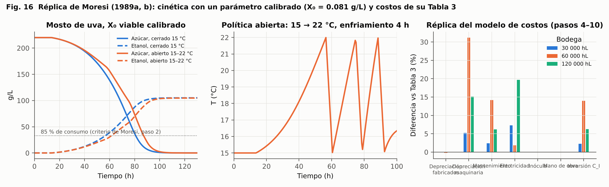<figcaption>Fig. 16. Perfiles de azúcar, etanol y temperatura con la cinética calibrada, y diferencia porcentual de cada partida de costo frente a la Tabla 3.</figcaption></figure>
<div class="prose"><h3>Aplicación al jugo de piña</h3></div>
<div class="tbl"><table><thead><tr><th>Política</th><th>T₀</th><th>t para 85 % (h)</th><th>t para 97,5 % (h)</th></tr></thead><tbody><tr><td>cerrado (isotérmico)</td><td>15 °C</td><td class="num">64,0</td><td class="num">74,5</td></tr><tr><td>cerrado (isotérmico)</td><td>18 °C</td><td class="num">64,0</td><td class="num">73,0</td></tr><tr><td>cerrado (isotérmico)</td><td>20 °C</td><td class="num">67,0</td><td class="num">75,0</td></tr><tr><td>cerrado (isotérmico)</td><td>22 °C</td><td class="num">73,5</td><td class="num">81,5</td></tr><tr><td>cerrado (isotérmico)</td><td>25 °C</td><td class="num">98,0</td><td class="num">107,0</td></tr><tr><td>cerrado (isotérmico)</td><td>28 °C</td><td class="num">231,5</td><td class="num">no termina</td></tr><tr><td>cerrado (isotérmico)</td><td>30 °C</td><td class="num">no termina</td><td class="num">no termina</td></tr><tr><td>abierto 15–22 °C</td><td>15 °C</td><td class="num">65,5</td><td class="num">75,0</td></tr><tr><td>abierto 18–25 °C</td><td>18 °C</td><td class="num">72,5</td><td class="num">80,5</td></tr><tr><td>abierto 20–27 °C</td><td>20 °C</td><td class="num">84,0</td><td class="num">92,0</td></tr></tbody></table></div>
<div class="prose">
<p>Con 158,8 g/L, la cinética de Moresi da 64–75 h entre 15 y 22 °C. Por encima de 25 °C el tiempo crece muy rápido, y v_M se vuelve negativo cerca de 28–29 °C. La regresión es de vino blanco (15–25 °C) y no sirve para extrapolar al ensayo de Murcia Palacios a 30 °C (12,5 h). Por eso la tesis compara su línea rápida (dato de Murcia, 30 °C) con su línea premium (cinética de Moresi, 15–22 °C) usando dos modelos que no se pueden poner en la misma escala.</p>
<p><b>Ventaja de la línea premium.</b> La tesis atribuye a la conversión casi completa (99,2 %) un 15,4 % más de etanol por tonelada de azúcar. La descomposición muestra otra cosa: el cociente de etanol es 1,2 (+15,9 %). Ese cociente se separa en el cociente de rendimientos estequiométricos, Y_E de Moresi a 15 °C = 0.479 g/g frente a 0,416 g/g de Murcia (+15,1 %), y en la conversión (100,0 % frente a 98,7 %, +1,3 %). La línea rápida ya convierte el 98,7 % del azúcar. La ventaja reportada es un efecto del cambio de modelo, no de la línea premium.</p>
<p><b>Diseño de la bodega con el procedimiento de Moresi.</b> En caudal continuo bajo, el llenado de un tanque tarda V_F/Q_M y no las 1,5 h que supone Moresi, así que se corrigió Δt_c. El resultado más fuerte es la diferencia de régimen. La bodega de Moresi opera 28 días de vendimia; la piña puede operar todo el año, y eso divide la inversión de fermentación por un factor de 7,7 a 9,2. En operación continua, el óptimo sin restricción de llenado es un sistema cerrado de 30 m³. Pero tarda unas 29 h en llenarse, justo el riesgo de oxidación que la tesis discute en §4.2.4.</p>
</div>
<div class="tbl"><table><thead><tr><th>Caso</th><th>Régimen</th><th>V_F óptimo (m³)</th><th>N_F</th><th>Llenado (h)</th><th>Inversión (miles USD)</th><th>Costo (USD/m³ de vino)</th></tr></thead><tbody><tr><td>abierto 15-22C hasta 97.5%</td><td>continua (7 500 h)</td><td class="num">10</td><td class="num">10</td><td class="num">9,6</td><td class="num">235</td><td class="num">20,7</td></tr><tr><td>abierto 15-22C hasta 97.5%</td><td>estacional (28 d, como Moresi)</td><td class="num">70</td><td class="num">20</td><td class="num">4,3</td><td class="num">2 092</td><td class="num">80,2</td></tr><tr><td>cerrado 15C hasta 97.5%</td><td>continua (7 500 h)</td><td class="num">30</td><td class="num">4</td><td class="num">28,7</td><td class="num">289</td><td class="num">18,1</td></tr><tr><td>cerrado 15C hasta 97.5%</td><td>estacional (28 d, como Moresi)</td><td class="num">90</td><td class="num">15</td><td class="num">5,5</td><td class="num">2 653</td><td class="num">96,6</td></tr><tr><td>premium abierto 15-22C 5d</td><td>continua (7 500 h)</td><td class="num">10</td><td class="num">14</td><td class="num">9,6</td><td class="num">300</td><td class="num">22,8</td></tr><tr><td>premium abierto 15-22C 5d</td><td>estacional (28 d, como Moresi)</td><td class="num">70</td><td class="num">30</td><td class="num">4,3</td><td class="num">2 636</td><td class="num">96,2</td></tr><tr><td>rapida 30C (Murcia)</td><td>continua (7 500 h)</td><td class="num">10</td><td class="num">3</td><td class="num">9,6</td><td class="num">154</td><td class="num">27,5</td></tr><tr><td>rapida 30C (Murcia)</td><td>estacional (28 d, como Moresi)</td><td class="num">25</td><td class="num">11</td><td class="num">1,5</td><td class="num">1 190</td><td class="num">61,8</td></tr></tbody></table></div>
<figure>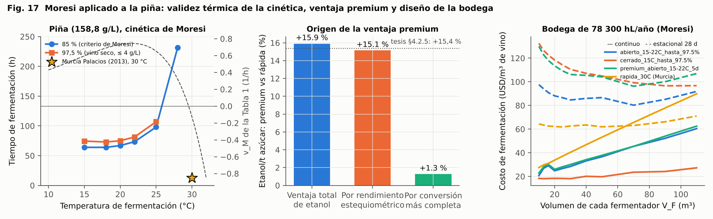<figcaption>Fig. 17. Tiempos de fermentación de piña según la temperatura, con v_M de la Tabla 1 en línea discontinua; descomposición de la ventaja premium; costo de fermentación frente a V_F en régimen continuo y estacional.</figcaption></figure>
</section>

<section id="capacidad">
<h2>Materia prima y análisis de capacidad</h2>
<div class="prose">
<p>El balance se arma con las fracciones de la fruta entera: pulpa 45 % (25–55 %), cáscara 30 %, corazón 10 % y corona 15 % <span class="tag">[L]</span>. Se usa el 87 % de rendimiento de jugo y los 158,8 g/L de la tesis. La oferta actual sale del documento regional de la UPRA (EVA 2022): 1 039 ha sembradas, 888 ha cosechadas, 6 146 t y 6,92 t/ha. Eso es un 58 % más que las 3 883 t de 2008 que usa la tesis.</p>
</div>
<div class="tbl"><table><thead><tr><th>Escenario de oferta</th><th>Fruta (t/año)</th><th>Vino posible (hL/año)</th><th>% de la base de la tesis</th><th>Harina (t/año)</th><th>Bromelaína (kg/año)</th></tr></thead><tbody><tr><td>Rechazo Quibdó (12 t/mes)</td><td class="num">144</td><td class="num">516</td><td class="num">0,7 %</td><td class="num">5</td><td class="num">43</td></tr><tr><td>Chocó, producción total 2008</td><td class="num">3 883</td><td class="num">13 911</td><td class="num">17,8 %</td><td class="num">136</td><td class="num">1 165</td></tr><tr><td>Chocó, producción total 2022 (EVA)</td><td class="num">6 146</td><td class="num">22 019</td><td class="num">28,1 %</td><td class="num">215</td><td class="num">1 844</td></tr><tr><td>Chocó 2022 × 25 % de pérdida poscosecha</td><td class="num">1 536</td><td class="num">5 505</td><td class="num">7,0 %</td><td class="num">54</td><td class="num">461</td></tr></tbody></table></div>
<div class="prose">
<p>A la inversa, la base de diseño de la tesis requiere 21 856 t/año de fruta y 9 835 t de pulpa. Para el resto de la planta implica 6 557 t de cáscara, 2 186 t de corazón y 3 278 t de corona. Los equipos que fijan la capacidad son:</p>
<ul class="tight">
<li><b>Calendario.</b> Con el escenario 3 de la plantilla (lun–sáb, 2 turnos de 6 h efectivas = 3 187 h/año), el frente procesa 6,9 t/h de fruta, contra 2,9 t/h si operara 7 500 h. La UHPH de 10 000 L/h que cita la tesis quedaría al 25 %, y un pasteurizador de 3 000 L/h cubre el caudal.</li>
<li><b>Envejecimiento.</b> 90 días a la producción de diseño exigen 1 931 m³ de tanques, el equipo más voluminoso de la planta.</li>
<li><b>Vinagre.</b> La acetificación estática (30 d, Roda 2017a) necesita 174 m³ de trabajo; un acetador sumergido a 50 kg/m³·d necesita 5,8 m³. Con la regla de Frings para planta piloto (200 L → 20 000 L/año; Bekatorou 2020, p. 93) serían 19,2 m³.</li>
<li><b>Energía.</b> El secado de la torta de cáscara evapora 2 513 t/año de agua y pide 8 043 GJ. La gasificación de la corona da 2 675 GJ de calor recuperable (33 %) y 54,5 kWe. Una caldera de biomasa con la misma corona entrega unos 8 917 GJ. El cuello de botella energético es de calor, no de electricidad.</li>
</ul>
</div>
<figure>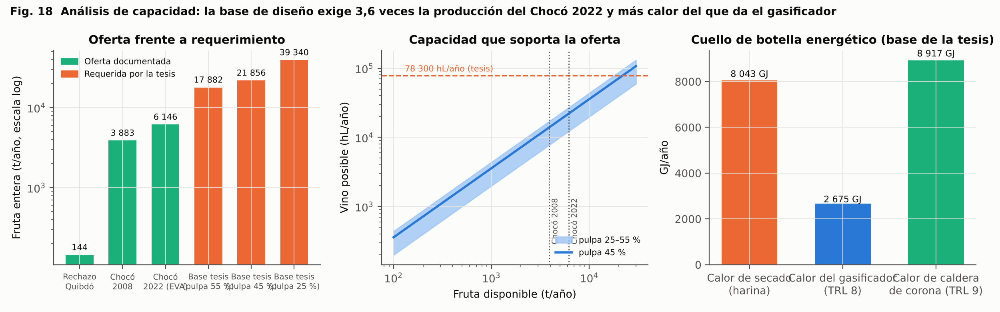<figcaption>Fig. 18. Oferta documentada frente a la fruta que exige la base de la tesis (escala logarítmica); capacidad de vino según la fruta disponible; balance de calor del secado.</figcaption></figure>
</section>

<section id="trl9">
<h2>Diseño industrial TRL-9</h2>
<div class="prose"><p>El diseño usa solo tecnologías con planta comercial operando (TRL 9). Cada equipo se dimensiona con el balance y el calendario, y se elige el tamaño de catálogo que cubre la necesidad al menor costo. La UHPH (TRL 8) se cambia por pasteurización flash. La gasificación (TRL 8) queda como alternativa de la caldera de biomasa. La deslignificación e hidrólisis de hojas y corona (TRL 6) y el ácido cítrico o la xantana a partir del hub (TRL 7) quedan fuera del diseño TRL-9.</p></div>
<div class="tbl"><table><thead><tr><th>Tecnología</th><th>TRL</th><th>Base</th></tr></thead><tbody><tr><td>Lavado, selección y pelado-descorazonado mecánico</td><td class="num">9</td><td>estándar en enlatadoras y jugos</td></tr><tr><td>Maceración enzimática + prensado</td><td class="num">9</td><td>práctica industrial en jugos de fruta</td></tr><tr><td>Microfiltración cerámica tangencial de jugo</td><td class="num">9</td><td>clarificación industrial de jugos</td></tr><tr><td>Pasteurización flash de mosto (HTST)</td><td class="num">9</td><td>alternativa TRL-9 a la UHPH</td></tr><tr><td>UHPH (Ypsicon)</td><td class="num">8</td><td>unidades comerciales recientes; poca referencia en mosto de piña</td></tr><tr><td>Fermentación alcohólica en tanques inox con camisa</td><td class="num">9</td><td>vinificación</td></tr><tr><td>Envejecimiento en tanques inox</td><td class="num">9</td><td>vinificación</td></tr><tr><td>Acetificación sumergida (acetador tipo Frings/Cetotec)</td><td class="num">9</td><td>&gt;60 % del vinagre mundial (Emde 2017; Bekatorou 2020)</td></tr><tr><td>Acetificación estática de superficie</td><td class="num">9</td><td>método tradicional (Orleans)</td></tr><tr><td>Bromelaína: extracción, UF y secado por aspersión</td><td class="num">9</td><td>producción comercial en Tailandia y Costa Rica</td></tr><tr><td>Polvo nutracéutico por secado por aspersión</td><td class="num">9</td><td>secado de jugos</td></tr><tr><td>Harina de fibra de cáscara (prensa + secador de banda + molino)</td><td class="num">9</td><td>harinas de subproductos de frutas</td></tr><tr><td>Etanol hidratado: fermentación + destilación</td><td class="num">9</td><td>industria alcoholera</td></tr><tr><td>Gasificación downdraft + motor (≤ 100 kWe)</td><td class="num">8</td><td>paquetes comerciales; confiabilidad limitada con biomasa húmeda</td></tr><tr><td>Pretratamiento/deslignificación + hidrólisis enzimática de hojas/corona</td><td class="num">6</td><td>piloto; no apto para diseño TRL-9</td></tr><tr><td>Ácido cítrico / xantana del hub</td><td class="num">7</td><td>comercial con melazas/glucosa, no con hidrolizado de piña</td></tr><tr><td>Decantadora centrífuga de pulpa</td><td class="num">9</td><td>extracción continua de jugos y mostos (Morata 2022, cap. 4)</td></tr><tr><td>Flotación de mosto</td><td class="num">9</td><td>clarificación de mostos blancos, continua o por lotes (Morata 2022, cap. 8)</td></tr><tr><td>Centrífuga de discos para mosto</td><td class="num">9</td><td>clarificación dinámica de mostos (Morata 2022, cap. 8)</td></tr><tr><td>Microfiltración tangencial de lías</td><td class="num">9</td><td>recuperación de jugo de lías y espumas (Morata 2022, cap. 8)</td></tr><tr><td>Sulfitado del mosto (SO2)</td><td class="num">9</td><td>práctica estándar de vinificación</td></tr><tr><td>UHPH del mosto (300 MPa)</td><td class="num">8</td><td>equipos industriales hasta 10 000 L/h, un solo proveedor (Morata 2022, cap. 5)</td></tr><tr><td>Inertización con N2</td><td class="num">9</td><td>protección del mosto y el vino frente al oxígeno (Morata 2022, caps. 23 y 25)</td></tr><tr><td>Prensado de cáscara con Ca(OH)2 al 0,1 %</td><td class="num">6</td><td>planta piloto neumática (Seguí y Fito 2018); sin referencia industrial</td></tr><tr><td>Bromelaína por precipitación con polisacárido</td><td class="num">5</td><td>laboratorio con jugo industrial (Campos et al. 2020)</td></tr><tr><td>Bromelaína por UF 10 kDa + liofilización</td><td class="num">6</td><td>UF industrial madura; con jugo de piña solo en laboratorio (Seguí y Fito 2018)</td></tr><tr><td>Extracción de jugo de hojas de piña</td><td class="num">6</td><td>extrusora a escala piloto (Chen et al. 2020); prensas de tornillo industriales maduras</td></tr><tr><td>Etanol y levadura de jugo de hojas (K. marxianus)</td><td class="num">5</td><td>laboratorio (Chen et al. 2020); TEA conceptual (Liao et al. 2022)</td></tr><tr><td>Digestión anaerobia de jugo de hojas + motor a biogás</td><td class="num">7</td><td>CSTR de banco (Liao et al. 2026); digestión agroindustrial y motores a biogás maduros</td></tr><tr><td>Ácido cítrico por fermentación (A. niger)</td><td class="num">9</td><td>industria; con jugo de piña sin referencia (SuperPro, Petrides)</td></tr><tr><td>Goma xantana por fermentación</td><td class="num">9</td><td>industria; con jugo de piña sin referencia (SuperPro, Petrides)</td></tr></tbody></table></div>
<div class="prose"><p>Lista de equipos a la escala de la tesis (21 856 t/año de fruta). Las cantidades y tamaños salen de <code>planta_trl9.py</code>, y los libros Excel traen la misma lista con costos:</p></div>
<div class="tbl"><table><thead><tr><th>Línea</th><th>Equipo</th><th>Unidades</th><th>Tamaño</th><th>Necesidad</th><th>TRL</th></tr></thead><tbody><tr><td>L1 Vino</td><td>Recepción, lavado y selección</td><td class="num">1</td><td>8,0 t/h</td><td class="num">6,9</td><td class="num">9</td></tr><tr><td>L1 Vino</td><td>Peladora-descorazonadora</td><td class="num">5</td><td>1,5 t/h por unidad</td><td class="num">6,9</td><td class="num">9</td></tr><tr><td>L1 Vino</td><td>Trituradora de pulpa</td><td class="num">1</td><td>5,0 t/h</td><td class="num">3,1</td><td class="num">9</td></tr><tr><td>L1 Vino</td><td>Macerador enzimático con camisa (1 h, 55 °C)</td><td class="num">1</td><td>5,0 m3</td><td class="num">3,5</td><td class="num">9</td></tr><tr><td>L1 Vino</td><td>Prensa de banda</td><td class="num">1</td><td>5,0 t/h</td><td class="num">3,1</td><td class="num">9</td></tr><tr><td>L1 Vino</td><td>Microfiltración cerámica (60 L/m²·h)</td><td class="num">1</td><td>60,0 m2</td><td class="num">42,2</td><td class="num">9</td></tr><tr><td>L1 Vino</td><td>Pasteurizador flash de mosto</td><td class="num">1</td><td>3 000,0 L/h</td><td class="num">2 533,0</td><td class="num">9</td></tr><tr><td>L1 Vino</td><td>Tanque pulmón de mosto (1 día)</td><td class="num">1</td><td>50,0 m3</td><td class="num">30,4</td><td class="num">9</td></tr><tr><td>L1 Vino</td><td>Fermentador inox con camisa 10 m³</td><td class="num">3</td><td>10,0 m3</td><td class="num">25,3</td><td class="num">9</td></tr><tr><td>L1 Vino</td><td>Propagador / pie de cuba</td><td class="num">1</td><td>0,5 m3</td><td class="num">0,5</td><td class="num">9</td></tr><tr><td>L1 Vino</td><td>Chiller agua-glicol</td><td class="num">1</td><td>80,0 kW</td><td class="num">53,2</td><td class="num">9</td></tr><tr><td>L1 Vino</td><td>Centrífuga clarificadora de discos</td><td class="num">1</td><td>2,0 m3/h</td><td class="num">1,5</td><td class="num">9</td></tr><tr><td>L1 Vino</td><td>Tanques de envejecimiento (90 d)</td><td class="num">14</td><td>160,0 m3</td><td class="num">2 123,8</td><td class="num">9</td></tr><tr><td>L1 Vino</td><td>Filtración final</td><td class="num">1</td><td>2,0 m3/h</td><td class="num">1,5</td><td class="num">9</td></tr><tr><td>L1 Vino</td><td>Cuarto frío (levaduras, enzimas)</td><td class="num">1</td><td>10,0 m3</td><td class="num">10,0</td><td class="num">9</td></tr><tr><td>L3 Vinagre</td><td>Acetador sumergido</td><td class="num">1</td><td>10,0 m3</td><td class="num">7,3</td><td class="num">9</td></tr><tr><td>L3 Vinagre</td><td>Tanques de vinagre (30 d)</td><td class="num">1</td><td>160,0 m3</td><td class="num">157,8</td><td class="num">9</td></tr><tr><td>L3 Vinagre</td><td>Filtración de vinagre</td><td class="num">1</td><td>0,5 m3/h</td><td class="num">0,5</td><td class="num">9</td></tr><tr><td>L4 Bromelaína + polvo</td><td>Trituradora de corazón</td><td class="num">1</td><td>1,0 t/h</td><td class="num">0,7</td><td class="num">9</td></tr><tr><td>L4 Bromelaína + polvo</td><td>Prensa de corazón</td><td class="num">1</td><td>1,0 t/h</td><td class="num">0,7</td><td class="num">9</td></tr><tr><td>L4 Bromelaína + polvo</td><td>Centrífuga de jugo de corazón</td><td class="num">1</td><td>0,5 m3/h</td><td class="num">0,4</td><td class="num">9</td></tr><tr><td>L4 Bromelaína + polvo</td><td>Ultrafiltración 10 kDa (25 L/m²·h)</td><td class="num">1</td><td>20,0 m2</td><td class="num">16,5</td><td class="num">9</td></tr><tr><td>L4 Bromelaína + polvo</td><td>Tanques de precipitación en frío</td><td class="num">1</td><td>0,5 m3</td><td class="num">0,2</td><td class="num">9</td></tr><tr><td>L4 Bromelaína + polvo</td><td>Secador por aspersión (bromelaína y polvo)</td><td class="num">3</td><td>50,0 kg agua/h</td><td class="num">123,4</td><td class="num">9</td></tr><tr><td>L4 Bromelaína + polvo</td><td>Empacadora</td><td class="num">1</td><td>1,0 u</td><td class="num">1,0</td><td class="num">9</td></tr><tr><td>L4 Bromelaína + polvo</td><td>Cuarto frío de producto</td><td class="num">1</td><td>10,0 m3</td><td class="num">10,0</td><td class="num">9</td></tr><tr><td>L5 Harina de cáscara</td><td>Trituradora de cáscara</td><td class="num">1</td><td>3,0 t/h</td><td class="num">2,1</td><td class="num">9</td></tr><tr><td>L5 Harina de cáscara</td><td>Prensa de tornillo/banda</td><td class="num">1</td><td>3,0 t/h</td><td class="num">2,1</td><td class="num">9</td></tr><tr><td>L5 Harina de cáscara</td><td>Secador de banda</td><td class="num">1</td><td>800,0 kg agua/h</td><td class="num">788,7</td><td class="num">9</td></tr><tr><td>L5 Harina de cáscara</td><td>Molino y tamizadora</td><td class="num">1</td><td>400,0 kg/h</td><td class="num">240,0</td><td class="num">9</td></tr><tr><td>L5 Harina de cáscara</td><td>Empacadora</td><td class="num">1</td><td>1,0 u</td><td class="num">1,0</td><td class="num">9</td></tr><tr><td>L5 Harina de cáscara</td><td>Generador de aire caliente / caldera</td><td class="num">1</td><td>800,0 kWt</td><td class="num">771,2</td><td class="num">9</td></tr><tr><td>L6 Etanol</td><td>Fermentador inox 10 m³ (etanol)</td><td class="num">3</td><td>10,0 m3</td><td class="num">22,9</td><td class="num">9</td></tr><tr><td>L6 Etanol</td><td>Centrífuga</td><td class="num">1</td><td>0,5 m3/h</td><td class="num">0,4</td><td class="num">9</td></tr><tr><td>L6 Etanol</td><td>Columna de destilación + condensador + rehervidor</td><td class="num">1</td><td>50,0 L/h etanol</td><td class="num">25,2</td><td class="num">9</td></tr><tr><td>L6 Etanol</td><td>Tanque de etanol</td><td class="num">1</td><td>30,0 m3</td><td class="num">21,3</td><td class="num">9</td></tr><tr><td>L7a Gasificación (TRL 8)</td><td>Picadora y secador de corona</td><td class="num">3</td><td>0,5 t/h</td><td class="num">1,0</td><td class="num">8</td></tr><tr><td>L7a Gasificación (TRL 8)</td><td>Gasificador downdraft + motor-generador</td><td class="num">1</td><td>80,0 kWe</td><td class="num">59,6</td><td class="num">8</td></tr></tbody></table></div>
</section>

<section id="tea">
<h2>TEA por línea (metodología Burk)</h2>
<div class="prose">
<p>Cada línea se evaluó con la misma cadena de sus TEA de asaí (v5.19) y coco (v12):</p>
<ul class="tight">
<li><b>Capital.</b> Costos de equipos por ley de potencia, actualizados con el IPP (182,84) y la TRM, con Fi = 1,3, 10 % de no listados y 5 % de flete. CapEx según Sinnott &amp; Towler: OSBL 0,23 y obra civil 0,15 sobre el ISBL; EPC 0,30 y contingencia 0,20 sobre costos directos.</li>
<li><b>Operación.</b> Nómina colombiana completa (salud 8,5 %, pensión 12 %, cesantías, intereses, prima, vacaciones, CCF, ARL y auxilio de transporte), supervisión 0,6 × mano de obra, mantenimiento 5 %, impuestos y seguros 3 %, y capital de trabajo de 1 mes.</li>
<li><b>Flujo de caja.</b> 10 años, inversión 30/70, primer año al 50 %, depreciación lineal (ET art. 137), renta 35 % con rezago de un año, arrastre de pérdidas sin tope y 95 % del producto vendido.</li>
<li><b>Riesgo.</b> Monte Carlo con hipercubo latino, Beta-PERT λ = 4 y correlación de Iman–Conover (ρ precio–materia prima = 0,45).</li>
</ul>
<p>La fruta se reparte entre las fracciones por masa.</p>
</div>
<div class="tbl"><table><thead><tr><th>Escala</th><th>Línea</th><th>FCI (MM COP)</th><th>VPN (MM COP)</th><th>MIRR</th><th>Costo nivelado</th><th>Precio supuesto</th><th>Precio de equilibrio</th><th>P(VPN&gt;0)</th></tr></thead><tbody><tr><td>Referencia TRL-9</td><td>-3 055</td><td class="num">-6 084</td><td class="num">7,0 %</td><td class="num">3,3 %</td><td class="num">12 %</td><td class="num">2 %</td><td class="num">—</td><td class="num">—</td></tr><tr><td>Topología anterior</td><td>-2 449</td><td class="num">-5 314</td><td class="num">7,4 %</td><td class="num">3,5 %</td><td class="num">15 %</td><td class="num">4 %</td><td class="num">—</td><td class="num">—</td></tr><tr><td>Óptimo (superestructura)</td><td>5 733</td><td class="num">2 577</td><td class="num">13,4 %</td><td class="num">11,6 %</td><td class="num">76 %</td><td class="num">52 %</td><td class="num">1 727</td><td class="num">1 987</td></tr><tr><td>Sin vinagre</td><td>3 053</td><td class="num">328</td><td class="num">12,6 %</td><td class="num">10,3 %</td><td class="num">63 %</td><td class="num">37 %</td><td class="num">—</td><td class="num">—</td></tr><tr><td>Sin caldera de corona</td><td>4 966</td><td class="num">1 882</td><td class="num">13,1 %</td><td class="num">11,2 %</td><td class="num">73 %</td><td class="num">49 %</td><td class="num">1 790</td><td class="num">2 045</td></tr><tr><td>B con bromelaína de corazón</td><td>5 925</td><td class="num">2 655</td><td class="num">12,9 %</td><td class="num">11,4 %</td><td class="num">74 %</td><td class="num">50 %</td><td class="num">1 711</td><td class="num">1 981</td></tr></tbody></table></div>
<figure>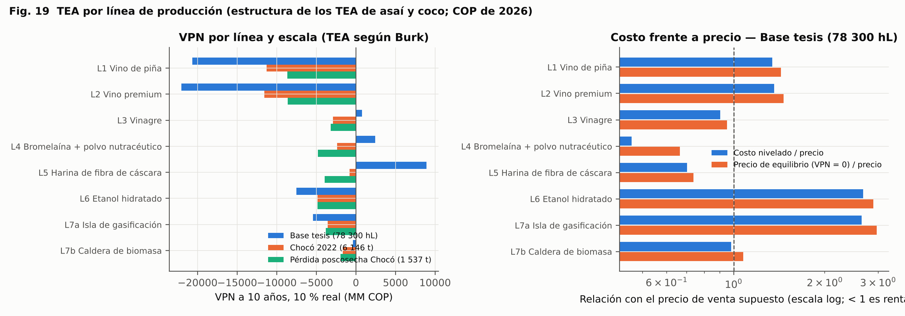<figcaption>Fig. 19. VPN por línea en tres escalas de oferta, y costo nivelado y precio de equilibrio relativos al precio supuesto, a la escala de la tesis.</figcaption></figure>
<div class="prose">
<p>A la escala de la tesis, la harina de cáscara (MIRR 20 %), la bromelaína y el vinagre son rentables. El vino a granel a 400 USD/t (1 600 COP/L) no lo es: su precio de equilibrio está cerca de 2 300 COP/L (≈0,57 USD/L). El etanol pierde por escala (≈200 000 L/año) y la gasificación por costo de capital y mano de obra 24/7. El factor Lang equivalente de la plantilla (FCI/compra ≈ 3,1) es menor que el 4,74 de Burk para plantas de fluidos. Es razonable para plantas de alimentos pequeñas, pero conviene declararlo en la tesis.</p>
</div>
<figure style="max-width:820px">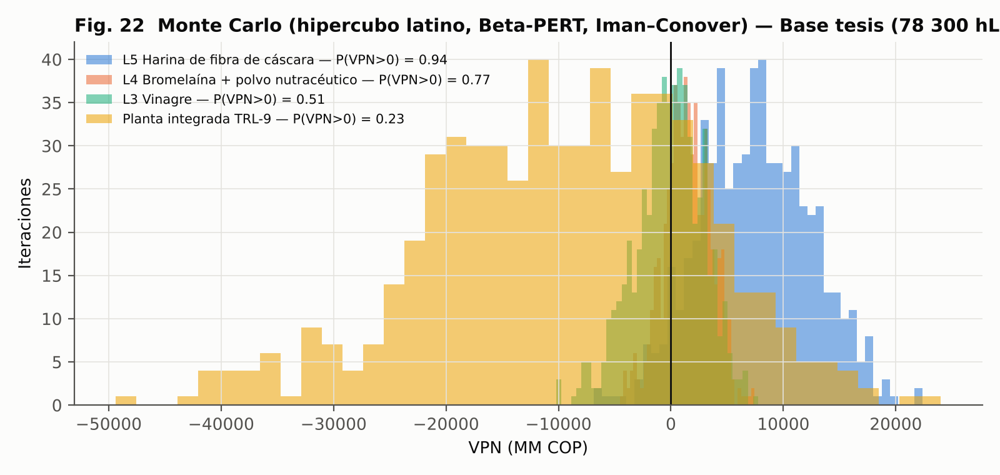<figcaption>Fig. 22. Distribución del VPN de las líneas rentables y de la planta integrada a la escala de la tesis.</figcaption></figure>
</section>

<section id="milp">
<h2>Qué procesar con la producción actual (MILP)</h2>
<div class="prose">
<p>Formulación (Grossmann, <i>Advanced Optimization for PSE</i>):</p>
<ul class="tight">
<li><b>Cargos fijos y tamaños:</b> se modelan con variables 0-1 (cap. 6). Cada línea elige un único tamaño de catálogo, una disyunción cuya envolvente convexa es exacta con variables SOS1 (cap. 7.2 y 10). Así las economías de escala entran sin no linealidades.</li>
<li><b>Lógica entre líneas:</b> se traduce de proposiciones a desigualdades (cap. 7.1). El vinagre requiere vino, el etanol requiere el prensado de cáscara, y el vino, la bromelaína y la harina requieren el frente de pelado.</li>
<li><b>Restricciones mensuales:</b> 12 meses con oferta estacional y fruta perecedera sin inventario entre meses, balances de fracciones, y sustitución de GLP por la caldera y de diésel por el gasificador.</li>
<li><b>Coeficientes:</b> salen del TEA en cada escala. El plan elegido se evalúa después con el TEA completo, con impuestos (enfoque polilítico, Kallrath 2021).</li>
</ul>
<p>Se compararon dos regímenes de abastecimiento: fruta de rechazo comprada entera a 400 COP/kg, o residuos de un procesador existente a 80 COP/kg (el supuesto de §3.3 de la tesis).</p>
</div>
<div class="tbl"><table><thead><tr><th>Escenario</th><th>Líneas</th><th>Fruta (t)</th><th>Pulpa → vino (t)</th><th>Cáscara → harina (t)</th><th>Corazón → bromelaína (t)</th><th>Vino vendido (m³)</th><th>Vinagre (m³)</th><th>Harina (t)</th><th>Bromelaína (kg)</th><th>Beneficio antes de imp. (MM COP/año)</th></tr></thead><tbody><tr><td>Chocó 2022 completo (6 146 t) | fruta 400 COP/kg, vino 1 600</td><td>ninguna</td><td class="num">0</td><td class="num">0</td><td class="num">0</td><td class="num">0</td><td class="num">0</td><td class="num">0</td><td class="num">0</td><td class="num">0</td><td class="num">0</td></tr><tr><td>Chocó 2022 completo (6 146 t) | fruta 400 COP/kg, vino 3 000</td><td>vino, harina</td><td class="num">5 733</td><td class="num">2 580</td><td class="num">1 720</td><td class="num">0</td><td class="num">2 054</td><td class="num">0</td><td class="num">138</td><td class="num">0</td><td class="num">555</td></tr><tr><td>Chocó 2022 completo (6 146 t) | residuos de procesador, 80 COP/kg</td><td>harina</td><td class="num">5 733</td><td class="num">0</td><td class="num">1 720</td><td class="num">0</td><td class="num">0</td><td class="num">0</td><td class="num">138</td><td class="num">0</td><td class="num">88</td></tr><tr><td>50 % de Chocó 2022 | fruta 400 COP/kg, vino 1 600</td><td>ninguna</td><td class="num">0</td><td class="num">0</td><td class="num">0</td><td class="num">0</td><td class="num">0</td><td class="num">0</td><td class="num">0</td><td class="num">0</td><td class="num">0</td></tr><tr><td>50 % de Chocó 2022 | fruta 400 COP/kg, vino 3 000</td><td>ninguna</td><td class="num">0</td><td class="num">0</td><td class="num">0</td><td class="num">0</td><td class="num">0</td><td class="num">0</td><td class="num">0</td><td class="num">0</td><td class="num">0</td></tr><tr><td>50 % de Chocó 2022 | residuos de procesador, 80 COP/kg</td><td>ninguna</td><td class="num">0</td><td class="num">0</td><td class="num">0</td><td class="num">0</td><td class="num">0</td><td class="num">0</td><td class="num">0</td><td class="num">0</td><td class="num">0</td></tr><tr><td>Base de la tesis (21 856 t) | fruta 400 COP/kg, vino 1 600</td><td>vino, vinagre, bromelaina, harina, caldera</td><td class="num">20 368</td><td class="num">9 165</td><td class="num">6 110</td><td class="num">2 037</td><td class="num">6 036</td><td class="num">1 933</td><td class="num">491</td><td class="num">6 110</td><td class="num">471</td></tr><tr><td>Base de la tesis (21 856 t) | fruta 400 COP/kg, vino 3 000</td><td>vino, bromelaina, harina, caldera</td><td class="num">20 368</td><td class="num">9 165</td><td class="num">6 110</td><td class="num">2 037</td><td class="num">7 297</td><td class="num">0</td><td class="num">491</td><td class="num">6 110</td><td class="num">9 648</td></tr><tr><td>Base de la tesis (21 856 t) | residuos de procesador, 80 COP/kg</td><td>bromelaina, harina, caldera</td><td class="num">20 368</td><td class="num">0</td><td class="num">6 110</td><td class="num">2 037</td><td class="num">0</td><td class="num">0</td><td class="num">491</td><td class="num">6 110</td><td class="num">4 856</td></tr></tbody></table></div>
<div class="tbl"><table><thead><tr><th>Régimen</th><th>Precio del vino (COP/L)</th><th>Oferta mínima viable (t fruta/año)</th></tr></thead><tbody><tr><td>Fruta de rechazo comprada</td><td class="num">1 600</td><td class="num">22 000</td></tr><tr><td>Fruta de rechazo comprada</td><td class="num">2 200</td><td class="num">11 000</td></tr><tr><td>Fruta de rechazo comprada</td><td class="num">3 000</td><td class="num">5 000</td></tr><tr><td>Fruta de rechazo comprada</td><td class="num">4 000</td><td class="num">3 000</td></tr><tr><td>Residuos de procesador (cualquier precio de vino)</td><td class="num">—</td><td class="num">6 146</td></tr></tbody></table></div>
<div class="prose"><p>Evaluación rigurosa de los planes con el TEA completo y Monte Carlo:</p></div>
<div class="tbl"><table><thead><tr><th>Plan</th><th>Líneas</th><th>Escala (t/año)</th><th>FCI (MM COP)</th><th>VPN (MM COP)</th><th>MIRR</th><th>Recuperación (años)</th><th>Personas</th><th>P(VPN&gt;0)</th></tr></thead><tbody><tr><td>Chocó 2022 completo (6 146 t) | fruta 400 COP/kg, vino 3 000</td><td>vino, harina</td><td class="num">6 200</td><td class="num">13 203</td><td class="num">1 154</td><td class="num">11,0 %</td><td class="num">6,0</td><td class="num">10</td><td class="num">44 %</td></tr><tr><td>Chocó 2022 completo (6 146 t) | residuos de procesador, 80 COP/kg</td><td>harina</td><td class="num">6 200</td><td class="num">4 224</td><td class="num">1 582</td><td class="num">13,9 %</td><td class="num">4,7</td><td class="num">4</td><td class="num">94 %</td></tr><tr><td>Base de la tesis (21 856 t) | fruta 400 COP/kg, vino 1 600</td><td>vino, vinagre, bromelaina, harina, caldera</td><td class="num">22 000</td><td class="num">49 493</td><td class="num">426</td><td class="num">10,1 %</td><td class="num">6,5</td><td class="num">16</td><td class="num">30 %</td></tr><tr><td>Base de la tesis (21 856 t) | fruta 400 COP/kg, vino 3 000</td><td>vino, bromelaina, harina, caldera</td><td class="num">22 000</td><td class="num">44 944</td><td class="num">32 292</td><td class="num">17,1 %</td><td class="num">3,8</td><td class="num">14</td><td class="num">99 %</td></tr><tr><td>Base de la tesis (21 856 t) | residuos de procesador, 80 COP/kg</td><td>bromelaina, harina, caldera</td><td class="num">22 000</td><td class="num">19 986</td><td class="num">24 589</td><td class="num">21,1 %</td><td class="num">2,9</td><td class="num">8</td><td class="num">100 %</td></tr></tbody></table></div>
<figure>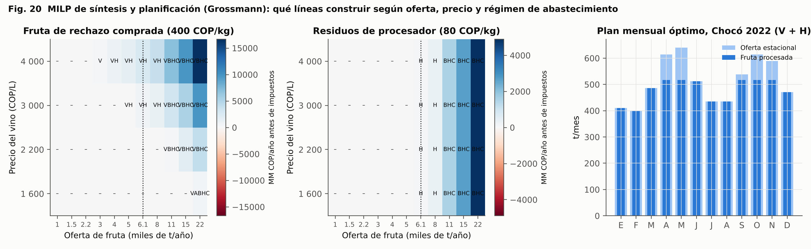<figcaption>Fig. 20. Beneficio anual del plan óptimo según la oferta de fruta y el precio del vino. Letras: V vino, A vinagre, B bromelaína, H harina, E etanol, C caldera, G gasificador. Derecha: plan mensual del Chocó 2022.</figcaption></figure>
<div class="prose">
<p><b>Respuesta para la producción actual (Chocó 2022, 6 146 t).</b> Con fruta comprada a 400 COP/kg y vino a granel a 1 600 COP/L no conviene procesar nada. Con vino a 3 000 COP/L, el óptimo procesa 5 733 t de fruta (93 % de la oferta; los picos de abril, mayo, octubre y noviembre exceden la capacidad elegida). De esa fruta salen unas 2 580 t de pulpa para unos 2 054 m³ de vino y 1 720 t de cáscara para unas 200 t de harina. El corazón y la corona se compostan, porque a esa escala la bromelaína y la caldera no pagan su capital. Si la cáscara viene de un procesador existente, la harina sola es la opción más robusta (P(VPN&gt;0) = 0,94).</p>
<p>La escala mínima viable depende sobre todo del precio del vino y del costo de la materia prima. La base de la tesis solo cierra con vino a 400 USD/t si se procesan unas 22 000 t/año, y esa cantidad no existe hoy en el Chocó.</p>
</div>
</section>

<section id="stn">
<h2>Programación semanal (STN)</h2>
<div class="prose"><p>Se usó el modelo de tiempo discreto de Maravelias (<i>Chemical Production Scheduling</i>, cap. 7.2.2):</p>
<ul class="tight">
<li>ec. 7.4: una tarea a la vez por unidad;</li>
<li>ec. 7.5: tamaño de lote acotado;</li>
<li>ec. 7.6: balance de inventario con capacidad de almacenamiento χ_k.</li>
</ul>
<p>Se agregaron la limpieza al cambiar de material en una unidad compartida (cap. 3) y ventanas de turno. El caso es la semana pico del plan del Chocó: 119 t de fruta con entregas diarias. El almacenamiento es limitado para los perecederos (pulpa 1,5 t, cáscara 3 t, torta 12 t) y hay un tanque pulmón de mosto de 50 m³.</p></div>
<div class="tbl"><table><thead><tr><th>Configuración</th><th>Estado SCIP</th><th>Binarias</th><th>Fruta semana (t)</th><th>Fruta sin procesar (t)</th><th>Ocupación por unidad</th></tr></thead><tbody><tr><td>Prensa compartida 3 t/h</td><td>optimal</td><td class="num">918</td><td class="num">119,0</td><td class="num">0,0</td><td>F1 31 %, F2 10 %, F3 10 %, Frente 100 %, MF 100 %, Prensa 58 %, Secador 100 %</td></tr><tr><td>Prensa compartida 2 t/h</td><td>optimal</td><td class="num">918</td><td class="num">119,0</td><td class="num">0,0</td><td>F1 21 %, F2 21 %, F3 10 %, Frente 100 %, MF 100 %, Prensa 64 %, Secador 100 %</td></tr><tr><td>Dos prensas 2 t/h</td><td>optimal</td><td class="num">918</td><td class="num">119,0</td><td class="num">0,0</td><td>F1 10 %, F2 21 %, F3 21 %, Frente 100 %, MF 100 %, PrensaC 100 %, PrensaP 100 %, Secador 100 %</td></tr></tbody></table></div>
<figure>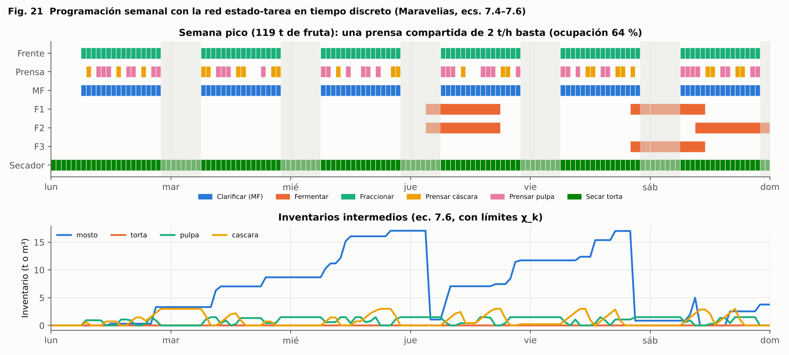<figcaption>Fig. 21. Programa óptimo con una prensa compartida de 2 t/h e inventarios intermedios. Franjas grises: fuera de turno; solo fermentadores y secador operan de noche.</figcaption></figure>
<div class="prose"><p>La prensa compartida evita comprar una segunda prensa. Como el pelado, la microfiltración y el secador quedan al 100 % en la semana pico, cualquier aumento de oferta requiere ampliar esas tres unidades antes que los fermentadores, que se ocupan entre 10 y 30 %.</p></div>
</section>

<section id="excel">
<h2>Libros Excel y verificación</h2>
<div class="prose"><p>Cada caso se exportó a un libro con las hojas de su plantilla: Inicio, Tablero, Modelo del proceso, Costos de Equipos, CapEx, OpEx &amp; Ingresos, Flujo de Caja, Tornado, Break-Even y Monte Carlo. Las celdas amarillas son editables y las cadenas de costos, nómina y flujo de caja tienen fórmulas vivas. Se recalcularon con LibreOffice y se compararon con Python:</p></div>
<div class="tbl"><table><thead><tr><th>Libro</th><th>VPN Python (MM COP)</th><th>VPN Excel (MM COP)</th><th>Diferencia relativa</th></tr></thead><tbody><tr><td>TEA_Base_tesis_21856t_L1_Vino_de_pi_a.xlsx</td><td class="num">-20 674</td><td class="num">-20 674</td><td class="num">2.0e-15</td></tr><tr><td>TEA_Base_tesis_21856t_L2_Vino_premium.xlsx</td><td class="num">-22 029</td><td class="num">-22 029</td><td class="num">1.7e-15</td></tr><tr><td>TEA_Base_tesis_21856t_L3_Vinagre.xlsx</td><td class="num">752</td><td class="num">752</td><td class="num">1.1e-15</td></tr><tr><td>TEA_Base_tesis_21856t_L4_Bromela_na.xlsx</td><td class="num">2 436</td><td class="num">2 436</td><td class="num">1.6e-15</td></tr><tr><td>TEA_Base_tesis_21856t_L5_Harina_de_c_scara.xlsx</td><td class="num">8 889</td><td class="num">8 889</td><td class="num">6.4e-16</td></tr><tr><td>TEA_Base_tesis_21856t_L6_Etanol.xlsx</td><td class="num">-7 515</td><td class="num">-7 515</td><td class="num">7.6e-16</td></tr><tr><td>TEA_Base_tesis_21856t_L7a_Gasificaci_n.xlsx</td><td class="num">-5 439</td><td class="num">-5 439</td><td class="num">7.0e-16</td></tr><tr><td>TEA_Base_tesis_21856t_L7b_Caldera.xlsx</td><td class="num">-351</td><td class="num">-351</td><td class="num">1.0e-15</td></tr><tr><td>TEA_Base_tesis_21856t_Planta_integrada_TRL_9.xlsx</td><td class="num">-3 656</td><td class="num">-3 656</td><td class="num">1.8e-15</td></tr><tr><td>TEA_Choco2022_Plan_Choco_2022_harina_con_residuos_de_procesador.xlsx</td><td class="num">1 582</td><td class="num">1 582</td><td class="num">2.1e-15</td></tr><tr><td>TEA_Choco2022_Plan_Choco_2022_vino_harina_vino_3_000_COP_L.xlsx</td><td class="num">1 154</td><td class="num">1 154</td><td class="num">5.6e-15</td></tr></tbody></table></div>
</section>

<section id="estocastico">
<h2>Optimización estocástica en dos etapas (§6.7)</h2>
<div class="prose">
<p>La formulación sigue a Grossmann (<i>Advanced Optimization for PSE</i>, cap. 14). Las decisiones de diseño d se toman aquí y ahora: líneas, tamaños de catálogo y frente de pelado. Las decisiones de operación z(θ), es decir compra de fruta, flujos mensuales, GLP y diésel, se ajustan después de conocer cada escenario θ. El problema (ec. 14.12) se resuelve como su equivalente determinista (ec. 14.19) con SCIP.</p>
<p>Escenarios: 27, de la combinación de oferta de fruta (×0,7 / ×1,0 / ×1,3 sobre las 6 146 t del Chocó, con probabilidades 0,25 / 0,5 / 0,25), precio del vino a granel (2 200 / 3 000 / 4 000 COP/L; 0,3 / 0,4 / 0,3) y precio de la harina (8 000 / 12 000 / 16 000 COP/kg; 0,25 / 0,5 / 0,25). El riesgo se trata con el criterio de §6.7: max (1−λ)·E[Π] + λ·CVaR<sub>0,9</sub>(Π), con CVaR<sub>β</sub> = ζ − (1/(1−β)) Σ p<sub>s</sub> máx(0, ζ − Π<sub>s</sub>).</p>
</div>
<div class="tbl"><table><thead><tr><th>Indicador</th><th>MM COP/año</th></tr></thead><tbody><tr><td>EV: problema de valor medio (lo que promete)</td><td class="num">672</td></tr><tr><td>RP: problema estocástico (27 escenarios)</td><td class="num">471</td></tr><tr><td>EEV: decisión del EV evaluada en los escenarios</td><td class="num">471</td></tr><tr><td>WS: esperar y ver (información perfecta)</td><td class="num">1 021</td></tr><tr><td>VSS = RP − EEV</td><td class="num">0</td></tr><tr><td>EVPI = WS − RP</td><td class="num">550</td></tr><tr><td>CVaR al 90 % de la solución RP</td><td class="num">-1 871</td></tr><tr><td>P(beneficio < 0) de la solución RP</td><td class="num">43 %</td></tr></tbody></table></div>
<div class="prose">
<p><b>Lectura de los indicadores.</b> El VSS es cero: la decisión de primera etapa del problema de valor medio (vino + harina a 6 200 t/año) es la misma que la del problema estocástico. Lo que cambia es la promesa: el EV anuncia 672 MM COP/año, y con esa misma planta el beneficio esperado real es 471 MM. Es el sesgo de los promedios: con precios y oferta asimétricos, la planta no aprovecha los escenarios buenos porque su capacidad la topa, y sí sufre los malos. El EVPI de 550 MM COP/año es alto. Medir la oferta real del Bajo Atrato y asegurar contratos de precio antes de invertir vale más que cualquier refinamiento del modelo.</p>
</div>
<div class="tbl"><table><thead><tr><th>Decisión óptima con información perfecta</th><th>Probabilidad</th></tr></thead><tbody><tr><td>harina+vino</td><td>54 %</td></tr><tr><td>no construir</td><td>41 %</td></tr><tr><td>vino</td><td>6 %</td></tr></tbody></table></div>
<div class="tbl"><table><thead><tr><th>λ (peso del CVaR)</th><th>Diseño</th><th>E[Π] (MM COP/año)</th><th>CVaR₉₀ (MM COP/año)</th></tr></thead><tbody><tr><td>0,0</td><td>harina+vino</td><td class="num">471</td><td class="num">-1 871</td></tr><tr><td>0,1</td><td>harina+vino</td><td class="num">471</td><td class="num">-1 871</td></tr><tr><td>0,2</td><td>harina+vino</td><td class="num">471</td><td class="num">-1 871</td></tr><tr><td>0,25</td><td>no construir</td><td class="num">0</td><td class="num">0</td></tr><tr><td>0,3</td><td>no construir</td><td class="num">0</td><td class="num">0</td></tr><tr><td>0,35</td><td>no construir</td><td class="num">0</td><td class="num">0</td></tr><tr><td>0,4</td><td>no construir</td><td class="num">0</td><td class="num">0</td></tr><tr><td>0,45</td><td>no construir</td><td class="num">0</td><td class="num">0</td></tr><tr><td>0,5</td><td>no construir</td><td class="num">0</td><td class="num">0</td></tr><tr><td>1,0</td><td>no construir</td><td class="num">0</td><td class="num">0</td></tr></tbody></table></div>
<div class="prose"><p><b>Aversión al riesgo.</b> La decisión cambia de golpe en λ* ≈ 20,1 % (λ* = E/(E − CVaR)). Por debajo conviene construir vino + harina; por encima, con fruta comprada a 400 COP/kg, conviene no construir. No aparece ningún diseño intermedio: las escalas pequeñas no pagan su costo fijo. Para la tesis, la frontera media-riesgo de §6.7 con la oferta actual tiene dos puntos, y el resultado depende sobre todo de la tolerancia al riesgo del inversionista.</p></div>
<figure>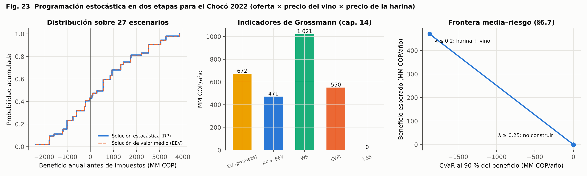<figcaption>Fig. 23. Distribución del beneficio en los 27 escenarios, indicadores de Grossmann y frontera media–CVaR.</figcaption></figure>
</section>

<section id="anual">
<h2>Programa anual con estacionalidad en tiempo continuo</h2>
<div class="prose">
<p>El modelo combina varias piezas de Maravelias (<i>Chemical Production Scheduling</i>):</p>
<ul class="tight">
<li><b>Rejilla continua común</b> (cap. 7.3, ec. 7.35–7.36): T<sub>0</sub> = 0, T<sub>|T|</sub> = η y T<sub>t</sub> ≥ T<sub>t−1</sub>. Los cortes de mes son puntos fijos y cada mes tiene K periodos de duración libre.</li>
<li><b>Procesos continuos</b> (cap. 9.2): lo producido es tasa × duración, con la tasa acotada por la capacidad.</li>
<li><b>Transiciones</b> (cap. 9.3.2): limpieza de 1 h al cambiar el material de la prensa compartida.</li>
<li><b>Inventarios</b> con capacidad χ<sub>k</sub> (cap. 8.2): fruta, 3 días de oferta pico; pulpa 1,5 t; cáscara 3 t; torta 12 t; pulmón de mosto 50 m³.</li>
</ul>
<p>La entrada de fruta es la tasa estacional del mes por la duración del periodo, así que es lineal en d y el modelo sigue siendo un MILP. Las unidades con personal operan el 36 % del tiempo calendario (2 turnos de lunes a sábado); la bodega y el secador, el 90 %. El programa es periódico: el inventario final del año es igual al inicial. Se comparó K = 2 y K = 4 periodos por mes para comprobar que la solución no depende de la rejilla.</p>
</div>
<div class="tbl"><table><thead><tr><th>Configuración</th><th>Estado</th><th>Fruta perdida (t/año)</th><th>Cambios de material</th><th>Vino (m³)</th><th>Harina (t)</th><th>Bromelaína (kg)</th><th>Cuellos de botella (máx. mensual)</th></tr></thead><tbody><tr><td>A: vino + harina, prensa compartida 2 t/h | K=2</td><td>gaplimit</td><td class="num">519,2</td><td class="num">1 022</td><td class="num">2 016</td><td class="num">197</td><td class="num">0</td><td>Prensa (100 %)</td></tr><tr><td>A: vino + harina, prensa compartida 2 t/h | K=4</td><td>gaplimit</td><td class="num">521,9</td><td class="num">1 026</td><td class="num">2 015</td><td class="num">197</td><td class="num">0</td><td>Prensa (100 %)</td></tr><tr><td>B: vino + harina + bromelaína, prensa compartida 2 t/h | K=2</td><td>gaplimit</td><td class="num">1 577,6</td><td class="num">1 243</td><td class="num">1 637</td><td class="num">160</td><td class="num">1 371</td><td>Prensa (100 %)</td></tr><tr><td>B: vino + harina + bromelaína, prensa compartida 2 t/h | K=4</td><td>gaplimit</td><td class="num">1 587,0</td><td class="num">1 247</td><td class="num">1 633</td><td class="num">160</td><td class="num">1 368</td><td>Prensa (100 %)</td></tr><tr><td>B con prensa de 3 t/h | K=2</td><td>gaplimit</td><td class="num">219,9</td><td class="num">1 073</td><td class="num">2 123</td><td class="num">207</td><td class="num">1 778</td><td>Frente (100 %)</td></tr><tr><td>B con prensa de 3 t/h | K=4</td><td>gaplimit</td><td class="num">219,9</td><td class="num">1 078</td><td class="num">2 123</td><td class="num">207</td><td class="num">1 778</td><td>Frente (100 %)</td></tr></tbody></table></div>
<figure>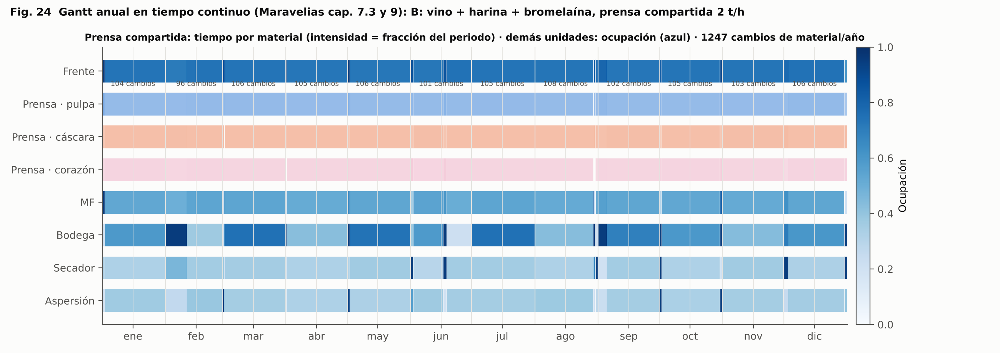<figcaption>Fig. 24. Gantt anual: campañas de la prensa compartida por material, con marcas de cambio, y carga de cada unidad por periodo.</figcaption></figure>
<figure>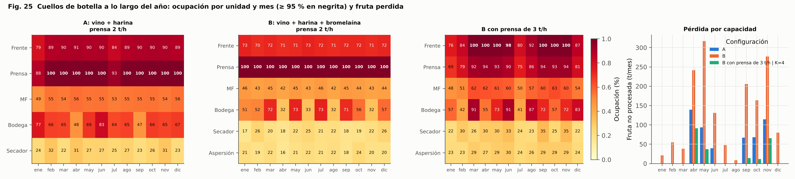<figcaption>Fig. 25. Ocupación por unidad y mes en cada configuración (en negrita, ≥ 95 %) y fruta no procesada por falta de capacidad.</figcaption></figure>
<figure>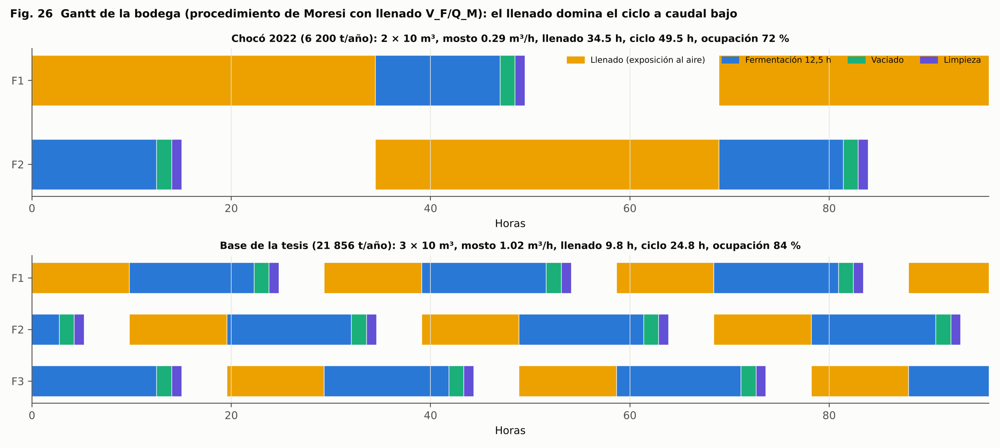<figcaption>Fig. 26. Gantt de la bodega con fermentadores desfasados a la escala del Chocó y a la de la tesis.</figcaption></figure>
<div class="prose">
<p><b>Cuellos de botella identificados.</b> El programa anual, el semanal (Fig. 21) y el de bodega (Fig. 26) se complementan:</p>
<ul class="tight">
<li><b>Prensa compartida.</b> Con vino + harina y una prensa de 2 t/h, la prensa está al 100 % en diez de los doce meses: los ciclos de cambio y limpieza, unos 2,8 por día, le quitan tiempo aun con poca oferta. La fruta se pierde en abril–junio y septiembre–noviembre, unas 520 t al año (8 % de la oferta).</li>
<li><b>Con bromelaína.</b> Al agregarla, la prensa reparte su tiempo entre tres materiales y la pérdida sube a unas 1 580 t (26 %). La prensa es el cuello principal de cualquier ampliación del portafolio.</li>
<li><b>Prensa de 3 t/h.</b> La pérdida baja a unas 220 t (3,6 %) y el cuello pasa al frente de pelado, que queda al 100 %. La bodega llega al 83–91 % en los picos.</li>
<li><b>Unidades con holgura.</b> La microfiltración (≤ 63 %) y el secador (≤ 35 %) nunca son limitantes.</li>
</ul>
<p>La secuencia de ampliación queda: primero una prensa de 3 t/h o una prensa dedicada al corazón, después una segunda peladora, y luego fermentadores. En la bodega, a caudal bajo, cada fermentador tarda más en llenarse (34,5 h a la escala del Chocó) que en fermentar (12,5 h). Esa exposición al aire es el problema de oxidación de §4.2.4.</p>
<p>La semana pico del STN (Fig. 21) mostraba la prensa de 2 t/h al 64 %. Ahí la oferta semanal estaba topada por el frente del plan del MILP (119 t/semana), y el acoplamiento con el almacenamiento era exacto. En el modelo anual la oferta del pico llega a unas 640 t/mes y el acoplamiento lineal es conservador. Los dos resultados acotan la ocupación real de la prensa entre esos valores.</p>
</div>
</section>


<section id="dimensionamiento">
<h2>Dimensionamiento óptimo de equipos para balancear los flujos</h2>
<div class="prose">
<p><b>Por qué hace falta.</b> El diseño TRL-9 (<code>planta_trl9.py</code>) dimensiona cada equipo por separado, con el flujo medio anual y el tamaño de catálogo más barato que lo cubre. Así cada equipo queda bien en promedio, pero los flujos no quedan balanceados: con la cosecha estacional, unos equipos topan la producción en los meses pico mientras otros pasan el año a medio uso (Fig. 25). El apartado que se propone para la tesis dimensiona todos los equipos <i>a la vez</i> y con el programa anual dentro del mismo modelo (diseño y operación simultáneos). Así el tamaño de cada equipo se elige mirando lo que pasa aguas arriba y aguas abajo en cada mes.</p>
<p><b>Formulación</b> (<code>dimensionamiento.py</code>, MILP en SCIP):</p>
<ul class="tight">
<li><b>Elección de tamaño como disyunción</b> (Grossmann 2021, cap. 10): para cada equipo u, ∨<sub>s</sub>[y<sub>us</sub>; cap<sub>u</sub> = cap<sub>us</sub>; costo<sub>u</sub> = C<sub>us</sub>] con Σ<sub>s</sub> y<sub>us</sub> = 1. Los tamaños salen del catálogo de <code>planta_trl9.CAT</code>; cada opción incluye los equipos que la acompañan (por ejemplo, la prensa con su trituradora y su macerador, la bodega con su chiller y su centrífuga, el secador con su caldera y su molino). La clarificación, la recuperación de lías y la estabilización del mosto son etapas propias con alternativas tecnológicas (ver la superestructura ampliada).</li>
<li><b>Producto tamaño × horas.</b> La capacidad de un periodo es cap<sub>us</sub>·y<sub>us</sub>·h<sub>t</sub>, con h<sub>t</sub> continua. Se linealiza de forma exacta con variables g<sub>ust</sub> ≤ H·y<sub>us</sub>, Σ<sub>s</sub> g<sub>ust</sub> ≤ h<sub>t</sub> (0-1 por continua acotada, Grossmann cap. 7.3). Lo mismo para la prensa en tiempo compartido y para el acoplamiento con los pulmones perecederos, donde la capacidad del frente multiplica el tiempo de campaña.</li>
<li><b>Bodega de Moresi lineal en N<sub>F</sub>.</b> De N<sub>F</sub> = Q·Δt<sub>c</sub>/V<sub>F</sub> con Δt<sub>c</sub> = V<sub>F</sub>/Q + t<sub>proc</sub> (Moresi 1989b, con la corrección del tiempo de llenado) sale Q ≤ (N<sub>F</sub> − 1)·V<sub>F</sub>/t<sub>proc</sub>: mientras un fermentador se llena, los demás fermentan. Es lineal en el número de fermentadores.</li>
<li><b>Operación anual</b>: la misma rejilla continua anclada a los meses, la prensa compartida con limpiezas, los inventarios periódicos y la oferta estacional del programa anual (Maravelias caps. 7.3, 8.2, 9.3.2 y 10), con K = 2 periodos por mes.</li>
<li><b>Palancas de flujo además del tamaño.</b> Una prensa dedicada a la cáscara (evita los cambios de material), una decantadora dedicada a la pulpa, un almacén aséptico de mosto de 10 a 800 m³ (puede guardar el mosto de los meses pico para fermentarlo en los valles), un tercer turno en el frente (368 MM COP/año de nómina adicional con prestaciones y supervisión, la alternativa operativa a comprar equipo) y el compostaje de la cáscara que no se alcance a secar.</li>
<li><b>Objetivo</b>: maximizar el margen anual, es decir la contribución (ingresos − costos variables del TEA de cada línea − fruta a 400 COP/kg − cambios) menos el cargo de capital de los equipos. El cargo es 76,2 % del costo de compra por año: factor Lang equivalente de Burk 3,1 × (CRF del 10 % a 10 años + 5 % de mantenimiento + 3 % de impuestos locales). La nómina base y los costos fijos que no dependen del tamaño no entran, porque no cambian la elección. Por eso los márgenes de esta sección no son el VPN del TEA.</li>
</ul>
</div>
<h3>Superestructura ampliada con <i>White Wine Technology</i></h3>
<div class="prose"><p>La versión anterior fijaba la topología de la tesis: prensa de banda, microfiltración del mosto y pasteurización flash. Con <i>White Wine Technology</i> (Morata, ed., 2022) se agregaron alternativas en cada etapa del mosto. El MILP elige la tecnología y el tamaño a la vez; las pérdidas y los costos variables dependen de la opción elegida y se modelan por opción (flujo por alternativa, con la misma linealización exacta).</p></div>
<div class="tbl"><table><thead><tr><th>Etapa</th><th>Alternativas</th><th>Base técnica (Morata 2022)</th><th>Costos y pérdidas [S]</th></tr></thead><tbody><tr><td>Extracción de pulpa</td><td>Prensa de banda (compartida con cáscara y corazón, o solo pulpa) · decantadora centrífuga</td><td>Cap. 4: la decantadora es continua, rinde más del 80 % y entrega mosto de 150–400 NTU; consume más energía y mantenimiento</td><td>Decantadora: +4,5 kWh/t de pulpa</td></tr><tr><td>Clarificación del mosto</td><td>MF cerámica · flotación · centrífuga de discos</td><td>Cap. 8: la MF tangencial «no está adaptada a la clarificación de mostos» por su bajo caudal; la turbidez objetivo es 100–200 NTU. Quesada Salas (2013), jugo pulposo de piña en planta piloto: 2 850–3 570 NTU y 10,5 % de sólidos insolubles; MFT sostenida a 40–50 L/m²·h con FRV 3,7 (73 % de jugo clarificado)</td><td>MF: 45 L/m²·h, 27 % de retenido, membranas 15 %/año · flotación: 2 900 COP/m³, 18 % de espumas · centrífuga: 2 800 COP/m³, 12 % de lodos (escalados con los sólidos de la piña)</td></tr><tr><td>Recuperación de lías y espumas</td><td>No · MF tangencial de lías (30 L/m²·h)</td><td>Cap. 8: lías y espumas tienen 80–90 % de jugo en uva; la MF de lías es la aplicación industrial de la MF</td><td>Recupera el 60 % del jugo de los lodos de piña [S]; el retenido de la MF de mosto no se vuelve a filtrar</td></tr><tr><td>Destino de lías y retenidos</td><td>Compostaje · línea de harina (secador)</td><td>Quesada Salas (2013) recomienda valorizar el retenido; Vasiljevic (2020): la fibra insoluble de la piña (celulosa y hemicelulosa) es la base de la harina de fibra</td><td>0,11 t de harina por t de lías; cada t carga el secador como 1,16 t de torta</td></tr><tr><td>Vinagre</td><td>Sin vinagre · vino desviado a vinagre · jugo de cáscara fermentado y acetificado</td><td>Emde (2017, Ullmann's, planta Frings): acetificador sumergido de 40–60 kg/m³·d, rendimiento cercano al teórico (46 g etanol → 60 g ácido), ΔH = −493 kJ/mol, aireación 0,1–0,15 vvm, grupo electrógeno de emergencia obligatorio. Bekatorou (2020, cap. 14): vinagre de residuos de piña al 5 %</td><td>50 kg/m³·d; 94 % del teórico; frío con COP 4 y grupo electrógeno; vinagre al 5 % a 2 200 COP/L [S]</td></tr><tr><td>Estabilización</td><td>Pasteurización flash (HTST, 75 °C) · SO₂ (≈ 50 mg/L) · UHPH (300 MPa)</td><td>Cap. 5: UHPH industrial hasta 10 000 L/h, esteriliza e inactiva la polifenoloxidasa sin SO₂; un solo proveedor (TRL 8 en mosto de piña)</td><td>HTST: 4 484 COP/m³ · SO₂: 1 500 COP/m³ · UHPH: 100 kWh/m³ ≈ 140 000 COP/m³</td></tr><tr><td>Calor de proceso</td><td>GLP · caldera de biomasa con corona (100–500 kWt) + GLP de respaldo</td><td>Línea L7b del TEA (TRL 9); balance de energía de la Fig. 35: la corona podía cubrir casi todo el calor del secado</td><td>Corona con 20 % de MS, 17 MJ/kg, caldera al 80 % (2 720 MJ útiles/t); picado 10 kWh/t; reemplaza GLP a 159 COP/MJ y evita el compostaje</td></tr><tr><td>Pretratamiento de la cáscara (v9)</td><td>Agua · Ca(OH)₂ al 0,1 %</td><td>Seguí y Fito (2018): la cal sube el licor al 68,4 % de la cáscara</td><td>Más jugo (0,65 t/t) y menos torta y harina; 2 900 COP/t de cáscara</td></tr><tr><td>Enzima del jugo de cáscara (v9)</td><td>No · precipitación con polisacárido · UF 10 kDa (+ liofilización)</td><td>Campos et al. (2020); Seguí y Fito (2018): la bromelaína sale del jugo antes de fermentarlo y el jugo fermenta mejor</td><td>0,78 kg/t de jugo; UF a mitad de precio por su baja actividad</td></tr><tr><td>En todos los diseños</td><td>Inertización con N₂ · dosificación de nutrientes (DAP 200 mg/L)</td><td>Caps. 12, 23 y 25: nitrógeno asimilable < 140 mg/L es deficiencia; el llenado lento de los fermentadores exige proteger el mosto del oxígeno</td><td>Generador de N₂ y dosificador en el FCI; DAP 1 600 COP/m³; N₂ 0,5 kWh/m³ de vino</td></tr></tbody></table></div>
<figure>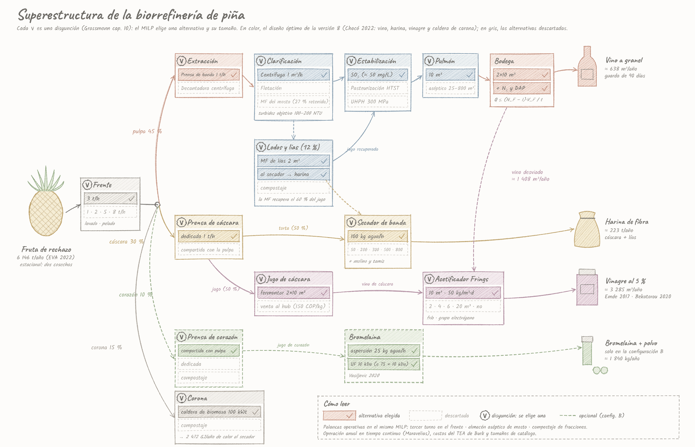<figcaption>Fig. 33. Superestructura de la biorrefinería: etapas, alternativas de cada disyunción y destinos de cada fracción. En color, el diseño óptimo de la versión 10 (con la fila nueva de hojas de la planta); en gris punteado, las alternativas descartadas; en verde punteado, la bromelaína del corazón de la configuración B.</figcaption></figure>
<div class="prose"><p>Dos efectos de calidad del libro no entran en el objetivo: la turbidez objetivo del mosto (100–200 NTU) y el riesgo de fermentación lenta con mostos clarificados en exceso, por falta de fitoesteroles. Los dos van en contra de la microfiltración del mosto, de modo que, si el MILP la descarta por costo, la calidad refuerza esa decisión. Los costos de la decantadora, el flotador, la UHPH y la microfiltración de lías son supuestos de orden de magnitud: el libro da capacidades, no precios.</p></div>
<div class="tbl"><table><thead><tr><th>Diseño</th><th>Tamaños</th><th>FCI equipos (MM COP)</th><th>Margen (MM COP/año)</th><th>Fruta procesada</th><th>Cambios/año</th><th>Vino (m³)</th><th>Harina (t)</th><th>Cuellos (≥ 95 %)</th></tr></thead><tbody><tr><td>Diseño v10 con parámetros v11</td><td>Frente 3 t/h; Prensa 1 t/h; Prensa cáscara 1 t/h; Clarificación Centrífuga 1 m³/h; MF lías 2 m²; Estabilización SO₂; Bodega 2×10 m³; Secador 100 kg agua/h; Bodega cáscara 4×10 m³; Acetificador 20 m³; Caldera de corona 100 kWt; Almacén de mosto 10 m³; Extractora hojas 2 t/h</td><td class="num">18 158</td><td class="num">3 694</td><td class="num">99,9 %</td><td class="num">0</td><td class="num">2 047</td><td class="num">148</td><td>MF lías (100 %), Extractora hojas (100 %), Prensa (100 %)</td></tr><tr><td>Referencia TRL-9 (planta_trl9, 6 200 t)</td><td>Frente 2 t/h; Prensa 1 t/h; Prensa cáscara 1 t/h; Clarificación MF 20 m²; Estabilización HTST 1000 L/h; Bodega 2×10 m³; Secador 300 kg agua/h; Almacén de mosto 10 m³</td><td class="num">9 491</td><td class="num">-88</td><td class="num">96,4 %</td><td class="num">0</td><td class="num">1 550</td><td class="num">143</td><td>Frente (100 %)</td></tr><tr><td>Referencia con prensa única de 3 t/h compartida</td><td>Frente 2 t/h; Prensa 3 t/h; Prensa cáscara no; Clarificación MF 20 m²; Estabilización HTST 1000 L/h; Bodega 2×10 m³; Secador 300 kg agua/h; Almacén de mosto 10 m³</td><td class="num">9 607</td><td class="num">-130</td><td class="num">96,4 %</td><td class="num">715</td><td class="num">1 550</td><td class="num">143</td><td>Frente (100 %)</td></tr><tr><td>Óptimo con la topología anterior (prensa, MF de mosto, HTST)</td><td>Frente 3 t/h; Prensa 1 t/h; Prensa cáscara 1 t/h; Clarificación MF 20 m²; Estabilización HTST 1000 L/h; Bodega 2×10 m³; Secador 100 kg agua/h; Almacén de mosto 10 m³</td><td class="num">7 986</td><td class="num">219</td><td class="num">99,9 %</td><td class="num">0</td><td class="num">1 606</td><td class="num">148</td><td>Secador (100 %), Prensa (100 %)</td></tr><tr><td>Óptimo económico</td><td>Frente 3 t/h; Prensa 1 t/h; Prensa cáscara 1 t/h; Clarificación Centrífuga 1 m³/h; MF lías 2 m²; Estabilización SO₂; Bodega 2×10 m³; Secador 100 kg agua/h; Bodega cáscara 2×10 m³; Acetificador 10 m³; Caldera de corona 100 kWt; Almacén de mosto 10 m³; Extractora hojas 2 t/h</td><td class="num">14 757</td><td class="num">4 652</td><td class="num">99,9 %</td><td class="num">0</td><td class="num">2 047</td><td class="num">148</td><td>MF lías (100 %), Acetificador (100 %), Prensa (100 %)</td></tr><tr><td>Óptimo sin SO₂</td><td>Frente 3 t/h; Prensa 1 t/h; Prensa cáscara 1 t/h; Clarificación Centrífuga 1 m³/h; MF lías 2 m²; Estabilización HTST 1000 L/h; Bodega 2×10 m³; Secador 100 kg agua/h; Bodega cáscara 4×10 m³; Acetificador 10 m³; Caldera de corona 100 kWt; Almacén de mosto 10 m³; Extractora hojas 2 t/h</td><td class="num">15 977</td><td class="num">4 350</td><td class="num">99,9 %</td><td class="num">0</td><td class="num">2 047</td><td class="num">148</td><td>MF lías (100 %), Acetificador (100 %), Prensa (100 %)</td></tr><tr><td>Óptimo sin vinagre</td><td>Frente 3 t/h; Prensa 1 t/h; Prensa cáscara 1 t/h; Clarificación Centrífuga 1 m³/h; MF lías 2 m²; Estabilización SO₂; Bodega 2×10 m³; Secador 100 kg agua/h; Caldera de corona 100 kWt; Almacén de mosto 10 m³</td><td class="num">8 036</td><td class="num">1 567</td><td class="num">99,9 %</td><td class="num">0</td><td class="num">2 047</td><td class="num">148</td><td>Prensa (100 %), MF lías (100 %)</td></tr><tr><td>Óptimo sin caldera de corona</td><td>Frente 3 t/h; Prensa 1 t/h; Prensa cáscara 1 t/h; Clarificación Centrífuga 1 m³/h; MF lías 2 m²; Estabilización SO₂; Bodega 2×10 m³; Secador 100 kg agua/h; Bodega cáscara 2×10 m³; Acetificador 10 m³; Almacén de mosto 10 m³; Extractora hojas 2 t/h</td><td class="num">13 987</td><td class="num">4 450</td><td class="num">99,9 %</td><td class="num">0</td><td class="num">2 047</td><td class="num">148</td><td>Prensa (100 %), MF lías (100 %), Acetificador (100 %)</td></tr><tr><td>Óptimo sin opciones v10 (sin hojas ni hub)</td><td>Frente 3 t/h; Prensa 1 t/h; Prensa cáscara 1 t/h; Clarificación Centrífuga 1 m³/h; MF lías 2 m²; Estabilización SO₂; Bodega 2×10 m³; Secador 100 kg agua/h; Bodega cáscara 2×10 m³; Acetificador 10 m³; Caldera de corona 100 kWt; Almacén de mosto 10 m³</td><td class="num">14 218</td><td class="num">3 748</td><td class="num">99,9 %</td><td class="num">0</td><td class="num">2 047</td><td class="num">148</td><td>Acetificador (100 %), MF lías (100 %), Prensa (100 %)</td></tr><tr><td>Óptimo sin etanol de hojas</td><td>Frente 3 t/h; Prensa 1 t/h; Prensa cáscara 1 t/h; Clarificación Centrífuga 1 m³/h; MF lías 2 m²; Estabilización SO₂; Bodega 2×10 m³; Secador 100 kg agua/h; Bodega cáscara 2×10 m³; Acetificador 10 m³; Caldera de corona 100 kWt; Almacén de mosto 10 m³; Extractora hojas 2 t/h</td><td class="num">14 757</td><td class="num">4 652</td><td class="num">99,9 %</td><td class="num">0</td><td class="num">2 047</td><td class="num">148</td><td>MF lías (100 %), Acetificador (100 %), Prensa (100 %)</td></tr><tr><td>Óptimo sin digestor</td><td>Frente 3 t/h; Prensa 1 t/h; Prensa cáscara 1 t/h; Clarificación Centrífuga 1 m³/h; Estabilización SO₂; Bodega 2×10 m³; Secador 100 kg agua/h; Bodega cáscara 2×10 m³; Acetificador 10 m³; Caldera de corona 100 kWt; Almacén de mosto 10 m³; Extractora hojas 2 t/h</td><td class="num">14 440</td><td class="num">4 580</td><td class="num">99,9 %</td><td class="num">0</td><td class="num">1 935</td><td class="num">148</td><td>Acetificador (100 %), Prensa (100 %)</td></tr><tr><td>Óptimo sin azúcar añadido</td><td>Frente 3 t/h; Prensa 1 t/h; Prensa cáscara 1 t/h; Clarificación Centrífuga 1 m³/h; MF lías 2 m²; Estabilización SO₂; Bodega 2×10 m³; Secador 100 kg agua/h; Bodega cáscara 3×10 m³; Acetificador 10 m³; Caldera de corona 100 kWt; Almacén de mosto 10 m³; Extractora hojas 2 t/h</td><td class="num">15 219</td><td class="num">2 837</td><td class="num">99,9 %</td><td class="num">0</td><td class="num">2 047</td><td class="num">148</td><td>MF lías (100 %), Acetificador (100 %), Prensa (100 %)</td></tr><tr><td>Óptimo sin tope de demanda de vinagre</td><td>Frente 3 t/h; Prensa 1 t/h; Decantadora 1 t/h; Prensa cáscara no; Clarificación Centrífuga 1 m³/h; MF lías 2 m²; Estabilización SO₂; Bodega 2×10 m³; Secador 100 kg agua/h; Bodega cáscara 4×10 m³; Acetificador 40 m³; Caldera de corona 100 kWt; Almacén de mosto 10 m³; Extractora hojas 5 t/h</td><td class="num">26 202</td><td class="num">17 502</td><td class="num">99,9 %</td><td class="num">0</td><td class="num">2 047</td><td class="num">148</td><td>MF lías (100 %), Acetificador (100 %), Extractora hojas (100 %), Decantadora (100 %)</td></tr></tbody></table></div>
<figure>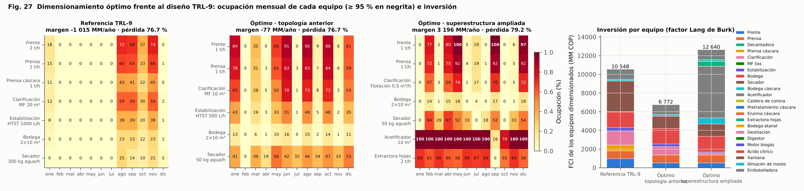<figcaption>Fig. 27. Ocupación mensual de cada equipo en el diseño TRL-9, en el óptimo con la topología anterior y en el óptimo con la superestructura ampliada, e inversión por equipo.</figcaption></figure>
<div class="prose">
<p><b>Qué cambia el óptimo con la oferta del Chocó 2022.</b> Frente al diseño TRL-9, el óptimo agranda el frente de 2 t/h a 3 t/h, que es el cuello del diseño de referencia, y reduce el secador de 300 kg agua/h a 100 kg agua/h, que pasaba el año al 17 %–33 %. Conserva las dos prensas dedicadas de 1 t/h y la bodega de 2 × 10 m³. En el mosto cambia la topología: la microfiltración de 20 m² se reemplaza por una centrífuga de discos de 1 m³/h, se agrega microfiltración de lías de 2 m² y la pasteurización flash se reemplaza por sulfitado. La fruta procesada sube de 96,4 % a 99,9 % de la oferta, la inversión en equipos sube en 5 266 MM COP (con el vinagre y la caldera) y el margen anual mejora en 4 740 MM COP. En los meses pico quedan al límite: MF lías (100 %), Acetificador (100 %), Prensa (100 %).</p>
<p><b>Qué aporta la superestructura ampliada.</b> Con la topología anterior (prensa, microfiltración del mosto y pasteurización), el mejor diseño da 219 MM COP/año con 7 986 MM COP de equipos. Sin contar el vinagre, la superestructura ampliada sube el margen a 1 567 (+1 348) con 50 MM COP más de inversión. La ganancia viene de tres decisiones: (1) una clarificación por centrífuga o flotación pierde mucho menos jugo que la microfiltración del mosto, que con los datos de Quesada Salas deja el 27 % como retenido; (2) la microfiltración de lías recupera el 60 % del jugo de los lodos de clarificación, 115 m³/año de mosto; (3) el sulfitado reemplaza a la pasteurización. Con el vinagre, el margen llega a 4 652 MM COP/año (siguiente subsección). Si el mercado exige vino sin SO₂, el modelo vuelve a HTST 1000 L/h y el margen baja en 303 MM COP/año; la UHPH no se elige porque su energía de compresión a 300 MPa, unos 100 kWh/m³ con la electricidad diésel de la zona, cuesta unos 140 000 COP por m³ de mosto. </p>
<p><b>Prensas dedicadas o una compartida.</b> Reemplazar las dos prensas de 1 t/h por una sola de 3 t/h compartida cuesta más (FCI 9 607 frente a 9 491 MM COP) y rinde menos (-130 frente a -88 MM COP/año): exige 715 cambios de material al año con su limpieza, y la fruta procesada no sube porque el cuello sigue en el frente. El cuello de la prensa compartida del programa anual se resuelve separando los materiales, no comprando una prensa más grande. </p>
</div>
<figure>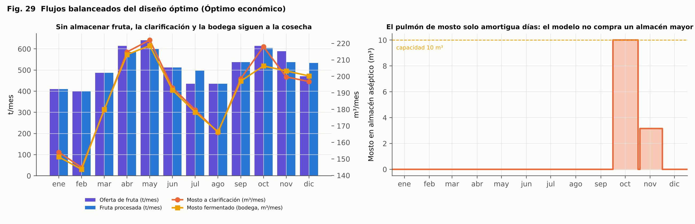<figcaption>Fig. 29. Flujos mensuales del diseño óptimo (oferta, fruta procesada, mosto clarificado y fermentado) e inventario del pulmón de mosto, que el modelo deja en 10 m³.</figcaption></figure>
<figure>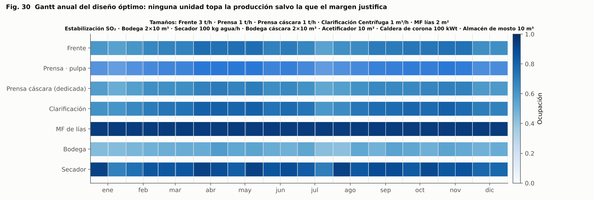<figcaption>Fig. 30. Gantt anual del diseño óptimo: ocupación de cada equipo por periodo de la rejilla continua.</figcaption></figure>
<h3>Versión 7: datos de piña y rutas de vinagre</h3>
<div class="prose">
<p><b>Calibración con Quesada Salas (2013).</b> La tesis de la Universidad de Costa Rica midió en planta piloto la microfiltración tangencial de jugo pulposo de piña con maceración enzimática previa. El jugo pulposo tiene 2 850–3 570 NTU y 10,5 % de sólidos insolubles, mucho más que un mosto de uva (400–3 000 NTU y 0,7–4 %). En ensayos de seis horas la membrana sostuvo 40–50 L/m²·h con un factor de reducción volumétrico de 3,7, es decir, el 73 % del jugo sale clarificado y el 27 % queda como retenido. La versión anterior suponía 60 L/m²·h y 2 % de retenido. Con los datos medidos, el diseño TRL-9 baja de 1 519 a 625 MM COP/año de margen y el mejor diseño con la topología anterior de 2 028 a 900. El óptimo sin vinagre baja de 2 318 a 2 057, porque los lodos de centrífuga también se escalaron con los sólidos de la piña (valores de la versión 7; los de la versión 9 están en la tabla de E1). Los lodos y el retenido ya no van solo a compostaje: pueden ir al secador de la línea de harina, como recomienda la misma tesis. Quesada Salas también recomienda centrifugar antes de microfiltrar: es la secuencia que elige el MILP, con la microfiltración solo para las lías.</p>
<p><b>Rutas de vinagre (Emde 2017, Ullmann's; Bekatorou 2020).</b> El acetificador sumergido de Frings produce 40–60 kg de ácido acético por m³ y día, con un rendimiento cercano al teórico (46 g de etanol dan 60 g de ácido). La reacción libera 493 kJ/mol, que en el Chocó hay que retirar con frío, y la aireación no puede parar: cortes de 10–45 s bajan la productividad hasta 80 %, de modo que el grupo electrógeno de emergencia es obligatorio en una zona no interconectada. Bekatorou (cap. 14) describe vinagre al 5 % hecho con residuos de piña. Aquí se modelan dos rutas: (1) desviar vino terminado al acetificador y (2) fermentar el jugo de la prensa de cáscara (104 g/kg de azúcar), que hoy se vende al hub a 150 COP/kg, y acetificarlo; el jugo prensado no necesita la sacarificación enzimática de Roda et al., que es más del 90 % del costo.</p>
<p>Con vino a 3 000 COP/L y vinagre a 2 200 COP/L, el óptimo agrega un acetificador de 10 m³ y una bodega de jugo de cáscara de 2×10 m³. Desvía 0 m³/año de vino y 1 065 t/año de jugo de cáscara, y produce 3 000 m³/año de vinagre al 5 %. El margen sube de 1 567 a 4 652 MM COP/año con 6 721 MM COP más de equipos. La razón es simple: un m³ de vino da unos 1,6 m³ de vinagre, que a 2 200 COP/L vale más que el vino a 3 000 COP/L y no necesita 90 días de guarda.</p>
<p><b>El resultado depende del precio del vinagre, que es un supuesto.</b> El barrido siguiente resuelve el MILP con cuatro precios del vino y dos del vinagre. El volumen de vinagre del óptimo, unos 3 millones de litros al año, habría que contrastarlo con el mercado colombiano de vinagre de frutas a granel antes de tomarlo como base de diseño.</p>
</div>
<div class="tbl"><table><thead><tr><th>Vino (COP/L)</th><th>Vinagre (COP/L)</th><th>Acetificador</th><th>Bodega de cáscara</th><th>Vino vendido (m³)</th><th>Vino a vinagre (m³)</th><th>Jugo de cáscara a vinagre (t)</th><th>Vinagre (m³)</th><th>Margen (MM COP/año)</th></tr></thead><tbody><tr><td class="num">1 600</td><td class="num">1 500</td><td>10 m³</td><td>2×10 m³</td><td class="num">1 990</td><td class="num">0</td><td class="num">1 065</td><td class="num">3 000</td><td class="num">-35</td></tr><tr><td class="num">2 200</td><td class="num">1 500</td><td>10 m³</td><td>2×10 m³</td><td class="num">2 047</td><td class="num">0</td><td class="num">1 065</td><td class="num">3 000</td><td class="num">1 102</td></tr><tr><td class="num">3 000</td><td class="num">1 500</td><td>10 m³</td><td>2×10 m³</td><td class="num">2 047</td><td class="num">0</td><td class="num">1 065</td><td class="num">3 000</td><td class="num">2 657</td></tr><tr><td class="num">4 000</td><td class="num">1 500</td><td>10 m³</td><td>2×10 m³</td><td class="num">2 047</td><td class="num">0</td><td class="num">1 065</td><td class="num">3 000</td><td class="num">4 602</td></tr><tr><td class="num">1 600</td><td class="num">2 200</td><td>10 m³</td><td>2×10 m³</td><td class="num">1 990</td><td class="num">0</td><td class="num">1 065</td><td class="num">3 000</td><td class="num">1 960</td></tr><tr><td class="num">2 200</td><td class="num">2 200</td><td>10 m³</td><td>2×10 m³</td><td class="num">2 047</td><td class="num">0</td><td class="num">1 065</td><td class="num">3 000</td><td class="num">3 097</td></tr><tr><td class="num">3 000</td><td class="num">2 200</td><td>10 m³</td><td>2×10 m³</td><td class="num">2 047</td><td class="num">0</td><td class="num">1 065</td><td class="num">3 000</td><td class="num">4 652</td></tr><tr><td class="num">4 000</td><td class="num">2 200</td><td>10 m³</td><td>2×10 m³</td><td class="num">2 047</td><td class="num">0</td><td class="num">1 065</td><td class="num">3 000</td><td class="num">6 597</td></tr></tbody></table></div>
<figure>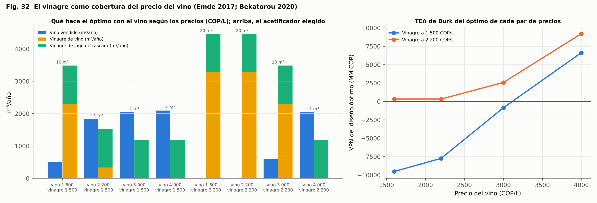<figcaption>Fig. 32. Destino del vino según los precios del vino y del vinagre, acetificador elegido y VPN del diseño óptimo de cada par de precios.</figcaption></figure>
<figure>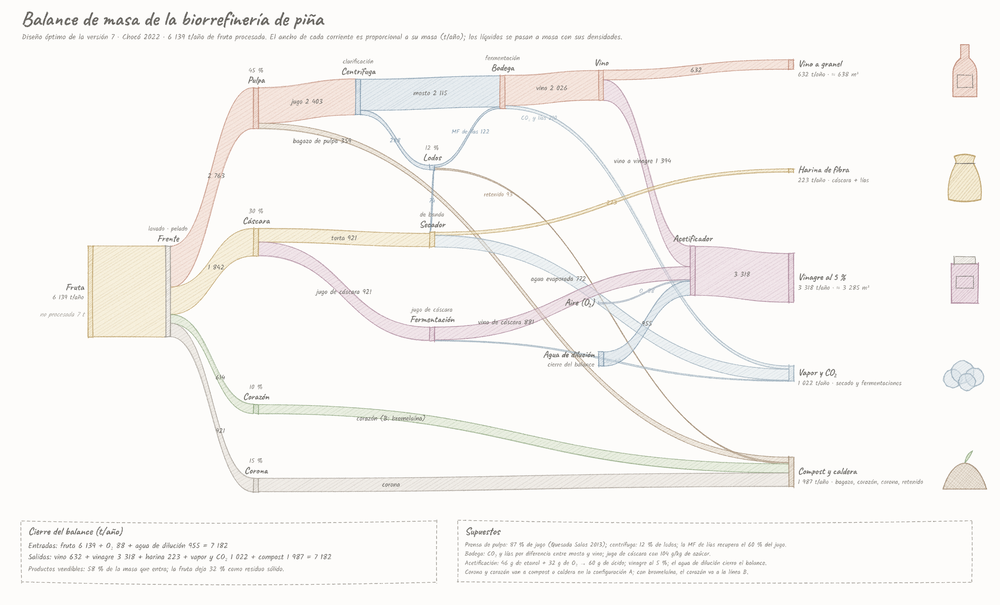<figcaption>Fig. 34. Balance de masa del diseño óptimo (t/año): el ancho de cada corriente es proporcional a su masa. El agua de dilución del vinagre cierra el balance; la corona quemada sale por la caldera. Abajo, las hojas de la planta (v10): jugo a la bodega de jugos y pulpa devuelta al campo.</figcaption></figure>
<figure>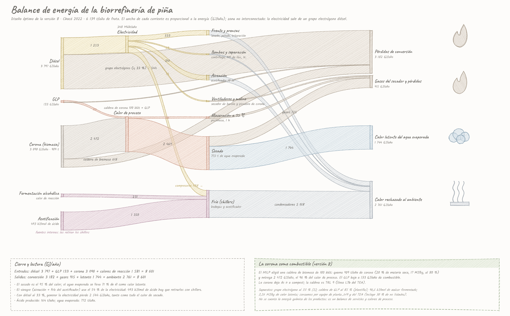<figcaption>Fig. 35. Balance de energía del diseño óptimo (GJ/año): electricidad de grupo electrógeno diésel, calor de proceso con caldera de corona y GLP, y calores de reacción retirados por los chillers.</figcaption></figure>
<figure>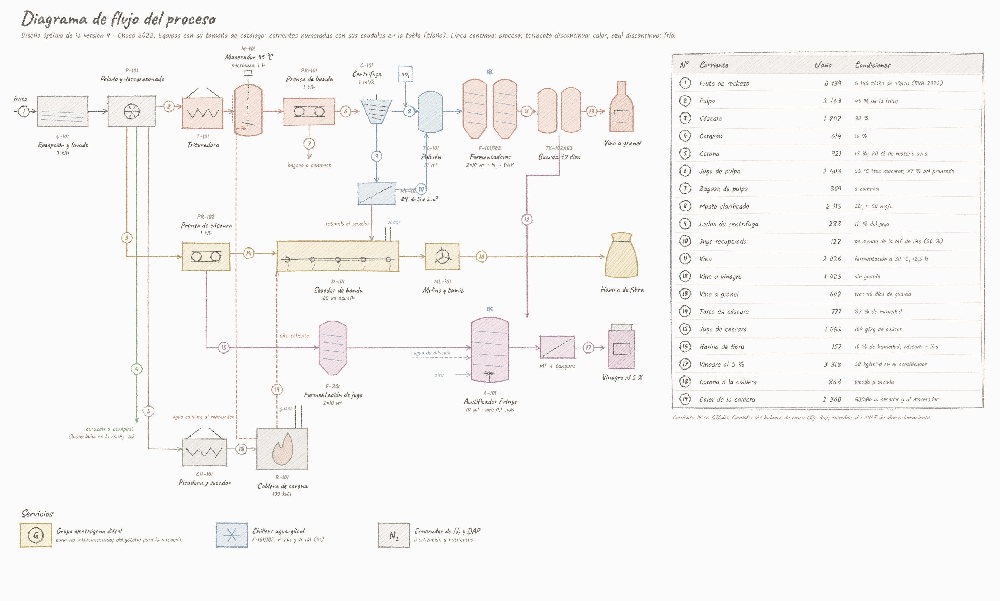<figcaption>Fig. 36. Diagrama de flujo del proceso del diseño óptimo: equipos con su código y tamaño, corrientes numeradas y tabla de corrientes (t/año y condiciones de operación); en la v10, la extractora de hojas EX-101 alimenta la bodega de jugos F-201. Calor en terracota discontinua; los chillers atienden los equipos marcados con ❄.</figcaption></figure>
<figure>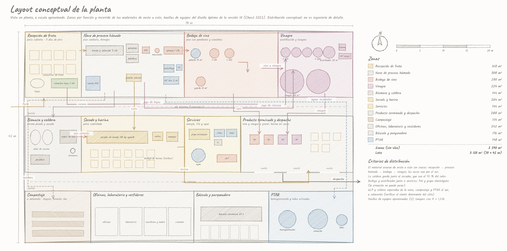<figcaption>Fig. 37. Layout conceptual de la planta (vista en planta, escala aproximada, lote de 70 × 45 m): doce zonas por función, huellas de equipos del diseño óptimo (tanques con H = 1,5·D) y recorridos de fruta, torta, corona, vino, vinagre, harina, residuos y aguas residuales. Distribución conceptual; la ingeniería de detalle debe verificar retiros, viento dominante y normativa sanitaria.</figcaption></figure>
<figure>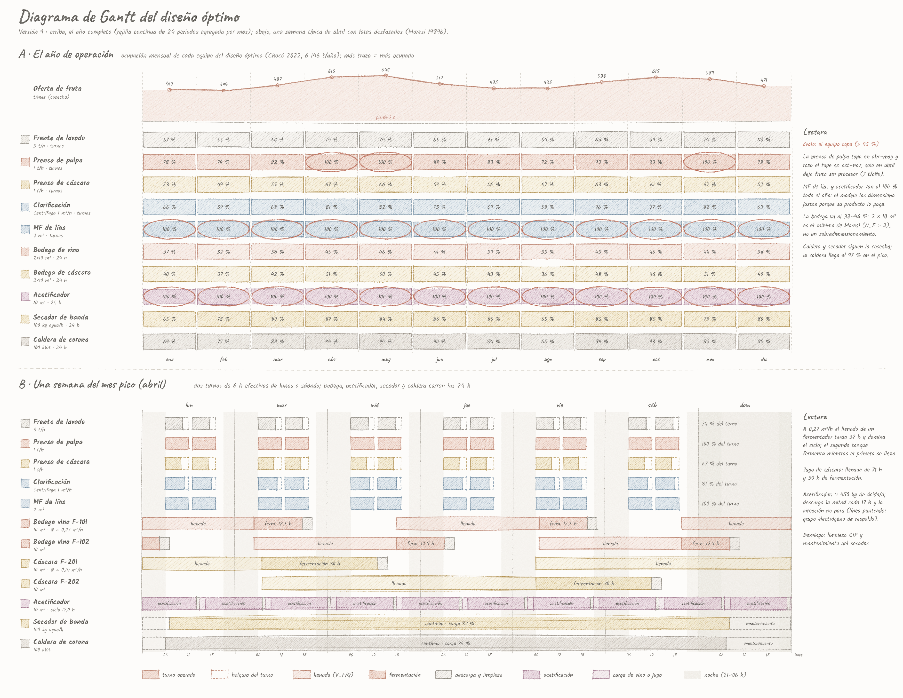<figcaption>Fig. 38. Gantt del diseño óptimo. A: oferta de fruta y ocupación mensual de cada equipo (óvalo: ≥ 95 %). B: semana de abril con dos turnos de 6 h efectivos de lunes a sábado, extractora de hojas, fermentadores de vino y de jugos (cáscara y hojas) desfasados según Moresi (llenado V_F/Q, fermentación, descarga), acetificador semicontinuo (descarga del 50 % cada ≈ 18 h) y secador y caldera de corona continuos con parada dominical.</figcaption></figure>
<div class="prose"><p><b>Bromelaína (Vasiljevic 2020).</b> El capítulo confirma la ruta de membranas para bromelaína cruda y propone ultrafiltración en dos etapas con membranas cerámicas (75 kDa y 10 kDa, a pH 7 y hasta 40 °C), que en Nor et al. (2016) recuperó el 96,8 % de la enzima y subió la pureza 2,5 veces. También reporta que la corona tiene la mayor actividad proteolítica de los residuos (Ketnawa et al. 2012). No se agregaron al MILP porque faltan dos datos: el precio de la bromelaína según su pureza y la actividad por kilogramo de corona de la variedad del Chocó. Con esos dos datos, la segunda etapa de UF y la corona como fuente de bromelaína (compitiendo con la caldera) entran como opciones de la superestructura.</p></div>
<h3>Versión 8: caldera de corona</h3>
<div class="prose"><p>El balance de energía mostró que la corona, que el óptimo de la versión 7 mandaba a compost, podía cubrir casi todo el calor del secado. Se agregó a la superestructura una caldera de biomasa con corona (100–500 kWt, con picadora y secador de corona) que reemplaza GLP. El óptimo elige una caldera de 100 kWt, quema 868 t/año de corona y entrega 2 360 GJ/año de calor. Frente al mismo modelo sin caldera, el margen sube de 4 450 a 4 652 MM COP/año con 770 MM COP más de equipos. El MILP terminó por tiempo con una brecha de 33,7 %: con la caldera, la relajación lineal se debilita y SCIP no alcanza a cerrar la cota. Para que parta de una solución buena, cada corrida se inicia con la solución de la versión anterior, que es factible; la solución reportada es al menos tan buena como esa. Después, cada caso se pulió evaluando con tamaños fijos los diseños vecinos (cada tamaño de caldera y los de los casos hermanos; <code>pulido_v8.py</code> y, en la versión 9, <code>pulido_v9.py</code>), lo que corrigió soluciones inconsistentes, como un caso libre peor que uno restringido. La optimalidad no está demostrada: las brechas que se reportan se miden contra la cota de la corrida libre.</p></div>

<h3>Versión 9: Seguí y Fito (2018) y Campos et al. (2020)</h3>
<div class="prose">
<p><b>Qué aportan las dos fuentes.</b> Seguí y Fito (2018, <i>J. Clean. Prod.</i> 172:1224) separan de la cáscara y el corazón industriales un licor por prensado, sacan la enzima por centrífuga, microfiltración y ultrafiltración de 10 kDa, y fermentan el permeado; también miden la fermentación directa, la secuencial y la simultánea con celulasas. Campos et al. (2020, <i>Foods</i> 9:60) procesan por separado cáscara y tallo de una planta portuguesa: extractora, precipitación de la bromelaína con un polisacárido natural, jugo y torta. Las dos fuentes cambian datos que la v8 suponía y abren dos opciones nuevas.</p>
</div>
<div class="tbl"><table><thead><tr><th>Parámetro</th><th>v8</th><th>v9</th><th>Fuente</th></tr></thead><tbody><tr><td>Jugo / cáscara</td><td>0,50 [S]</td><td>0,578</td><td>Campos et al. (2020): extractora industrial, 57,8 % de jugo y 42,2 % de torta</td></tr><tr><td>Materia seca de la cáscara fresca</td><td>14 %</td><td>17,65 %</td><td>Campos (2020), tabla 1: humedad 82,35 %</td></tr><tr><td>Materia seca que queda en la torta</td><td>75 % [S]</td><td>41 %</td><td>Campos (2020): torta con 17,03 % de MS; la mayor parte de los sólidos solubles sale con el jugo</td></tr><tr><td>Harina / t de cáscara</td><td>0,117 t</td><td>0,080 t</td><td>consecuencia de las dos filas anteriores</td></tr><tr><td>Agua evaporada / t de torta</td><td>0,77 t</td><td>0,81 t</td><td>torta más húmeda: el secador de 100 kg agua/h procesa 1,24 t/h de torta (antes 1,35)</td></tr><tr><td>Etanol del jugo de cáscara</td><td>0,437 g/g [S]</td><td>0,36 g/g (rango 0,23–0,43)</td><td>Seguí y Fito (2018), tabla 2: fermentación directa con <i>S. bayanus</i>; 0,23 g/g con el licor prensado (tabla 3)</td></tr><tr><td>Ácido acético / t de jugo de cáscara</td><td>55,7 kg</td><td>45,9 kg</td><td>104 g/kg de azúcares × 0,36 × 60/46 × 0,94</td></tr><tr><td>Estabilización del jugo de cáscara</td><td>ninguna</td><td>SO₂, 1 500 COP/t</td><td>Seguí y Fito: sin tratamiento térmico aparecen bacterias acéticas entre 48 y 72 h</td></tr></tbody></table></div>
<div class="tbl"><table><thead><tr><th>Etapa nueva</th><th>Alternativas</th><th>Base técnica</th><th>Supuestos [S]</th></tr></thead><tbody><tr><td>Pretratamiento de la cáscara</td><td>Agua (extractora) · Ca(OH)₂ al 0,1 % antes de prensar</td><td>Seguí y Fito (2018): con cal el licor sube de más del 60 % a 68,4 % de la cáscara (planta piloto neumática, TRL 6)</td><td>Jugo 0,65 t/t (68,4 % con 5 % de dilución) y torta 0,316 t/t; 1 kg de cal/t + mezcla (2 900 COP/t); mezclador y dosificador en el FCI</td></tr><tr><td>Enzima del jugo de cáscara (antes de fermentar)</td><td>No · precipitación con polisacárido + liofilización · UF 10 kDa + liofilización (0,25–1 t/h)</td><td>Campos et al. (2020): fracción enzimática del 0,26 % de la cáscara con 17 % de MS, sin solventes (TRL 5). Seguí y Fito (2018): UF 10 kDa, 340–805 GDU/g frente a 1 400–2 800 de la bromelaína de tallo; el permeado fermenta mejor (30 frente a 23,9 g/L de etanol)</td><td>0,78 kg de enzima seca/t de jugo; precio 300 000 COP/kg × 1,0 (precipitación) o × 0,5 (UF); 1 % o 5 % del azúcar queda con la enzima; +10 % de etanol en el jugo tratado [S]; un operario por turno; liofilizador en el FCI</td></tr></tbody></table></div>
<div class="prose">
<p><b>Qué hacen los datos nuevos con el mismo diseño.</b> Con los tamaños óptimos de la v8 fijos, el margen anual pasa de 3 200 a 2 400 MM COP/año (-800). El rendimiento de jugo y la torta de Campos restan 479: sale más jugo (921 → 1 065 t/año), pero la torta lleva menos sólidos y la harina cae de 222 a 157 t/año. La harina vale 12 000 COP/kg y el jugo que no se acetifica, 150 COP/kg, así que el cambio es una pérdida neta. La fermentación del jugo de cáscara a 0,36 g/g resta otros 319: el acetificador sigue lleno, pero el jugo da menos ácido y hay que desviar más vino (130 m³/año menos de vino vendido). El SO₂ del jugo cuesta 2. (El primer valor, 3 200, difiere de los 3 210 reportados en la v8 porque la capacidad del secador se calcula ahora con el agua que realmente evapora la torta.)</p>
<p><b>Qué hacen las opciones nuevas.</b> El MILP, con las dos opciones disponibles, se queda en 4 652 MM COP/año con agua en la cáscara y sin separar la enzima. Impuestas sobre el óptimo: el prensado con cal da 2 126 (-274), porque la cal saca más jugo a costa de harina, y la harina vale más; la precipitación de 0,5 t/h da 2 156 (-244) con 829 kg/año de bromelaína cruda, y la UF de 0,25 t/h da 881. La enzima por precipitación empieza a pagar con la bromelaína cruda a 609 512 COP/kg, 103 % por encima del precio central; el liofilizador y el operario pesan más que lo que vale la enzima de unas 1 000 t de jugo al año. En el barrido de escala, el MILP separa la enzima a 3× (Precipitación 1 t/h), 3,56× (Precipitación 1 t/h). El prensado con cal no aparece en ninguna escala.</p>
</div>
<div class="tbl"><table><thead><tr><th>Variante del óptimo v9 (Chocó 2022)</th><th>Margen (MM COP/año)</th><th>Diferencia</th><th>FCI equipos (MM COP)</th><th>Harina (t)</th><th>Jugo de cáscara (t)</th><th>Vino vendido (m³)</th><th>Bromelaína (kg)</th></tr></thead><tbody><tr><td>Óptimo v9</td><td class="num">2 400</td><td class="num">0</td><td class="num">14 041</td><td class="num">157</td><td class="num">1 065</td><td class="num">608</td><td class="num">0</td></tr><tr><td>Prensado con cal</td><td class="num">2 126</td><td class="num">-274</td><td class="num">14 267</td><td class="num">120</td><td class="num">1 197</td><td class="num">683</td><td class="num">0</td></tr><tr><td>Enzima por precipitación 0,25 t/h</td><td class="num">2 074</td><td class="num">-326</td><td class="num">15 910</td><td class="num">157</td><td class="num">1 065</td><td class="num">648</td><td class="num">620</td></tr><tr><td>Enzima por precipitación 0,5 t/h</td><td class="num">2 156</td><td class="num">-244</td><td class="num">15 910</td><td class="num">157</td><td class="num">1 065</td><td class="num">662</td><td class="num">829</td></tr><tr><td>Enzima por UF 0,25 t/h</td><td class="num">881</td><td class="num">-1 519</td><td class="num">19 893</td><td class="num">157</td><td class="num">1 065</td><td class="num">628</td><td class="num">620</td></tr><tr><td>Cal + precipitación 0,5 t/h</td><td class="num">1 923</td><td class="num">-477</td><td class="num">16 137</td><td class="num">120</td><td class="num">1 197</td><td class="num">744</td><td class="num">932</td></tr></tbody></table></div>
<h3>Análisis comparativo entre las versiones 8 y 9</h3>
<figure>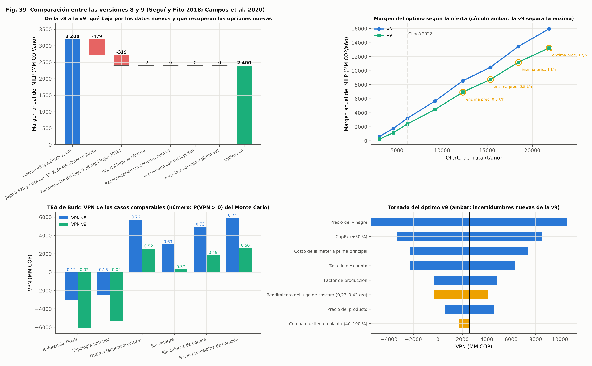<figcaption>Fig. 39. Comparación entre las versiones 8 y 9: cascada del margen del óptimo (efecto de cada dato nuevo y de las opciones nuevas), productos del diseño óptimo, VPN y P(VPN > 0) de los casos comparables y tornado del óptimo v9 con las incertidumbres nuevas en ámbar.</figcaption></figure>
<div class="tbl"><table><thead><tr><th>Caso del MILP</th><th>Margen v8</th><th>Margen v9</th><th>Diferencia</th><th>Cambio</th><th>Tamaños v9</th></tr></thead><tbody><tr><td>Referencia TRL-9</td><td class="num">625</td><td class="num">-88</td><td class="num">-712</td><td class="num">-114 %</td><td>Frente 2 t/h; Prensa 1 t/h; Prensa cáscara 1 t/h; Clarificación MF 20 m²; Estabilización HTST 1000 L/h; Bodega 2×10 m³; Secador 300 kg agua/h; Almacén de mosto 10 m³</td></tr><tr><td>Óptimo con la topología anterior</td><td class="num">900</td><td class="num">219</td><td class="num">-681</td><td class="num">-76 %</td><td>Frente 3 t/h; Prensa 1 t/h; Prensa cáscara 1 t/h; Clarificación MF 20 m²; Estabilización HTST 1000 L/h; Bodega 2×10 m³; Secador 100 kg agua/h; Almacén de mosto 10 m³</td></tr><tr><td>Óptimo con la superestructura ampliada</td><td class="num">3 210</td><td class="num">4 652</td><td class="num">1 442</td><td class="num">45 %</td><td>Frente 3 t/h; Prensa 1 t/h; Prensa cáscara 1 t/h; Clarificación Centrífuga 1 m³/h; MF lías 2 m²; Estabilización SO₂; Bodega 2×10 m³; Secador 100 kg agua/h; Bodega cáscara 2×10 m³; Acetificador 10 m³; Caldera de corona 100 kWt; Almacén de mosto 10 m³; Extractora hojas 2 t/h</td></tr><tr><td>Óptimo sin vinagre</td><td class="num">2 278</td><td class="num">1 567</td><td class="num">-711</td><td class="num">-31 %</td><td>Frente 3 t/h; Prensa 1 t/h; Prensa cáscara 1 t/h; Clarificación Centrífuga 1 m³/h; MF lías 2 m²; Estabilización SO₂; Bodega 2×10 m³; Secador 100 kg agua/h; Caldera de corona 100 kWt; Almacén de mosto 10 m³</td></tr><tr><td>Óptimo sin caldera de corona</td><td class="num">2 990</td><td class="num">4 450</td><td class="num">1 460</td><td class="num">49 %</td><td>Frente 3 t/h; Prensa 1 t/h; Prensa cáscara 1 t/h; Clarificación Centrífuga 1 m³/h; MF lías 2 m²; Estabilización SO₂; Bodega 2×10 m³; Secador 100 kg agua/h; Bodega cáscara 2×10 m³; Acetificador 10 m³; Almacén de mosto 10 m³; Extractora hojas 2 t/h</td></tr><tr><td>Óptimo sin SO₂</td><td class="num">3 127</td><td class="num">4 350</td><td class="num">1 223</td><td class="num">39 %</td><td>Frente 3 t/h; Prensa 1 t/h; Prensa cáscara 1 t/h; Clarificación Centrífuga 1 m³/h; MF lías 2 m²; Estabilización HTST 1000 L/h; Bodega 2×10 m³; Secador 100 kg agua/h; Bodega cáscara 4×10 m³; Acetificador 10 m³; Caldera de corona 100 kWt; Almacén de mosto 10 m³; Extractora hojas 2 t/h</td></tr><tr><td>B: con bromelaína de corazón</td><td class="num">3 697</td><td class="num">4 898</td><td class="num">1 201</td><td class="num">32 %</td><td>Frente 3 t/h; Prensa 2 t/h; Prensa cáscara 1 t/h; Clarificación Centrífuga 1 m³/h; MF lías 5 m²; Estabilización SO₂; Bodega 2×10 m³; Secador 100 kg agua/h; Bodega cáscara 4×10 m³; Acetificador 10 m³; Caldera de corona 100 kWt; Almacén de mosto 10 m³; Extractora hojas 2 t/h</td></tr><tr><td>Estocástico (RP)</td><td class="num">2 965</td><td class="num">4 507</td><td class="num">1 542</td><td class="num">52 %</td><td>Frente 3 t/h; Prensa 1 t/h; Prensa cáscara 1 t/h; Clarificación Centrífuga 1 m³/h; MF lías 2 m²; Estabilización SO₂; Bodega 2×10 m³; Secador 100 kg agua/h; Bodega cáscara 2×10 m³; Acetificador 10 m³; Caldera de corona 100 kWt; Almacén de mosto 10 m³; Extractora hojas 2 t/h</td></tr></tbody></table></div>
<div class="tbl"><table><thead><tr><th>Producto del óptimo (por año)</th><th>v8</th><th>v9</th><th>Cambio</th></tr></thead><tbody><tr><td>Vino vendido (m³)</td><td class="num">638</td><td class="num">608</td><td class="num">-5 %</td></tr><tr><td>Vino a vinagre (m³)</td><td class="num">1 408</td><td class="num">1 439</td><td class="num">2 %</td></tr><tr><td>Jugo de cáscara a vinagre (t)</td><td class="num">921</td><td class="num">1 065</td><td class="num">16 %</td></tr><tr><td>Vinagre al 5 % (m³)</td><td class="num">3 285</td><td class="num">3 285</td><td class="num">0 %</td></tr><tr><td>Harina (t)</td><td class="num">223</td><td class="num">157</td><td class="num">-30 %</td></tr><tr><td>Calor de corona (GJ)</td><td class="num">2 472</td><td class="num">2 360</td><td class="num">-5 %</td></tr><tr><td>Bromelaína de cáscara (kg)</td><td class="num">0</td><td class="num">0</td><td class="num">—</td></tr></tbody></table></div>
<div class="tbl"><table><thead><tr><th>Caso del TEA</th><th>VPN v8 (MM COP)</th><th>VPN v9 (MM COP)</th><th>MIRR v8</th><th>MIRR v9</th><th>P(VPN &gt; 0) v8</th><th>P(VPN &gt; 0) v9</th><th>Equilibrio del vinagre v8 (COP/L)</th><th>Equilibrio del vinagre v9 (COP/L)</th></tr></thead><tbody><tr><td>Referencia TRL-9</td><td class="num">-3 055</td><td class="num">-6 084</td><td class="num">7,0 %</td><td class="num">3,3 %</td><td class="num">12 %</td><td class="num">2 %</td><td class="num">—</td><td class="num">—</td></tr><tr><td>Topología anterior</td><td class="num">-2 449</td><td class="num">-5 314</td><td class="num">7,4 %</td><td class="num">3,5 %</td><td class="num">15 %</td><td class="num">4 %</td><td class="num">—</td><td class="num">—</td></tr><tr><td>Óptimo (superestructura)</td><td class="num">5 733</td><td class="num">2 577</td><td class="num">13,4 %</td><td class="num">11,6 %</td><td class="num">76 %</td><td class="num">52 %</td><td class="num">1 727</td><td class="num">1 987</td></tr><tr><td>Sin vinagre</td><td class="num">3 053</td><td class="num">328</td><td class="num">12,6 %</td><td class="num">10,3 %</td><td class="num">63 %</td><td class="num">37 %</td><td class="num">—</td><td class="num">—</td></tr><tr><td>Sin caldera de corona</td><td class="num">4 966</td><td class="num">1 882</td><td class="num">13,1 %</td><td class="num">11,2 %</td><td class="num">73 %</td><td class="num">49 %</td><td class="num">1 790</td><td class="num">2 045</td></tr><tr><td>B con bromelaína de corazón</td><td class="num">5 925</td><td class="num">2 655</td><td class="num">12,9 %</td><td class="num">11,4 %</td><td class="num">74 %</td><td class="num">50 %</td><td class="num">1 711</td><td class="num">1 981</td></tr></tbody></table></div>
<div class="tbl"><table><thead><tr><th>Oferta</th><th>Margen v8 (MM COP/año)</th><th>Margen v9 (MM COP/año)</th><th>Tamaños v9</th></tr></thead><tbody><tr><td>0,5×</td><td class="num">625</td><td class="num">3 189</td><td>Frente 1 t/h; Prensa 1 t/h; Prensa cáscara no; Clarificación Flotación 0.5 m³/h; MF lías 2 m²; Estabilización SO₂; Bodega 2×10 m³; Secador 50 kg agua/h; Bodega cáscara 2×10 m³; Acetificador 10 m³; Almacén de mosto 10 m³; Extractora hojas 2 t/h</td></tr><tr><td>0,75×</td><td class="num">1 770</td><td class="num">3 744</td><td>Frente 3 t/h; Prensa 1 t/h; Prensa cáscara 1 t/h; Clarificación Centrífuga 1 m³/h; Estabilización SO₂; Bodega 2×10 m³; Secador 100 kg agua/h; Bodega cáscara 2×10 m³; Acetificador 10 m³; Caldera de corona 100 kWt; Almacén de mosto 10 m³; Extractora hojas 2 t/h</td></tr><tr><td>1×</td><td class="num">3 210</td><td class="num">4 652</td><td>Frente 3 t/h; Prensa 1 t/h; Prensa cáscara 1 t/h; Clarificación Centrífuga 1 m³/h; MF lías 2 m²; Estabilización SO₂; Bodega 2×10 m³; Secador 100 kg agua/h; Bodega cáscara 2×10 m³; Acetificador 10 m³; Caldera de corona 100 kWt; Almacén de mosto 10 m³; Extractora hojas 2 t/h</td></tr><tr><td>1,5×</td><td class="num">5 674</td><td class="num">5 850</td><td>Frente 5 t/h; Prensa 2 t/h; Prensa cáscara 1 t/h; Clarificación Centrífuga 2 m³/h; MF lías 5 m²; Estabilización SO₂; Bodega 2×10 m³; Secador 200 kg agua/h; Bodega cáscara 2×10 m³; Acetificador 10 m³; Caldera de corona 100 kWt; Almacén de mosto 10 m³; Extractora hojas 2 t/h</td></tr><tr><td>2×</td><td class="num">8 555</td><td class="num">7 075</td><td>Frente 5 t/h; Prensa 2 t/h; Prensa cáscara 1 t/h; Clarificación Centrífuga 2 m³/h; MF lías 5 m²; Estabilización SO₂; Bodega 2×10 m³; Secador 200 kg agua/h; Bodega cáscara 2×10 m³; Acetificador 10 m³; Caldera de corona 100 kWt; Almacén de mosto 10 m³; Extractora hojas 2 t/h</td></tr><tr><td>2,5×</td><td class="num">10 499</td><td class="num">7 759</td><td>Frente 5 t/h; Prensa 2 t/h; Prensa cáscara 2 t/h; Clarificación Centrífuga 2 m³/h; MF lías 5 m²; Estabilización SO₂; Bodega 2×10 m³; Secador 200 kg agua/h; Bodega cáscara 8×10 m³; Acetificador 10 m³; Caldera de corona 200 kWt; Almacén de mosto 10 m³; Extractora hojas 10 t/h</td></tr><tr><td>3×</td><td class="num">13 442</td><td class="num">9 010</td><td>Frente 5 t/h; Prensa 3 t/h; Prensa cáscara 2 t/h; Clarificación Centrífuga 2 m³/h; MF lías 10 m²; Estabilización SO₂; Bodega 3×10 m³; Secador 300 kg agua/h; Bodega cáscara 3×10 m³; Enzima cáscara Precipitación 1 t/h; Acetificador 20 m³; Caldera de corona 500 kWt; Almacén de mosto 10 m³; Extractora hojas 10 t/h; tercer turno</td></tr><tr><td>3,56×</td><td class="num">15 964</td><td class="num">10 848</td><td>Frente 5 t/h; Prensa 3 t/h; Prensa cáscara 2 t/h; Clarificación Centrífuga 2 m³/h; MF lías 10 m²; Estabilización SO₂; Bodega 3×10 m³; Secador 300 kg agua/h; Bodega cáscara 3×10 m³; Enzima cáscara Precipitación 1 t/h; Acetificador 20 m³; Caldera de corona 500 kWt; Almacén de mosto 10 m³; Extractora hojas 10 t/h; tercer turno</td></tr></tbody></table></div>
<div class="prose"><ul class='tight'><li><b>Los datos nuevos bajan el valor, no cambian el diseño.</b> A la oferta del Chocó, el margen del óptimo baja de 3 210 a 4 652 MM COP/año (45 %) con los mismos equipos: frente de 3 t/h, dos prensas dedicadas, centrífuga, MF de lías, SO₂, bodega de 2 × 10 m³, acetificador de 10 m³ y caldera de corona de 100 kWt. A la escala de la tesis, el margen baja de 15 964 a 10 848 (-32 %). El diseño de la v8 resiste los datos medidos; lo que no resiste es su rentabilidad.</li><li><b>El TEA se vuelve frágil.</b> El VPN del óptimo pasa de 5 733 a 2 577 MM COP, la MIRR de 13,4 % a 11,6 % y P(VPN > 0) de 76 % a 52 %. Sin vinagre, el VPN queda en 328 MM COP (P = 37 %): con la harina reducida, el vinagre es el que sostiene el proyecto, y su precio encabeza el tornado. </li><li><b>La harina es la variable que más pesa y la más débil en datos.</b> Casi dos tercios de la caída vienen de que la torta de Campos lleva el 41 % de la materia seca de la cáscara y no el 75 % que suponía la v8. Con harina a 12 000 COP/kg, cada punto de materia seca en la torta vale más que el jugo que libera. Medir la materia seca de la torta con la variedad y la prensa del Chocó y validar el precio de la harina de fibra son ahora las dos primeras tareas de laboratorio y de mercado.</li><li><b>Fermentación del jugo de cáscara.</b> En el tornado, el rango de 0,23 a 0,43 g/g mueve el VPN entre -286 y 4 118 MM COP. Un ensayo de fermentación con el jugo real (y SO₂) cierra esta incertidumbre con poco costo. La corona que llega a planta (40–100 %) pesa menos: el VPN va de 1 693 a 2 577 MM COP, porque si falta corona el GLP la reemplaza.</li><li><b>Bromelaína: complementaria, pero solo a escala.</b> Separarla del jugo de cáscara por precipitación conviene desde 2× la oferta y suma entre 79 y 173 MM COP/año (entre 1 649 y 2 485 kg/año de enzima cruda). A la oferta actual necesita un precio de 609 512 COP/kg. La UF con liofilización no conviene en ninguna escala: el producto tiene la mitad de la actividad y hay que liofilizar unas 60 veces más agua por tonelada de jugo. La tesis puede presentar la bromelaína como una etapa que se agrega cuando la planta crece, no como una línea aparte.</li><li><b>La cal no conviene mientras la harina valga más que el jugo.</b> El prensado con Ca(OH)₂ saca 18 % más jugo, pero el acetificador ya va lleno y ese jugo extra se vende al hub a 150 COP/kg, mientras la harina que se pierde vale 12 000 COP/kg. Solo se justificaría con un destino de mayor valor para el jugo (por ejemplo, un acetificador más grande con vinagre bien pagado) o con harina mucho más barata.</li></ul></div>

<h3>Versión 10: marco de tres etapas, residuos de planta y evaluación de sostenibilidad</h3>
<div class="prose">
<p><b>De dónde sale.</b> El capítulo de Bertran, Tula y Gani (2022) ordena la síntesis, el diseño y la innovación de biorrefinerías en tres etapas y pide, para llamar sostenible a un diseño, evaluación ambiental y social y verificación con simulador. Heinzle et al. (2006) da el método de evaluación; Chen et al. (2020) y Liao et al. (2022, 2026) traen una materia prima que la tesis no consideraba: las hojas que quedan en el campo cuando se renueva el cultivo. El plan de mejora se aplicó completo; lo que depende de datos de campo del Bajo Atrato quedó con supuestos marcados [S].</p>
<p><b>Registro único de parámetros.</b> Todos los datos de la versión 10 viven en <code>datos/parametros.csv</code>, con valor, rango, distribución, unidad, etiqueta de procedencia y fuente; <code>python datos.py check</code> verifica que las constantes de los módulos anteriores coincidan con el registro (0 diferencias).</p>
</div>
<div class="tbl"><table><thead><tr><th>Grupo</th><th>Parámetros</th><th>[T]</th><th>[C]</th><th>[L]</th><th>[S]</th></tr></thead><tbody><tr><td>acv</td><td class="num">31</td><td class="num">0</td><td class="num">0</td><td class="num">17</td><td class="num">14</td></tr><tr><td>cinetica</td><td class="num">29</td><td class="num">0</td><td class="num">0</td><td class="num">28</td><td class="num">1</td></tr><tr><td>finanzas</td><td class="num">4</td><td class="num">0</td><td class="num">0</td><td class="num">1</td><td class="num">3</td></tr><tr><td>fruta</td><td class="num">13</td><td class="num">1</td><td class="num">0</td><td class="num">12</td><td class="num">0</td></tr><tr><td>hojas</td><td class="num">26</td><td class="num">0</td><td class="num">0</td><td class="num">19</td><td class="num">7</td></tr><tr><td>hub</td><td class="num">11</td><td class="num">0</td><td class="num">0</td><td class="num">7</td><td class="num">4</td></tr><tr><td>precios</td><td class="num">15</td><td class="num">1</td><td class="num">0</td><td class="num">1</td><td class="num">13</td></tr><tr><td>social</td><td class="num">3</td><td class="num">0</td><td class="num">0</td><td class="num">0</td><td class="num">3</td></tr><tr><td>vinagre</td><td class="num">4</td><td class="num">0</td><td class="num">0</td><td class="num">1</td><td class="num">3</td></tr></tbody></table></div>
<div class="tbl"><table><thead><tr><th>Etapa nueva</th><th>Alternativas</th><th>Base técnica</th><th>Supuestos</th></tr></thead><tbody><tr><td>Hojas de la planta (segunda materia prima)</td><td>Extractora de tornillo 2–60 t/h · no acopiar</td><td>Chen et al. (2020): 125 t de hojas frescas por ha y año; jugo 76 % y pulpa 18 % (Liao et al. 2026)</td><td>32 469 t/año acopiables (1 039 ha × 125 t/ha × 25 % [S]); acopio 35 400 COP/t (localización estilizada)</td></tr><tr><td>Jugo de hojas</td><td>Vinagre (con la bodega de cáscara) · etanol + levadura (K. marxianus) · digestión anaerobia · devolver al campo</td><td>Chen et al. (2020): 21,8 kg de etanol y 16 kg de levadura por t de jugo en 12 h; Liao et al. (2026): 17,1 m³ de biogás por t de jugo</td><td>etanol 4 000 COP/L; levadura 2 000 COP/kg; motor a biogás 35 % eléctrico; excedente a 700 COP/kWh [S]</td></tr><tr><td>Pulpa de hojas</td><td>Combustible de la caldera de biomasa · devolver al campo</td><td>Chen et al. (2020): 51,6 % de MS y 19,4 MJ/kg MS</td><td>6 527 MJ útiles por t de pulpa húmeda</td></tr><tr><td>Productos del hub</td><td>Ácido cítrico 5–100 kg/h · goma xantana 2–25 kg/h</td><td>Ejemplos de SuperPro (Petrides): 18 000 t/año de cítrico y 5 000 t/año de xantana</td><td>inversión escalada con exponente 0,6 desde el ejemplo; precios 2 y 9 USD/kg [S]</td></tr><tr><td>Mezcla del vinagre (corrección)</td><td>El acetificador solo diluye</td><td>Vinagre al 5 %: el jugo de cáscara (46 kg/m³) y el de hojas (27 kg/m³) necesitan vino (80 kg/m³) para llegar</td><td>restricción lineal: vino + jugos ≤ ácido / 50</td></tr></tbody></table></div>
<div class="prose"><p><b>Cinética acoplada.</b> El tiempo de proceso de la bodega de jugo de cáscara ya no es un supuesto: sale de la cinética de Krishnan et al. (1999) para glucosa y xilosa, calibrada en tiempo con el dato medido del jugo de pulpa (65,3 g/L de etanol en 12,5 h, Murcia Palacios 2013) y en rendimiento con Seguí y Fito (2018). Para el jugo de hojas se usa el tiempo medido por Chen et al. (2020) con <i>K. marxianus</i>, porque el modelo, de una cepa de <i>S. cerevisiae</i>, fermenta la xilosa mucho más despacio.</p></div>
<div class="tbl"><table><thead><tr><th>Jugo</th><th>Tiempo al 95 % del modelo (h)</th><th>Calibrado (h)</th><th>Tiempo de proceso usado (h)</th><th>Antes</th><th>Rendimiento: modelo → medido</th></tr></thead><tbody><tr><td>Jugo de cáscara</td><td>7,3</td><td>10,1</td><td>12,6</td><td>32,5 (v9, supuesto)</td><td>47 % → 36 %</td></tr><tr><td>Jugo de hojas</td><td>17,7</td><td>24,6</td><td>14,5 (medido)</td><td>12 + 2,5 (Chen 2020)</td><td>45 % → 47 %</td></tr></tbody></table></div>
<figure>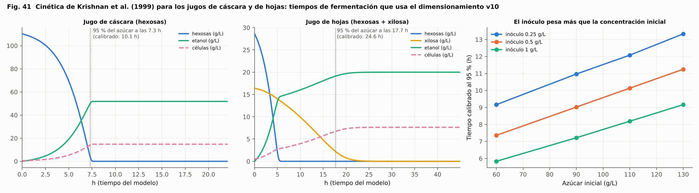<figcaption>Fig. 41. Cinética de Krishnan et al. (1999) para los jugos de cáscara y de hojas y sensibilidad del tiempo de fermentación al azúcar inicial y al inóculo.</figcaption></figure>
<div class="prose"><p><b>Localización estilizada.</b> Un MILP pequeño compara una planta central que recibe hojas frescas con depósitos de extracción en las zonas de cultivo que envían solo el jugo (Bertran et al. 2022, sec. 5.1; Liao et al. 2026). Las cuatro zonas, sus áreas y las distancias son marcadores de posición [S] hasta tener la ubicación de las fincas. Con ellos gana la planta central en el sitio con vía: 35 400 COP por tonelada de hojas puesta en planta, que es el costo de acopio que usa el dimensionamiento. Los depósitos no se pagan: ahorran solo el 24 % del flete (la pulpa se queda en la zona) y cada uno necesita equipo y un operario por turno.</p></div>
<div class="tbl"><table><thead><tr><th>Configuración</th><th>Costo de acopio (COP/t de hojas)</th></tr></thead><tbody><tr><td>Central en A, sin depósitos</td><td class="num">46 950</td></tr><tr><td>Central en B, sin depósitos</td><td class="num">35 400</td></tr><tr><td>A con depósitos en las 4 zonas</td><td class="num">89 290</td></tr><tr><td>B con depósitos en las 4 zonas</td><td class="num">80 512</td></tr></tbody></table></div>
<figure>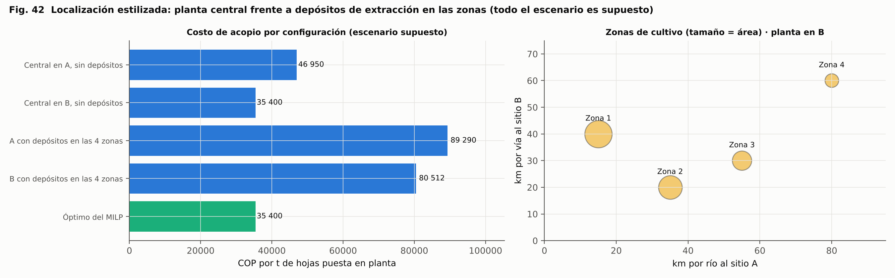<figcaption>Fig. 42. Localización estilizada: costo de acopio por configuración y zonas supuestas.</figcaption></figure>
<div class="prose"><p><b>Qué hace la v10 con el diseño de la v9.</b> Con los equipos de la v9 fijos, el margen pasa de 2 400 a 2 357 MM COP/año al tomar el tiempo de la bodega de jugo de cáscara de la cinética calibrada (12,6 h en lugar de 32,5 h) y los costos del registro. La restricción de mezcla del vinagre no lo cambia (2 357): el diseño de la v9 ya la cumplía. Sin las opciones nuevas, la reoptimización se queda en 2 357.</p><p><b>El óptimo v10.</b> El margen sube a 4 040 MM COP/año (+1 683 sobre la reoptimización sin opciones nuevas) con 3 567 t/año de hojas acopiadas, el 11 % de lo acopiable, en una extractora de 2 t/h que trabaja entre el 41 % y el 65 % de su capacidad. Las 2 711 t/año de jugo de hojas fermentan con el de cáscara en una bodega de 4×10 m³ y pasan a un acetificador de 20 m³ (10 m³ en la v9). Como el jugo de hojas da un vino de solo 27 kg/m³ de ácido potencial y el vinagre debe llegar al 5 %, necesita vino de piña para la mezcla: todo el vino (2 047 m³/año) va al acetificador y ya no se vende vino. El vinagre sube de 3 285 a 5 709 m³/año. La pulpa de hojas vuelve al campo, porque la caldera de corona ya cubre todo el calor.</p><p><b>Lo que limita el acopio es la mezcla, no la oferta de hojas.</b> Con el 10 % o el 50 % del área renovada como fuente, el margen no cambia (3 944 y 3 944); con acopio a 80 000 COP/t baja a 3 785. (Las corridas de sensibilidad no se pulieron con tamaños vecinos y quedan unos 100 MM COP/año por debajo del óptimo pulido; se comparan entre sí.) Cada tonelada de jugo de hojas necesita vino para llegar al 5 %, y el vino es el que limita. Etanol con levadura, digestión anaerobia y los productos del hub no se eligen, ni en el óptimo ni en ninguna escala del barrido: el etanol paga la destilación con calor y la electricidad del grupo diésel; el biogás solo reemplaza diésel hasta la demanda de la planta, porque en la zona no interconectada no hay a quién vender el excedente; y el cítrico y la xantana, escalados desde plantas de 18 000 y 5 000 t/año, tienen una inversión que el volumen de jugo no paga. Quitar el etanol o el digestor deja el margen igual (4 040 y 4 040).</p><p><b>Escala.</b> La extractora crece con la oferta (0,5×: 2 t/h, 0,75×: 2 t/h, 1×: 2 t/h, 1,5×: 5 t/h, 2×: 5 t/h, 2,5×: 10 t/h, 3×: 10 t/h, 3,56×: 10 t/h la oferta actual) y el acetificador llega a 40 m³ desde 2×. El margen de la v10 supera al de la v9 en todas las escalas.</p><p><b>TEA.</b> El VPN del óptimo pasa de 2 577 a 8 195 MM COP, la MIRR de 11,6 % a 13,8 % y P(VPN > 0) de 52 % a 77 %, con 4 780 MM COP más de FCI. El precio de equilibrio del vinagre es 1 811 COP/L, un 18 % por debajo del precio central de 2 200 COP/L. En el tornado, el precio del vinagre mueve el VPN de -5 723 a 22 044 MM COP; el costo de acopio de hojas, solo de 7 571 a 8 341. Son 5,7 millones de litros de vinagre al 5 % por año: antes de tomar este diseño como base, hay que contrastar ese volumen y ese precio con el mercado de vinagre a granel.</p><p><b>Calidad de las soluciones.</b> El MILP de la v10 es más grande (hojas, inventario de hojas, balance eléctrico mensual) y SCIP no cierra la brecha en el tiempo dado: el óptimo económico tiene una brecha nominal de 48 % frente a la cota dual. La solución se mejoró con arranque en caliente y con un pulido que prueba los tamaños vecinos de cada equipo con el diseño fijo; ningún vecino mejora el margen. La brecha refleja sobre todo una cota dual débil, pero no prueba optimalidad.</p></div>
<div class="tbl"><table><thead><tr><th>Sensibilidad de las hojas (E7)</th><th>Margen (MM COP/año)</th><th>Tamaños</th><th>Hojas acopiadas (t)</th><th>Vinagre (m³)</th></tr></thead><tbody><tr><td>fracción de acopio 0,10</td><td class="num">3 944</td><td>Frente 3 t/h; Prensa 1 t/h; Prensa cáscara 1 t/h; Clarificación Centrífuga 1 m³/h; MF lías 2 m²; Estabilización SO₂; Bodega 2×10 m³; Secador 100 kg agua/h; Bodega cáscara 4×10 m³; Acetificador 20 m³; Caldera de corona 100 kWt; Almacén de mosto 10 m³; Extractora hojas 5 t/h</td><td class="num">3 567</td><td class="num">5 709</td></tr><tr><td>fracción de acopio 0,50</td><td class="num">3 944</td><td>Frente 3 t/h; Prensa 1 t/h; Prensa cáscara 1 t/h; Clarificación Centrífuga 1 m³/h; MF lías 2 m²; Estabilización SO₂; Bodega 2×10 m³; Secador 100 kg agua/h; Bodega cáscara 4×10 m³; Acetificador 20 m³; Caldera de corona 100 kWt; Almacén de mosto 10 m³; Extractora hojas 5 t/h</td><td class="num">3 567</td><td class="num">5 709</td></tr><tr><td>costo de acopio 80 000 COP/t</td><td class="num">3 785</td><td>Frente 3 t/h; Prensa 1 t/h; Prensa cáscara 1 t/h; Clarificación Centrífuga 1 m³/h; MF lías 2 m²; Estabilización SO₂; Bodega 2×10 m³; Secador 100 kg agua/h; Bodega cáscara 4×10 m³; Acetificador 20 m³; Caldera de corona 100 kWt; Almacén de mosto 10 m³; Extractora hojas 5 t/h</td><td class="num">3 567</td><td class="num">5 709</td></tr><tr><td>etanol a 3 000 COP/L</td><td class="num">3 944</td><td>Frente 3 t/h; Prensa 1 t/h; Prensa cáscara 1 t/h; Clarificación Centrífuga 1 m³/h; MF lías 2 m²; Estabilización SO₂; Bodega 2×10 m³; Secador 100 kg agua/h; Bodega cáscara 4×10 m³; Acetificador 20 m³; Caldera de corona 100 kWt; Almacén de mosto 10 m³; Extractora hojas 5 t/h</td><td class="num">3 567</td><td class="num">5 709</td></tr></tbody></table></div>
<h3>Evaluación ambiental: ciclo de vida de la cuna a la puerta</h3>
<div class="prose"><p>Unidad funcional: un año de operación (y 1 t de fruta procesada). Inventario desde el balance del dimensionamiento con los mismos coeficientes del MILP; GWP100 de IPCC AR6; electricidad del grupo diésel de la zona no interconectada; caldera de biomasa con CH₄ y N₂O de IPCC 2006; compostaje de las fracciones sin uso. Línea base sin planta: la fruta de rechazo se descompone en campo y las hojas acopiadas se queman (Liao et al. 2026) o se descomponen. La expansión del sistema (etanol por gasolina, excedente eléctrico por diésel) se reporta aparte.</p></div>
<div class="tbl"><table><thead><tr><th>Caso</th><th>GWP de proceso (t CO2e/año)</th><th>kg CO2e por t de fruta</th><th>Neto frente a descomposición (t)</th><th>Neto frente a quema de hojas (t)</th><th>Neto con expansión del sistema (t)</th><th>Energía fósil (TJ/año)</th><th>Agua (m³/año)</th></tr></thead><tbody><tr><td>Referencia TRL-9</td><td class="num">747</td><td class="num">126</td><td class="num">-378</td><td class="num">-378</td><td class="num">-378</td><td class="num">6,0</td><td class="num">13 630</td></tr><tr><td>Diseño v9</td><td class="num">518</td><td class="num">84</td><td class="num">-648</td><td class="num">-648</td><td class="num">-648</td><td class="num">4,0</td><td class="num">14 120</td></tr><tr><td>Óptimo sin opciones v10</td><td class="num">518</td><td class="num">84</td><td class="num">-648</td><td class="num">-648</td><td class="num">-648</td><td class="num">4,0</td><td class="num">14 120</td></tr><tr><td>Óptimo sin caldera</td><td class="num">1 131</td><td class="num">184</td><td class="num">-713</td><td class="num">-75</td><td class="num">-713</td><td class="num">9,9</td><td class="num">14 120</td></tr><tr><td>Óptimo sin vinagre</td><td class="num">335</td><td class="num">55</td><td class="num">-831</td><td class="num">-831</td><td class="num">-831</td><td class="num">1,9</td><td class="num">14 120</td></tr><tr><td>Óptimo v10</td><td class="num">804</td><td class="num">131</td><td class="num">-1 039</td><td class="num">-401</td><td class="num">-1 039</td><td class="num">7,2</td><td class="num">14 120</td></tr></tbody></table></div>
<figure>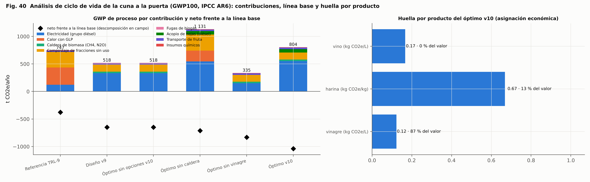<figcaption>Fig. 40. GWP de proceso por contribución, neto frente a la línea base y huella por producto del óptimo v10 (asignación económica).</figcaption></figure>
<div class="prose"><p><b>Lectura.</b> El GWP de proceso del óptimo v10 es de 804 t CO2e/año (131 kg por t de fruta), frente a 518 t del diseño v9. La diferencia es casi toda electricidad diésel: el acetificador de 20 m³ y sus chillers suben la demanda de 341 a 569 MWh/año, y el acopio suma el transporte de las hojas. Sin vinagre el GWP baja a 335 t; sin caldera de corona sube a 1 131 t por el GLP. Frente a la línea base sin planta, en la que la fruta de rechazo y las hojas se descomponen en el campo, el óptimo v10 evita 1 039 t CO2e/año netas (la v9, 648); si las hojas se quemaran en campo, el ahorro neto sería de 401 t y se evitarían 4 529 kg/año de material particulado. La electricidad es el objetivo de mejora ambiental más claro: en el Bajo Atrato cada kWh sale de diésel a 0,97 kg CO2e. Los factores de emisión son genéricos (IPCC, ecoinvent como referencia) y el inventario no incluye la construcción de la planta.</p></div>
<h3>Indicadores sociales</h3>
<div class="tbl"><table><thead><tr><th>Caso</th><th>Empleos en planta</th><th>Empleos en acopio</th><th>Empleos por 1 000 t de fruta</th><th>Pago por fruta (MM COP/año)</th><th>Pago por acopio de hojas</th><th>Nómina local</th><th>Valor que queda en el territorio</th></tr></thead><tbody><tr><td>Referencia TRL-9</td><td class="num">11</td><td class="num">0</td><td class="num">1,9</td><td class="num">2 370</td><td class="num">0</td><td class="num">615</td><td class="num">3 070</td></tr><tr><td>Diseño v9</td><td class="num">13</td><td class="num">0</td><td class="num">2,1</td><td class="num">2 456</td><td class="num">0</td><td class="num">719</td><td class="num">3 273</td></tr><tr><td>Óptimo sin opciones v10</td><td class="num">13</td><td class="num">0</td><td class="num">2,1</td><td class="num">2 456</td><td class="num">0</td><td class="num">719</td><td class="num">3 273</td></tr><tr><td>Óptimo sin vinagre</td><td class="num">13</td><td class="num">0</td><td class="num">2,1</td><td class="num">2 456</td><td class="num">0</td><td class="num">719</td><td class="num">3 244</td></tr><tr><td>Óptimo v10</td><td class="num">13</td><td class="num">2</td><td class="num">2,4</td><td class="num">2 456</td><td class="num">126</td><td class="num">719</td><td class="num">3 430</td></tr></tbody></table></div>
<div class="prose"><p><b>Lectura.</b> El óptimo v10 emplea 13 personas en planta y unas 2 en el acopio de hojas. El valor que queda en el territorio sube de 3 273 a 3 430 MM COP/año (559 mil COP por t de fruta): 126 MM COP por el servicio de acopio de hojas y más compras locales. El pago por la fruta de rechazo (2 456 MM COP/año) es el 72 % de ese valor: el precio que la planta paga a los productores es la palanca social más grande, y también la segunda variable del tornado. Las fracciones de nómina y compras locales y las toneladas de hojas por empleo son supuestos [S] que hay que contrastar con la estructura productiva de la zona.</p></div>
<h3>Frente de Pareto margen–GWP</h3>
<figure>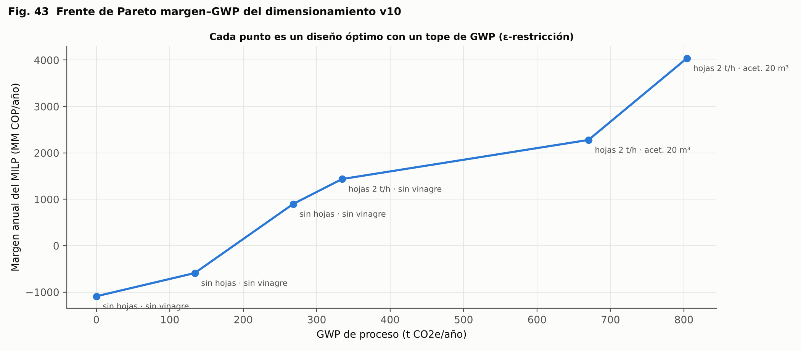<figcaption>Fig. 43. Frente de Pareto margen–GWP por ε-restricción sobre el MILP de dimensionamiento.</figcaption></figure>
<div class="tbl"><table><thead><tr><th>GWP de proceso (t CO2e/año)</th><th>Margen (MM COP/año)</th><th>Diseño</th></tr></thead><tbody><tr><td class="num">0</td><td class="num">-1 090</td><td>Frente 1 t/h; Prensa no; Prensa cáscara no; Clarificación Flotación 0.5 m³/h; Estabilización SO₂; Bodega 2×10 m³; Secador 50 kg agua/h; Almacén de mosto 10 m³</td></tr><tr><td class="num">134</td><td class="num">-590</td><td>Frente 3 t/h; Prensa 1 t/h; Prensa cáscara 1 t/h; Clarificación Centrífuga 1 m³/h; MF lías 2 m²; Estabilización SO₂; Bodega 2×10 m³; Secador 100 kg agua/h; Caldera de corona 100 kWt; Almacén de mosto 10 m³</td></tr><tr><td class="num">268</td><td class="num">899</td><td>Frente 3 t/h; Prensa 1 t/h; Prensa cáscara 1 t/h; Clarificación Centrífuga 1 m³/h; MF lías 2 m²; Estabilización SO₂; Bodega 2×10 m³; Secador 100 kg agua/h; Caldera de corona 100 kWt; Almacén de mosto 10 m³</td></tr><tr><td class="num">335</td><td class="num">1 436</td><td>Frente 3 t/h; Prensa 1 t/h; Prensa cáscara 1 t/h; Clarificación Centrífuga 1 m³/h; MF lías 2 m²; Estabilización SO₂; Bodega 2×10 m³; Secador 100 kg agua/h; Caldera de corona 100 kWt; Almacén de mosto 10 m³; Extractora hojas 2 t/h</td></tr><tr><td class="num">670</td><td class="num">2 279</td><td>Frente 3 t/h; Prensa 1 t/h; Prensa cáscara 1 t/h; Clarificación Centrífuga 1 m³/h; MF lías 2 m²; Estabilización SO₂; Bodega 2×10 m³; Secador 100 kg agua/h; Bodega cáscara 4×10 m³; Acetificador 20 m³; Caldera de corona 100 kWt; Almacén de mosto 10 m³; Extractora hojas 2 t/h</td></tr><tr><td class="num">804</td><td class="num">4 040</td><td>Frente 3 t/h; Prensa 1 t/h; Prensa cáscara 1 t/h; Clarificación Centrífuga 1 m³/h; MF lías 2 m²; Estabilización SO₂; Bodega 2×10 m³; Secador 100 kg agua/h; Bodega cáscara 4×10 m³; Acetificador 20 m³; Caldera de corona 100 kWt; Almacén de mosto 10 m³; Extractora hojas 2 t/h</td></tr></tbody></table></div>
<div class="prose"><p><b>Lectura.</b> En el extremo económico, el diseño da 4 040 MM COP/año con 804 t CO2e/año de GWP de proceso. Con un tope de 670 t, el mejor diseño da 2 279 MM COP/año (con extractora de hojas, acetificador de 20 m³). Con un tope de 402 t, el mejor diseño da 1 436 MM COP/año (con extractora de hojas, sin vinagre). Con un tope de 268 t, el mejor diseño da 899 MM COP/año (sin extractora de hojas, sin vinagre). Con un tope de 134 t, el mejor diseño da -590 MM COP/año (sin extractora de hojas, sin vinagre). El extremo ambiental (0 t, -1 090 MM COP/año) es casi no procesar: el GWP de proceso solo mide lo que la planta emite y no lo que evita frente a dejar la fruta y las hojas en el campo. El frente muestra que, con electricidad diésel, cada tonelada de CO2e de proceso que se recorta cuesta margen, sobre todo al quitar el vinagre; la versión siguiente debería optimizar el GWP neto frente a la línea base, que premia procesar. Los puntos intermedios salen de corridas con límite de tiempo y pulido local: el frente es una aproximación.</p></div>
<h3>Etapa 3: puntos calientes y objetivos de mejora</h3>
<div class="tbl"><table><thead><tr><th>Sección</th><th>Cargo de capital</th><th>Electricidad</th><th>Calor</th><th>GWP</th><th>Ingresos</th><th>Punto caliente en</th></tr></thead><tbody><tr><td>Frente y pulpa</td><td>10 %</td><td>11 %</td><td>5 %</td><td>10 %</td><td>0 %</td><td>electricidad</td></tr><tr><td>Mosto y bodega de vino</td><td>16 %</td><td>8 %</td><td>0 %</td><td>7 %</td><td>0 %</td><td>capital</td></tr><tr><td>Cáscara y harina</td><td>12 %</td><td>6 %</td><td>95 %</td><td>5 %</td><td>13 %</td><td>calor</td></tr><tr><td>Vinagre</td><td>55 %</td><td>62 %</td><td>0 %</td><td>53 %</td><td>87 %</td><td>—</td></tr><tr><td>Caldera de biomasa</td><td>4 %</td><td>2 %</td><td>0 %</td><td>6 %</td><td>0 %</td><td>—</td></tr><tr><td>Hojas (extracción, etanol, biogás)</td><td>3 %</td><td>11 %</td><td>0 %</td><td>20 %</td><td>0 %</td><td>electricidad, GWP</td></tr></tbody></table></div>
<figure>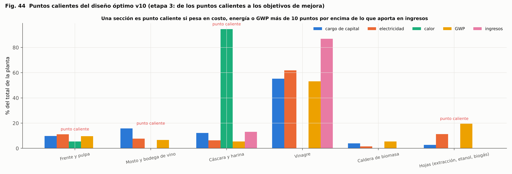<figcaption>Fig. 44. Participación de cada sección en el costo de capital, la energía, el GWP y los ingresos del óptimo v10.</figcaption></figure>
<div class="prose"><p><b>Lectura.</b> El vinagre concentra el 55 % del cargo de capital, el 62 % de la electricidad y el 53 % del GWP, pero también el 87 % de los ingresos, así que la regla no lo marca. La cáscara y la harina se llevan el 95 % del calor con el 13 % de los ingresos; ese calor ya sale de la corona. Las hojas pesan el 20 % del GWP (transporte del acopio y electricidad de la extractora) y no muestran ingresos propios porque su jugo se vende como vinagre. El frente, la pulpa y la bodega de vino tampoco muestran ingresos: en el óptimo v10 todo el vino va al vinagre. La regla trata cada sección como si vendiera su propio producto; para las secciones aguas arriba hay que leerla con el ingreso del producto final. Objetivos de mejora para la etapa 3: (1) electricidad del vinagre (aireación y frío) con solar fotovoltaica o biogás, que bajaría el GWP y el costo; (2) logística del acopio de hojas, con datos reales de fincas y distancias; (3) mercado y precio del vinagre, que sostienen el resultado.</p></div>
<h3>Verificación con SuperPro</h3>
<div class="prose"><p>SuperPro Designer no corre en el entorno de los modelos. <code>superpro_paquete.py</code> deja en <code>superpro/</code> los procedimientos unitarios con su modo, tamaño, ciclo y especificación (<code>procedimientos.csv</code>), las corrientes anuales que el modelo de SuperPro debe reproducir (<code>corrientes.csv</code>), los indicadores a comparar con su tolerancia (<code>verificacion.csv</code>) y las instrucciones de armado (<code>LEEME.md</code>), siguiendo a Foo (2023, caps. 10 y 11). Con los resultados de SuperPro se llena la columna vacía y se corrigen los coeficientes del registro que se salgan de la tolerancia.</p></div>
<h3>Análisis comparativo entre las versiones 9 y 10</h3>
<figure>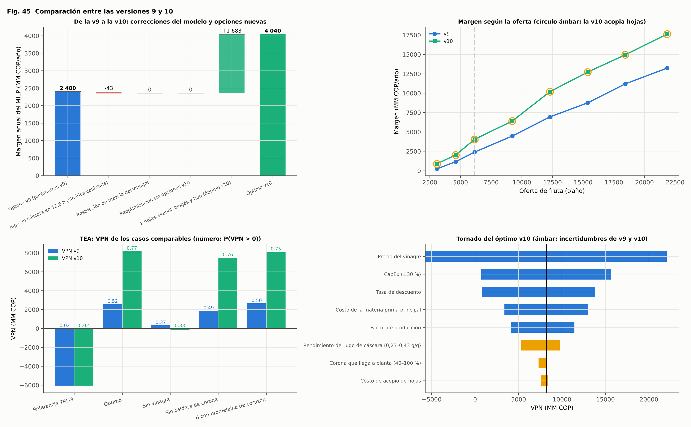<figcaption>Fig. 45. De la v9 a la v10: cascada del margen, margen según la oferta, VPN de los casos comparables y tornado del óptimo v10.</figcaption></figure>
<div class="tbl"><table><thead><tr><th>Producto del óptimo (por año)</th><th>v9</th><th>v10</th></tr></thead><tbody><tr><td>Vino vendido (m³)</td><td class="num">608</td><td class="num">0</td></tr><tr><td>Vino a vinagre (m³)</td><td class="num">1 439</td><td class="num">2 047</td></tr><tr><td>Jugo de cáscara a vinagre (t)</td><td class="num">1 065</td><td class="num">1 065</td></tr><tr><td>Jugo de hojas a vinagre (t)</td><td class="num">0</td><td class="num">2 711</td></tr><tr><td>Vinagre al 5 % (m³)</td><td class="num">3 285</td><td class="num">5 709</td></tr><tr><td>Harina (t)</td><td class="num">157</td><td class="num">157</td></tr><tr><td>Hojas acopiadas (t)</td><td class="num">0</td><td class="num">3 567</td></tr><tr><td>Etanol (L)</td><td class="num">0</td><td class="num">0</td></tr><tr><td>Electricidad de biogás (kWh)</td><td class="num">0</td><td class="num">0</td></tr></tbody></table></div>
<div class="tbl"><table><thead><tr><th>Caso del TEA</th><th>VPN v9 (MM COP)</th><th>VPN v10 (MM COP)</th><th>MIRR v9</th><th>MIRR v10</th><th>P(VPN &gt; 0) v9</th><th>P(VPN &gt; 0) v10</th></tr></thead><tbody><tr><td>Referencia TRL-9</td><td class="num">-6 084</td><td class="num">-6 084</td><td class="num">3,3 %</td><td class="num">3,3 %</td><td class="num">2 %</td><td class="num">2 %</td></tr><tr><td>Óptimo</td><td class="num">2 577</td><td class="num">8 195</td><td class="num">11,6 %</td><td class="num">13,8 %</td><td class="num">52 %</td><td class="num">77 %</td></tr><tr><td>Sin vinagre</td><td class="num">328</td><td class="num">-163</td><td class="num">10,3 %</td><td class="num">9,8 %</td><td class="num">37 %</td><td class="num">33 %</td></tr><tr><td>Sin caldera de corona</td><td class="num">1 882</td><td class="num">7 501</td><td class="num">11,2 %</td><td class="num">13,6 %</td><td class="num">49 %</td><td class="num">76 %</td></tr><tr><td>B con bromelaína de corazón</td><td class="num">2 655</td><td class="num">8 117</td><td class="num">11,4 %</td><td class="num">13,3 %</td><td class="num">50 %</td><td class="num">75 %</td></tr></tbody></table></div>
<div class="prose"><ul class='tight'><li><b>Las correcciones del modelo cambian poco.</b> La cinética calibrada y el registro restan 43 MM COP/año al diseño v9; la restricción de mezcla, nada. La v9 reoptimizada con los datos de la v10 da 2 357.</li><li><b>Las hojas cambian el diseño.</b> Suman 1 683 MM COP/año: extractora de 2 t/h, bodega de jugos de 4×10 m³ y acetificador de 20 m³. La planta deja de vender vino: el vino se usa para llevar el jugo de hojas al 5 %.</li><li><b>Más rentable, con el riesgo más concentrado.</b> VPN de 2 577 a 8 195 MM COP y P(VPN > 0) de 52 % a 77 %. Sin vinagre, el VPN es -163 MM COP (P = 33 %). El vinagre aporta el 87 % de los ingresos; el estudio de mercado del vinagre a granel es ahora la tarea más importante para la tesis.</li><li><b>Ambiental: más emisiones de proceso, más emisiones evitadas.</b> El GWP de proceso sube de 518 a 804 t CO2e/año por la electricidad diésel, pero el ahorro neto frente a dejar fruta y hojas en el campo sube de 648 a 1 039 t.</li><li><b>Social.</b> 2 empleos más en el acopio y 157 MM COP/año más en el territorio.</li><li><b>Lo que la v10 descarta con datos.</b> Etanol de hojas, digestión anaerobia, ácido cítrico y xantana no entran en ninguna escala. Volverían a la mesa con conexión a la red (venta de excedentes), calor más barato para destilar o una escala de hub regional.</li><li><b>Supuestos que más pesan [S].</b> La oferta de hojas (25 % del área renovada, 125 t/ha), el costo de acopio de la localización estilizada (zonas y distancias de marcador), las fracciones locales del indicador social y el precio del vinagre. La verificación en SuperPro (paquete en <code>superpro/</code>) queda pendiente de la corrida con licencia.</li></ul></div>

<h3>Versión 11: panela, demanda de vinagre, xantana con residuo de piña y efluentes</h3>
<div class="prose">
<p><b>De dónde sale.</b> Tres capítulos de <i>Biological Processes in the Food Industry</i> (Elsevier, 2026). Ebrahimi (cap. 12, vinagre) confirma los datos del acetificador Frings que ya usaba el modelo (94 % del rendimiento teórico, vinagre al 12 % en unas 35 h, ciclos semicontinuos de 24 a 48 h) y trae dos cosas nuevas: el azúcar añadido a los jugos antes de fermentar es práctica común en vinagres de fruta (Tanamool et al. 2020 lo hicieron con jugo de cáscara de piña y 100 a 200 g/L de sacarosa), y el efluente del vinagre se trata con electrocoagulación y humedales construidos. Iakovchenko (cap. 13, xantana) reporta 5,0 g/L de xantana con residuo líquido de piña de 60 g/L de azúcar (Rashidi et al. 2024), unas siete veces menos que el rendimiento con glucosa pura que traía el ejemplo de SuperPro. Ahamed y Li (cap. 10, ácidos orgánicos) es cualitativo y sirve de respaldo a la discusión del hub.</p>
<p><b>Qué cambia en el modelo.</b> (1) Panela añadida a los jugos de cáscara y de hojas, hasta 150 g/L, con su costo y su huella. (2) Un tope explícito a las ventas de vinagre: en la v10 la restricción de mezcla limitaba el vinagre sin decirlo; con la panela esa restricción deja de atar y hay que nombrar el límite real, que es el mercado. El tope central, 3 000 m³/año, es un supuesto [S] hasta tener el estudio de mercado; E8 lo barre. (3) El rendimiento de xantana con jugo de piña. (4) El tratamiento del efluente en el TEA y en el ACV.</p>
</div>
<div class="tbl"><table><thead><tr><th>Parámetro nuevo</th><th>Valor</th><th>Rango</th><th>Etiqueta</th><th>Fuente</th></tr></thead><tbody><tr><td>precio_panela_kg</td><td>3500 COP/kg</td><td>2500–5000</td><td>S</td><td>precio mayorista de panela en Colombia</td></tr><tr><td>azucar_fermentable_panela</td><td>0.85 g/g</td><td>0.80–0.90</td><td>S</td><td>sacarosa más azúcares reductores de la panela</td></tr><tr><td>rend_etanol_azucar_anadido</td><td>0.42 g/g</td><td>0.36–0.48</td><td>S</td><td>entre Seguí y Fito (2018: 0.36 en jugo de cáscara) y el 94 % del teórico</td></tr><tr><td>azucar_max_jugo</td><td>0.15 t/m³</td><td>0.10–0.20</td><td>L</td><td>Tanamool et al. (2020), citado por Ebrahimi (2026, tabla 12.1): 100–200 g/L de sacarosa en jugo de cáscara de piña</td></tr><tr><td>demanda_vinagre_m3</td><td>3000 m³/año</td><td>1500–6000</td><td>S</td><td>sin estudio de mercado del vinagre a granel</td></tr><tr><td>ef_panela</td><td>0.6 kg CO2e/kg</td><td>0.3–1.0</td><td>S</td><td>orden de magnitud para panela</td></tr><tr><td>y_xantana_pina</td><td>0.083 g/g azúcar</td><td>0.083–0.6</td><td>L</td><td>Rashidi et al. (2024), citado por Iakovchenko (2026, tabla 13.1): 5,0 g/L de xantana con residuo líquido de piña de 60 g/L de azúcar; máximo = glucosa pura (SuperPro)</td></tr><tr><td>frac_efluente</td><td>0.9 fracción del agua de planta</td><td>—</td><td>S</td><td></td></tr><tr><td>dqo_efluente_kg_m3</td><td>3.0 kg DQO/m³</td><td>1.5–6.0</td><td>S</td><td>efluente de lavado y de la línea de vinagre sin medición</td></tr><tr><td>remocion_dqo_ec</td><td>0.90 fracción</td><td>—</td><td>L</td><td>Yılmaz et al. (2018), citado por Ebrahimi (2026): electrocoagulación con electrodos de aluminio</td></tr><tr><td>remocion_dqo_humedal</td><td>0.70 fracción</td><td>0.60–0.85</td><td>L</td><td>Justin et al. (2009), citado por Ebrahimi (2026): humedal construido híbrido</td></tr><tr><td>kwh_ec_kg_dqo</td><td>1.5 kWh/kg DQO removida</td><td>—</td><td>S</td><td></td></tr><tr><td>bo_ch4_dqo</td><td>0.25 kg CH4/kg DQO</td><td>—</td><td>L</td><td>IPCC (2006), vol. 5, cap. 6</td></tr><tr><td>mcf_humedal</td><td>0.1 fracción</td><td>—</td><td>L</td><td>IPCC (2014), suplemento de humedales: flujo subsuperficial horizontal</td></tr><tr><td>costo_ptar_m3</td><td>2500 COP/m³</td><td>1500–4000</td><td>S</td><td>electrocoagulación y humedal construido</td></tr></tbody></table></div>
<div class="prose"><p><b>Con el diseño de la v10 fijo.</b> El margen, 4 040 MM COP/año, no cambia con el rendimiento de xantana con residuo de piña (la xantana no se elegía); baja a 1 991 con el tope de 3 000 m³/año de vinagre (5 709 → 3 000 m³), y a 3 694 con la panela, que deja vender 2 047 m³/año de vino (antes 1 164) con 107 t/año de panela.</p><p><b>El óptimo v11.</b> 4 652 MM COP/año (v10: 4 040) con acetificador de 10 m³, bodega de jugos de 2×10 m³ y extractora de hojas de 2 t/h. Vende 2 047 m³/año de vino y 3 000 m³/año de vinagre hecho con 1 065 t de jugo de cáscara, 2 036 t de jugo de hojas y 107 t de panela; acopia 2 678 t de hojas. Sin panela, con el mismo tope, el margen es 2 837; sin tope de demanda, 17 502. El óptimo v11 supera al v10 aunque vende la mitad del vinagre: el vino vuelve a venderse a 3 000 COP/L, la panela reemplaza al vino en la mezcla a un costo mucho menor, y el acetificador y la bodega de jugos se achican. La comparación justa no es con los 4 040 de la v10, que suponían vender 5,7 millones de litros, sino con los 1 991 que daría el diseño v10 con el mismo tope de demanda.</p><p><b>La demanda de vinagre decide el diseño.</b> En el barrido E8 el vino se vende en todos los niveles; lo que crece con la demanda es el vinagre hecho con jugos y panela: el acetificador pasa de 6 a 40 m³, la extractora de 2 a 5 t/h y las hojas acopiadas de unas 700 a más de 13 000 t/año. El margen crece casi en proporción a la demanda. Sin tope, el modelo llega a 13 140 m³/año, limitado por los jugos y la panela que admite cada m³ de jugo; ese caso no es un diseño, es la señal de que el vinagre a 2 200 COP/L con panela es tan rentable que solo el mercado lo frena. Con 6 000 m³/año sin panela el margen es 4 259, y con la panela a 5 000 COP/kg, 4 492. Mientras no haya un estudio de mercado, la tesis debe presentar el diseño como una familia de diseños indexada por la demanda de vinagre, no como un único óptimo.</p><p><b>TEA.</b> VPN del óptimo 8 195 → 10 500 MM COP; MIRR 13,8 % → 15,1 %; P(VPN > 0) 77 % → 90 %. El TEA v11 incluye además el tratamiento del efluente (2 500 COP/m³ [S]). El precio de equilibrio del vinagre es 1 250 COP/L. En el tornado, el precio del vinagre mueve el VPN entre 3 205 y 17 775 MM COP, y el de la panela solo entre 9 874 y 10 918. En el programa estocástico (oferta 0,7, 1,0 y 1,3 veces) el EVPI es 0 MM COP/año: con la demanda de vinagre como límite, el mismo diseño es el mejor en los tres escenarios de oferta. </p><p><b>ACV.</b> GWP de proceso 721 t CO2e/año (v10: 804); la panela aporta 64 t y el tratamiento del efluente 52 t. El efluente (12 708 m³/año, 38 t de DQO [S]) sale con 1 t/año de DQO tras la electrocoagulación y el humedal. Neto frente a dejar fruta y hojas en el campo: 953 t CO2e/año evitadas.</p><p><b>Frente margen–GWP.</b> 669 t CO2e/año → 4 652 MM COP/año (acetificador 10 m³); 558 t CO2e/año → 3 268 MM COP/año (acetificador 10 m³); 446 t CO2e/año → 1 597 MM COP/año (acetificador 10 m³); 335 t CO2e/año → 1 405 MM COP/año (sin vinagre); 223 t CO2e/año → 400 MM COP/año (sin vinagre); 112 t CO2e/año → -839 MM COP/año (sin vinagre). El extremo de mínimo GWP sigue siendo casi no procesar; el frente confirma que el vinagre, por su electricidad diésel, es lo que más pesa en el GWP de proceso.</p><p><b>Social.</b> 13 empleos en planta y 1 en el acopio; valor que queda en el territorio 3 487 MM COP/año (v10: 3 430). La panela es una compra local: el registro supone que el 30 % de los insumos distintos de la fruta se compra en la región [S].</p></div>
<div class="tbl"><table><thead><tr><th>Demanda de vinagre (E8)</th><th>Margen (MM COP/año)</th><th>Vinagre (m³)</th><th>Vino vendido (m³)</th><th>Panela (t)</th><th>Hojas (t)</th><th>Acetificador</th><th>Extractora</th></tr></thead><tbody><tr><td>1 500</td><td class="num">2 621</td><td class="num">1 500</td><td class="num">2 047</td><td class="num">29</td><td class="num">665</td><td>6 m³</td><td>2 t/h</td></tr><tr><td>3 000 (central)</td><td class="num">4 652</td><td class="num">3 000</td><td class="num">2 047</td><td class="num">107</td><td class="num">2 678</td><td>10 m³</td><td>2 t/h</td></tr><tr><td>6 000</td><td class="num">8 631</td><td class="num">6 000</td><td class="num">2 047</td><td class="num">283</td><td class="num">6 271</td><td>20 m³</td><td>2 t/h</td></tr><tr><td>12 000</td><td class="num">15 961</td><td class="num">12 000</td><td class="num">2 047</td><td class="num">619</td><td class="num">13 803</td><td>40 m³</td><td>5 t/h</td></tr><tr><td>sin tope</td><td class="num">17 502</td><td class="num">13 140</td><td class="num">2 047</td><td class="num">650</td><td class="num">15 923</td><td>40 m³</td><td>5 t/h</td></tr></tbody></table></div>
<figure>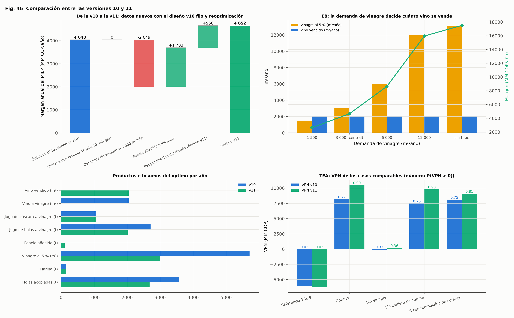<figcaption>Fig. 46. De la v10 a la v11: cascada del margen con el diseño v10 fijo y reoptimización, barrido de la demanda de vinagre (E8), productos del óptimo y VPN de los casos comparables.</figcaption></figure>
<div class="tbl"><table><thead><tr><th>Producto o insumo del óptimo (por año)</th><th>v10</th><th>v11</th></tr></thead><tbody><tr><td>Vino vendido (m³)</td><td class="num">0</td><td class="num">2 047</td></tr><tr><td>Vino a vinagre (m³)</td><td class="num">2 047</td><td class="num">0</td></tr><tr><td>Jugo de cáscara a vinagre (t)</td><td class="num">1 065</td><td class="num">1 065</td></tr><tr><td>Jugo de hojas a vinagre (t)</td><td class="num">2 711</td><td class="num">2 036</td></tr><tr><td>Panela añadida (t)</td><td class="num">0</td><td class="num">107</td></tr><tr><td>Vinagre al 5 % (m³)</td><td class="num">5 709</td><td class="num">3 000</td></tr><tr><td>Harina (t)</td><td class="num">157</td><td class="num">157</td></tr><tr><td>Hojas acopiadas (t)</td><td class="num">3 567</td><td class="num">2 678</td></tr></tbody></table></div>
<div class="tbl"><table><thead><tr><th>Caso del TEA</th><th>VPN v10 (MM COP)</th><th>VPN v11 (MM COP)</th><th>MIRR v10</th><th>MIRR v11</th><th>P(VPN &gt; 0) v10</th><th>P(VPN &gt; 0) v11</th></tr></thead><tbody><tr><td>Referencia TRL-9</td><td class="num">-6 084</td><td class="num">-6 260</td><td class="num">3,3 %</td><td class="num">3,0 %</td><td class="num">2 %</td><td class="num">2 %</td></tr><tr><td>Óptimo</td><td class="num">8 195</td><td class="num">10 500</td><td class="num">13,8 %</td><td class="num">15,1 %</td><td class="num">77 %</td><td class="num">90 %</td></tr><tr><td>Sin vinagre</td><td class="num">-163</td><td class="num">203</td><td class="num">9,8 %</td><td class="num">10,2 %</td><td class="num">33 %</td><td class="num">36 %</td></tr><tr><td>Sin caldera de corona</td><td class="num">7 501</td><td class="num">9 807</td><td class="num">13,6 %</td><td class="num">14,9 %</td><td class="num">76 %</td><td class="num">90 %</td></tr><tr><td>B con bromelaína de corazón</td><td class="num">8 117</td><td class="num">9 102</td><td class="num">13,3 %</td><td class="num">13,7 %</td><td class="num">75 %</td><td class="num">81 %</td></tr></tbody></table></div>
<div class="prose"><ul class='tight'><li><b>El límite real del vinagre es el mercado.</b> La v10 vendía 5,7 millones de litros al año porque la mezcla ataba el volumen al vino; la panela suelta esa atadura y deja ver que hace falta un dato de demanda. El estudio de mercado del vinagre a granel es la tarea más importante para la tesis.</li><li><b>La panela devuelve el vino al mercado.</b> En todos los niveles de demanda el vinagre sale de los jugos de cáscara y de hojas con panela, y el vino se vende. La panela cuesta unos 8 COP por gramo de ácido; el vino desviado costaba su precio de venta.</li><li><b>La xantana queda descartada con más razón.</b> Con el rendimiento medido en residuo de piña (0,083 g/g), su ingreso por tonelada de jugo es siete veces menor que el supuesto anterior.</li><li><b>El efluente entra al balance.</b> El tratamiento con electrocoagulación y humedal suma un costo y una huella pequeños; la DQO del efluente es un supuesto [S] que hay que medir.</li><li><b>Lo que la v11 no hizo.</b> La acetificación termotolerante (menos frío) y el vinagre de doble fuerza (menos flete por el río) quedan como alternativas de la etapa 3 para la versión siguiente.</li></ul></div>
<h3>Regla de dimensionamiento según la oferta</h3>
<div class="prose"><p>Se resolvió el mismo modelo desde la mitad de la oferta actual hasta la base de la tesis (21 856 t/año), con libertad total de tamaños, almacén y turnos:</p></div>
<div class="tbl"><table><thead><tr><th>Oferta (t/año)</th><th>Tamaños óptimos</th><th>FCI (MM COP)</th><th>Margen (MM COP/año)</th><th>FCI por t/año (miles COP)</th><th>Fruta procesada</th><th>Cuellos (≥ 95 %)</th></tr></thead><tbody><tr><td class="num">3 073</td><td>Frente 1 t/h; Prensa 1 t/h; Prensa cáscara no; Clarificación Flotación 0.5 m³/h; MF lías 2 m²; Estabilización SO₂; Bodega 2×10 m³; Secador 50 kg agua/h; Bodega cáscara 2×10 m³; Acetificador 10 m³; Almacén de mosto 10 m³; Extractora hojas 2 t/h</td><td class="num">11 899</td><td class="num">3 189</td><td class="num">4 016</td><td class="num">96,4 %</td><td>Frente (100 %), MF lías (100 %), Acetificador (100 %), Secador (100 %)</td></tr><tr><td class="num">4 610</td><td>Frente 3 t/h; Prensa 1 t/h; Prensa cáscara 1 t/h; Clarificación Centrífuga 1 m³/h; Estabilización SO₂; Bodega 2×10 m³; Secador 100 kg agua/h; Bodega cáscara 2×10 m³; Acetificador 10 m³; Caldera de corona 100 kWt; Almacén de mosto 10 m³; Extractora hojas 2 t/h</td><td class="num">14 440</td><td class="num">3 744</td><td class="num">3 133</td><td class="num">100,0 %</td><td>Acetificador (100 %)</td></tr><tr><td class="num">6 146</td><td>Frente 3 t/h; Prensa 1 t/h; Prensa cáscara 1 t/h; Clarificación Centrífuga 1 m³/h; MF lías 2 m²; Estabilización SO₂; Bodega 2×10 m³; Secador 100 kg agua/h; Bodega cáscara 2×10 m³; Acetificador 10 m³; Caldera de corona 100 kWt; Almacén de mosto 10 m³; Extractora hojas 2 t/h</td><td class="num">14 757</td><td class="num">4 652</td><td class="num">2 404</td><td class="num">99,9 %</td><td>MF lías (100 %), Acetificador (100 %), Prensa (100 %)</td></tr><tr><td class="num">9 219</td><td>Frente 5 t/h; Prensa 2 t/h; Prensa cáscara 1 t/h; Clarificación Centrífuga 2 m³/h; MF lías 5 m²; Estabilización SO₂; Bodega 2×10 m³; Secador 200 kg agua/h; Bodega cáscara 2×10 m³; Acetificador 10 m³; Caldera de corona 100 kWt; Almacén de mosto 10 m³; Extractora hojas 2 t/h</td><td class="num">17 473</td><td class="num">5 850</td><td class="num">1 895</td><td class="num">100,0 %</td><td>Acetificador (100 %), Caldera de corona (100 %), MF lías (100 %), Prensa cáscara (100 %)</td></tr><tr><td class="num">12 292</td><td>Frente 5 t/h; Prensa 2 t/h; Prensa cáscara 1 t/h; Clarificación Centrífuga 2 m³/h; MF lías 5 m²; Estabilización SO₂; Bodega 2×10 m³; Secador 200 kg agua/h; Bodega cáscara 2×10 m³; Acetificador 10 m³; Caldera de corona 100 kWt; Almacén de mosto 10 m³; Extractora hojas 2 t/h</td><td class="num">17 473</td><td class="num">7 075</td><td class="num">1 423</td><td class="num">99,9 %</td><td>Acetificador (100 %), MF lías (100 %), Caldera de corona (100 %), Prensa cáscara (100 %), Prensa (100 %), Bodega (96 %)</td></tr><tr><td class="num">15 365</td><td>Frente 5 t/h; Prensa 2 t/h; Prensa cáscara 2 t/h; Clarificación Centrífuga 2 m³/h; MF lías 5 m²; Estabilización SO₂; Bodega 2×10 m³; Secador 200 kg agua/h; Bodega cáscara 8×10 m³; Acetificador 10 m³; Caldera de corona 200 kWt; Almacén de mosto 10 m³; Extractora hojas 10 t/h</td><td class="num">21 592</td><td class="num">7 759</td><td class="num">1 547</td><td class="num">90,8 %</td><td>Acetificador (100 %), Prensa (100 %), MF lías (100 %), Bodega (96 %)</td></tr><tr><td class="num">18 438</td><td>Frente 5 t/h; Prensa 3 t/h; Prensa cáscara 2 t/h; Clarificación Centrífuga 2 m³/h; MF lías 10 m²; Estabilización SO₂; Bodega 3×10 m³; Secador 300 kg agua/h; Bodega cáscara 3×10 m³; Enzima cáscara Precipitación 1 t/h; Acetificador 20 m³; Caldera de corona 500 kWt; Almacén de mosto 10 m³; Extractora hojas 10 t/h; tercer turno</td><td class="num">27 944</td><td class="num">9 010</td><td class="num">1 516</td><td class="num">100,0 %</td><td>Frente (100 %), Secador (98 %)</td></tr><tr><td class="num">21 856</td><td>Frente 5 t/h; Prensa 3 t/h; Prensa cáscara 2 t/h; Clarificación Centrífuga 2 m³/h; MF lías 10 m²; Estabilización SO₂; Bodega 3×10 m³; Secador 300 kg agua/h; Bodega cáscara 3×10 m³; Enzima cáscara Precipitación 1 t/h; Acetificador 20 m³; Caldera de corona 500 kWt; Almacén de mosto 10 m³; Extractora hojas 10 t/h; tercer turno</td><td class="num">27 944</td><td class="num">10 848</td><td class="num">1 297</td><td class="num">98,5 %</td><td>Frente (100 %), Secador (100 %)</td></tr></tbody></table></div>
<figure>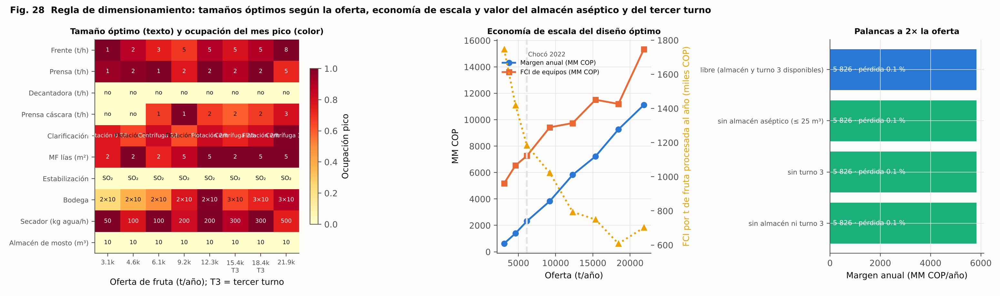<figcaption>Fig. 28. Tamaño óptimo de cada equipo y ocupación del mes pico según la oferta; economía de escala; valor del almacén aséptico y del tercer turno a 2× la oferta actual.</figcaption></figure>
<div class="prose">
<p><b>Lectura.</b></p>
<ul class="tight">
<li><b>Los equipos del frente se dimensionan por el mes pico.</b> Frente, prensas y clarificación trabajan con personal y siguen a la fruta, que es perecedera (3 días de patio). La bodega y el secador operan 24/7 y quedan con el mínimo de unidades que cubre el pico: 2 fermentadores de 10 m³ hasta 2× la oferta actual y 3 desde 2,5×. El secador crece en escalones con la cáscara.</li>
<li><b>Prensas dedicadas desde unas 4 600 t/año (0,75× la oferta).</b> Por debajo de esa oferta conviene una sola prensa compartida (dos prensas cuestan más que los cambios). Por encima, siempre se separan pulpa y cáscara.</li>
<li><b>El tercer turno pierde peso.</b> Con la superestructura ampliada solo se elige a 3× y 3,56× la oferta actual, donde cuesta casi lo mismo que el frente y las prensas del tamaño siguiente; en las demás escalas conviene comprar el equipo.</li>
<li><b>Tecnología del mosto por escala.</b> La microfiltración del mosto no se elige en ninguna escala. La flotación gana a 0,5× y la centrífuga a 0,75×, 1×, 1,5×, 2×, 2,5×, 3×, 3,56× la oferta: cuestan casi lo mismo y la elección depende de cómo encaja cada tamaño de catálogo. El acetificador se elige en todas las escalas, de 10 m³ a 20 m³, con el precio supuesto del vinagre.</li>
<li><b>El almacén aséptico de mosto no se elige en ninguna escala.</b> Nivelaría la bodega guardando el exceso de mosto de los meses pico, unos 50–100 m³ a la escala actual. Un tanque aséptico de ese volumen cuesta más que el fermentador adicional que hace lo mismo, y el cuello estacional está aguas arriba, donde la fruta no se puede almacenar. A 2× la oferta, prohibir el almacén no cambia nada (tabla siguiente). Nivelar la estacionalidad exigiría almacenar pulpa congelada o fruta en cámara, que no es TRL-9 para fruta de rechazo a esta escala.</li>
<li><b>Economía de escala.</b> El FCI por tonelada procesada al año baja de unos 4 016 a unos 1 297 miles de COP entre los extremos del barrido.</li>
</ul>
</div>
<div class="tbl"><table><thead><tr><th>Palancas a 2× la oferta</th><th>Tamaños</th><th>FCI (MM COP)</th><th>Margen (MM COP/año)</th><th>Fruta procesada</th></tr></thead><tbody><tr><td>libre (almacén y turno 3 disponibles)</td><td>Frente 5 t/h; Prensa 2 t/h; Prensa cáscara 1 t/h; Clarificación Centrífuga 2 m³/h; MF lías 5 m²; Estabilización SO₂; Bodega 2×10 m³; Secador 200 kg agua/h; Bodega cáscara 2×10 m³; Acetificador 10 m³; Caldera de corona 100 kWt; Almacén de mosto 10 m³; Extractora hojas 2 t/h</td><td class="num">17 473</td><td class="num">7 075</td><td class="num">99,9 %</td></tr><tr><td>sin almacén aséptico (≤ 25 m³)</td><td>Frente 5 t/h; Prensa 2 t/h; Prensa cáscara 2 t/h; Clarificación Centrífuga 2 m³/h; MF lías 5 m²; Estabilización SO₂; Bodega 2×10 m³; Secador 200 kg agua/h; Bodega cáscara 8×10 m³; Acetificador 20 m³; Caldera de corona 200 kWt; Almacén de mosto 10 m³; Extractora hojas 10 t/h</td><td class="num">24 089</td><td class="num">6 022</td><td class="num">99,9 %</td></tr><tr><td>sin turno 3</td><td>Frente 5 t/h; Prensa 2 t/h; Prensa cáscara 2 t/h; Clarificación Centrífuga 2 m³/h; MF lías 5 m²; Estabilización SO₂; Bodega 2×10 m³; Secador 200 kg agua/h; Bodega cáscara 8×10 m³; Acetificador 10 m³; Caldera de corona 200 kWt; Almacén de mosto 10 m³; Extractora hojas 10 t/h</td><td class="num">21 592</td><td class="num">6 761</td><td class="num">99,9 %</td></tr><tr><td>sin almacén ni turno 3</td><td>Frente 5 t/h; Prensa 2 t/h; Prensa cáscara 2 t/h; Clarificación Centrífuga 2 m³/h; MF lías 5 m²; Estabilización SO₂; Bodega 2×10 m³; Secador 200 kg agua/h; Bodega cáscara 8×10 m³; Acetificador 40 m³; Caldera de corona 200 kWt; Almacén de mosto 10 m³; Extractora hojas 10 t/h</td><td class="num">30 935</td><td class="num">4 095</td><td class="num">99,9 %</td></tr></tbody></table></div>
<h3>Dimensionamiento estocástico (Grossmann cap. 14)</h3>
<div class="prose"><p>Los tamaños son de primera etapa y la operación anual de segunda etapa, en tres escenarios de oferta (0,7×, 1,0× y 1,3× la oferta actual, con probabilidades 0,25, 0,50 y 0,25, como en el programa estocástico de §6.7).</p></div>
<div class="tbl"><table><thead><tr><th>Problema</th><th>Tamaños</th><th>Margen esperado (MM COP/año)</th></tr></thead><tbody><tr><td>RP: tamaños elegidos frente a los 3 escenarios de oferta</td><td>Frente 3 t/h; Prensa 1 t/h; Prensa cáscara 1 t/h; Clarificación Centrífuga 1 m³/h; MF lías 2 m²; Estabilización SO₂; Bodega 2×10 m³; Secador 100 kg agua/h; Bodega cáscara 2×10 m³; Acetificador 10 m³; Caldera de corona 100 kWt; Almacén de mosto 10 m³; Extractora hojas 2 t/h</td><td class="num">4 507</td></tr><tr><td>EV: tamaños para la oferta media (lo que promete)</td><td>Frente 3 t/h; Prensa 1 t/h; Prensa cáscara 1 t/h; Clarificación Centrífuga 1 m³/h; MF lías 2 m²; Estabilización SO₂; Bodega 2×10 m³; Secador 100 kg agua/h; Bodega cáscara 2×10 m³; Acetificador 10 m³; Caldera de corona 100 kWt; Almacén de mosto 10 m³; Extractora hojas 2 t/h</td><td class="num">4 652</td></tr><tr><td>EEV: tamaños del EV operados en los 3 escenarios</td><td>Frente 3 t/h; Prensa 1 t/h; Prensa cáscara 1 t/h; Clarificación Centrífuga 1 m³/h; MF lías 2 m²; Estabilización SO₂; Bodega 2×10 m³; Secador 100 kg agua/h; Bodega cáscara 2×10 m³; Acetificador 10 m³; Caldera de corona 100 kWt; Almacén de mosto 10 m³; Extractora hojas 2 t/h</td><td class="num">4 507</td></tr><tr><td>WS: tamaños a medida de cada escenario</td><td>0.7×: Frente 3 t/h; Prensa 1 t/h; Prensa cáscara 1 t/h; Clarificación Centrífuga 1 m³/h; MF lías 2 m²; Estabilización SO₂; Bodega 2×10 m³; Secador 100 kg agua/h; Bodega cáscara 2×10 m³; Acetificador 10 m³; Caldera de corona 100 kWt; Almacén de mosto 10 m³; Extractora hojas 2 t/h | 1×: Frente 3 t/h; Prensa 1 t/h; Prensa cáscara 1 t/h; Clarificación Centrífuga 1 m³/h; MF lías 2 m²; Estabilización SO₂; Bodega 2×10 m³; Secador 100 kg agua/h; Bodega cáscara 2×10 m³; Acetificador 10 m³; Caldera de corona 100 kWt; Almacén de mosto 10 m³; Extractora hojas 2 t/h | 1.3×: Frente 3 t/h; Prensa 1 t/h; Prensa cáscara 1 t/h; Clarificación Centrífuga 1 m³/h; MF lías 2 m²; Estabilización SO₂; Bodega 2×10 m³; Secador 100 kg agua/h; Bodega cáscara 2×10 m³; Acetificador 10 m³; Caldera de corona 100 kWt; Almacén de mosto 10 m³; Extractora hojas 2 t/h</td><td class="num">4 507</td></tr><tr><td>VSS = RP − EEV</td><td></td><td class="num">0</td></tr><tr><td>EVPI = WS − RP</td><td></td><td class="num">-0</td></tr></tbody></table></div>
<div class="prose"><p>El problema estocástico elige los mismos equipos que el de valor medio. Con los tamaños del valor medio (EEV) se pierde el 3,8 % de la fruta esperada, porque en el escenario alto el frente y las prensas saturan. El VSS es de 0 MM COP/año y el EVPI de -0 MM COP/año. El problema estocástico terminó por tiempo con una brecha de 40,6 % (unos 1 830 MM COP/año), mayor que el VSS, así que con este presupuesto de cómputo el VSS no se distingue de cero. El valor medio promete 4 652 MM COP/año y su diseño rinde en realidad 4 507: el mismo sesgo del valor medio de §6.7.</p></div>
<h3>Configuración con bromelaína</h3>
<div class="tbl"><table><thead><tr><th>Diseño</th><th>Tamaños</th><th>FCI (MM COP)</th><th>Margen (MM COP/año)</th><th>Fruta procesada</th><th>Bromelaína (kg)</th><th>Cuellos (≥ 95 %)</th></tr></thead><tbody><tr><td>B referencia (prensas dedicadas TRL-9)</td><td>Frente 2 t/h; Prensa 1 t/h; Prensa cáscara 1 t/h; Clarificación MF 20 m²; Estabilización HTST 1000 L/h; Bodega 2×10 m³; Secador 300 kg agua/h; Almacén de mosto 10 m³; Aspersión 10 kg agua/h; Prensa corazón 1 t/h</td><td class="num">12 082</td><td class="num">228</td><td class="num">96,4 %</td><td class="num">1 327</td><td>Aspersión (100 %), Frente (100 %)</td></tr><tr><td>B óptimo con la topología anterior</td><td>Frente 3 t/h; Prensa 2 t/h; Prensa cáscara 1 t/h; Clarificación MF 20 m²; Estabilización HTST 1000 L/h; Bodega 2×10 m³; Secador 100 kg agua/h; Almacén de mosto 10 m³; Aspersión 25 kg agua/h</td><td class="num">11 234</td><td class="num">729</td><td class="num">100,0 %</td><td class="num">1 844</td><td>Clarificación (100 %), Secador (100 %), Prensa (100 %)</td></tr><tr><td>B óptimo económico</td><td>Frente 3 t/h; Prensa 2 t/h; Prensa cáscara 1 t/h; Clarificación Centrífuga 1 m³/h; MF lías 5 m²; Estabilización SO₂; Bodega 2×10 m³; Secador 100 kg agua/h; Bodega cáscara 4×10 m³; Acetificador 10 m³; Caldera de corona 100 kWt; Almacén de mosto 10 m³; Extractora hojas 2 t/h; Aspersión 25 kg agua/h</td><td class="num">19 194</td><td class="num">4 898</td><td class="num">100,0 %</td><td class="num">1 844</td><td>Acetificador (100 %), Secador (100 %), Prensa (98 %)</td></tr></tbody></table></div>
<div class="prose"><p>Con bromelaína y la superestructura ampliada, el óptimo usa un frente de 3 t/h, una prensa de 2 t/h compartida entre pulpa y corazón (833 cambios al año), una prensa dedicada de cáscara de 1 t/h y un secador por aspersión de 25 kg agua/h, sin tercer turno. Procesa 100,0 % de la fruta y 1 844 kg de bromelaína. El margen es 4 898 MM COP/año: 246 más que el óptimo sin bromelaína y 4 170 más que el óptimo con la topología anterior (729), que conserva la clarificación por MF y la pasteurización. El diseño TRL-9 con tres prensas dedicadas queda en 228 MM COP/año y pierde el 3,6 % de la fruta.</p></div>
<div class="prose">
<p><b>Cómo incluirlo en la tesis.</b> Se propone un apartado nuevo en el capítulo de diseño, después del diseño TRL-9 (§4.x «Dimensionamiento óptimo de equipos y balance de flujos»), con cuatro partes:</p>
<ol class="tight">
<li>la formulación disyuntiva y su linealización (tres ecuaciones y la tabla de opciones de catálogo con sus costos), con la superestructura de tecnologías del mosto de <i>White Wine Technology</i>;</li>
<li>la comparación con el diseño TRL-9 (tabla de E1 y Fig. 27);</li>
<li>la regla de dimensionamiento por escala (tabla de E2 y Fig. 28), que responde qué cambia si la oferta crece;</li>
<li>el dimensionamiento estocástico, que enlaza con §6.7.</li>
</ol>
<p>El TEA de Burk debe recalcularse con los tamaños óptimos; los libros de <code>TEA_excel/</code> aceptan la nueva lista de equipos sin cambiar su estructura.</p>
</div>
</section>


<section id="tea-dim">
<h2>TEA de Burk con los tamaños óptimos</h2>
<div class="prose">
<p>El margen del dimensionamiento es un criterio de decisión, no un indicador financiero: no incluye nómina, impuestos, depreciación ni capital de trabajo. Para confirmar la elección se recalculó el TEA completo de Burk (<code>tea_dimensionado.py</code>) con los equipos elegidos por el MILP y la operación anual de cada diseño:</p>
<ul class="tight">
<li><b>Equipos:</b> la lista de catálogo de cada opción elegida, con sus equipos acompañantes, más los que no dependen del dimensionamiento: tanques de guarda de 90 días para el vino del año, cuarto frío y empacadoras. El CapEx sigue la plantilla (instalación 1,3; no listados 10 %; flete 5 %; OSBL 0,23; obra civil 0,15; EPC 0,30; contingencia 0,20).</li>
<li><b>Producción:</b> la del programa anual de cada diseño (fruta realmente procesada, vino, harina, bromelaína), no la nominal. Consumos y servicios salen del balance de masa a esa fruta.</li>
<li><b>Materia prima:</b> toda la fruta procesada a 400 COP/kg, más el compostaje de corona, corazón sin uso y cáscara no secada a 30 COP/kg.</li>
<li><b>Personal:</b> calendario de lunes a sábado con 2 turnos, o con 3 si el MILP eligió el tercer turno. Personal compartido al 75 % y uno o dos ingenieros de planta, como en el TEA integrado.</li>
<li><b>Precios:</b> vino a 3 000 COP/L (el precio de nicho del plan del MILP); harina, jugo de cáscara, bromelaína y polvo como subproductos. Tornado y Monte Carlo (LHS con Iman–Conover, ρ = 0,45 entre precio y materia prima, 1 000 corridas) con las distribuciones de la plantilla.</li>
</ul>
</div>
<div class="tbl"><table><thead><tr><th>Caso</th><th>Fruta (t/año)</th><th>FCI</th><th>Ingresos</th><th>Costos variables</th><th>Costos fijos</th><th>VPN</th><th>MIRR</th><th>Recuperación (años)</th><th>Precio de equilibrio del vino (COP/L)</th><th>Precio de equilibrio del vinagre (COP/L)</th><th>P(VPN &gt; 0)</th></tr></thead><tbody><tr><td>A · Referencia TRL-9</td><td class="num">5 926</td><td class="num">13 255</td><td class="num">6 934</td><td class="num">3 926</td><td class="num">1 744</td><td class="num">-6 260</td><td class="num">3,0 %</td><td class="num">nan</td><td class="num">4 006</td><td class="num">—</td><td class="num">2 %</td></tr><tr><td>A · Óptimo con la topología anterior</td><td class="num">6 139</td><td class="num">11 750</td><td class="num">6 640</td><td class="num">3 877</td><td class="num">1 623</td><td class="num">-5 496</td><td class="num">3,2 %</td><td class="num">nan</td><td class="num">3 856</td><td class="num">—</td><td class="num">3 %</td></tr><tr><td>A · Óptimo con la superestructura ampliada</td><td class="num">6 139</td><td class="num">21 442</td><td class="num">13 893</td><td class="num">4 284</td><td class="num">2 514</td><td class="num">10 500</td><td class="num">15,1 %</td><td class="num">4,4</td><td class="num">—</td><td class="num">1 250</td><td class="num">90 %</td></tr><tr><td>A · Óptimo sin vinagre</td><td class="num">6 139</td><td class="num">12 774</td><td class="num">7 775</td><td class="num">3 374</td><td class="num">1 705</td><td class="num">203</td><td class="num">10,2 %</td><td class="num">6,4</td><td class="num">2 973</td><td class="num">—</td><td class="num">36 %</td></tr><tr><td>A · Óptimo sin caldera de corona</td><td class="num">6 139</td><td class="num">20 672</td><td class="num">13 893</td><td class="num">4 674</td><td class="num">2 453</td><td class="num">9 807</td><td class="num">14,9 %</td><td class="num">4,4</td><td class="num">—</td><td class="num">1 313</td><td class="num">90 %</td></tr><tr><td>A · Óptimo sin SO₂</td><td class="num">6 139</td><td class="num">22 662</td><td class="num">13 893</td><td class="num">4 291</td><td class="num">2 612</td><td class="num">9 156</td><td class="num">14,3 %</td><td class="num">4,6</td><td class="num">—</td><td class="num">1 372</td><td class="num">84 %</td></tr><tr><td>A · Diseño v10 con parámetros v11</td><td class="num">6 139</td><td class="num">24 843</td><td class="num">13 893</td><td class="num">4 417</td><td class="num">2 786</td><td class="num">6 304</td><td class="num">12,8 %</td><td class="num">5,2</td><td class="num">—</td><td class="num">1 630</td><td class="num">70 %</td></tr><tr><td>A · Óptimo sin azúcar añadido</td><td class="num">6 139</td><td class="num">19 957</td><td class="num">11 377</td><td class="num">3 825</td><td class="num">2 396</td><td class="num">4 148</td><td class="num">12,3 %</td><td class="num">5,4</td><td class="num">—</td><td class="num">1 825</td><td class="num">62 %</td></tr><tr><td>A · Óptimo sin tope de demanda de vinagre</td><td class="num">6 139</td><td class="num">38 727</td><td class="num">35 085</td><td class="num">8 215</td><td class="num">3 897</td><td class="num">58 464</td><td class="num">23,0 %</td><td class="num">2,6</td><td class="num">—</td><td class="num">990</td><td class="num">100 %</td></tr><tr><td>A · Óptimo sin opciones v10</td><td class="num">6 139</td><td class="num">19 929</td><td class="num">12 642</td><td class="num">4 245</td><td class="num">2 393</td><td class="num">7 441</td><td class="num">14,0 %</td><td class="num">4,7</td><td class="num">—</td><td class="num">1 527</td><td class="num">80 %</td></tr><tr><td>A · Óptimo sin etanol de hojas</td><td class="num">6 139</td><td class="num">21 442</td><td class="num">13 893</td><td class="num">4 284</td><td class="num">2 514</td><td class="num">10 500</td><td class="num">15,1 %</td><td class="num">4,4</td><td class="num">—</td><td class="num">1 250</td><td class="num">90 %</td></tr><tr><td>A · Óptimo sin digestor</td><td class="num">6 139</td><td class="num">21 125</td><td class="num">13 699</td><td class="num">4 273</td><td class="num">2 489</td><td class="num">10 136</td><td class="num">15,0 %</td><td class="num">4,4</td><td class="num">—</td><td class="num">1 283</td><td class="num">90 %</td></tr><tr><td>B · Referencia TRL-9 con bromelaína</td><td class="num">5 926</td><td class="num">16 114</td><td class="num">7 985</td><td class="num">4 040</td><td class="num">2 194</td><td class="num">-6 392</td><td class="num">4,4 %</td><td class="num">nan</td><td class="num">4 076</td><td class="num">—</td><td class="num">2 %</td></tr><tr><td>B · Óptimo con la topología anterior</td><td class="num">6 146</td><td class="num">15 266</td><td class="num">8 106</td><td class="num">4 043</td><td class="num">2 126</td><td class="num">-4 825</td><td class="num">5,8 %</td><td class="num">9,4</td><td class="num">3 805</td><td class="num">—</td><td class="num">6 %</td></tr><tr><td>B · Óptimo con la superestructura ampliada</td><td class="num">6 146</td><td class="num">26 146</td><td class="num">15 394</td><td class="num">4 465</td><td class="num">3 227</td><td class="num">9 102</td><td class="num">13,7 %</td><td class="num">4,8</td><td class="num">—</td><td class="num">1 377</td><td class="num">81 %</td></tr></tbody></table></div>
<div class="prose"><p class="small">Valores monetarios en MM COP de 2026 salvo indicación. Los tamaños de cada caso están en las tablas del dimensionamiento. En los casos con vinagre, el vino pasa a ser un producto menor y su precio de equilibrio deja de ser informativo; ahí se reporta el del vinagre. En esos casos el tornado y el Monte Carlo también varían el precio del vinagre (±30 %, independiente del vino); los libros Excel conservan los cinco parámetros de la plantilla.</p></div>
<figure>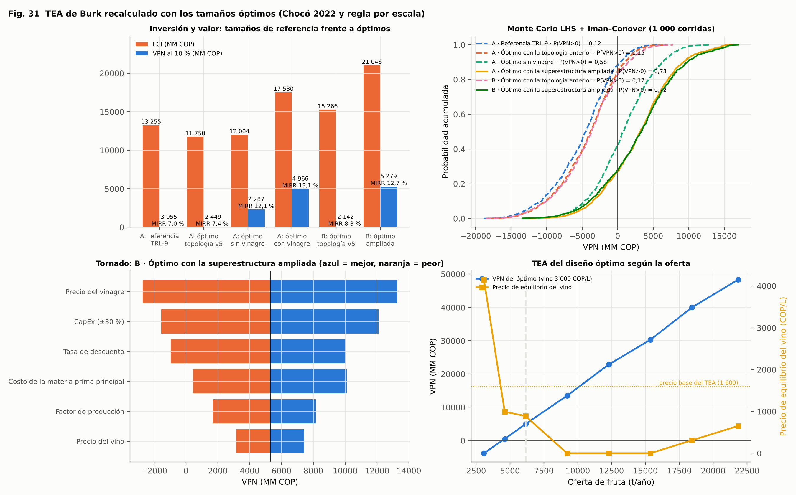<figcaption>Fig. 31. TEA de Burk con los tamaños de referencia y óptimos: inversión, VPN y MIRR; Monte Carlo; tornado del mejor caso; VPN y precio de equilibrio del vino del diseño óptimo según la oferta.</figcaption></figure>
<div class="prose">
<p><b>Lectura.</b></p>
<ul class="tight">
<li><b>El TEA completo confirma el orden del MILP.</b> Con vino + harina, el VPN pasa de -6 260 MM COP en el diseño TRL-9 a -5 496 con los tamaños óptimos de la topología anterior y a 10 500 con la superestructura ampliada (MIRR 3,0 % → 3,2 % → 15,1 %). El FCI sube de 13 255 a 21 442 MM COP y la probabilidad de VPN positivo sube de 2 % a 90 %. Sin SO₂ (pasteurización flash), el VPN queda en 9 156 MM COP. Sin las rutas de vinagre, el óptimo da VPN de 203 MM COP (MIRR 10,2 %, P(VPN > 0) = 36 %): el vinagre aporta 10 297 MM COP de VPN con el precio supuesto de 2 200 COP/L. Sin la caldera de corona, el VPN es 9 807 MM COP: la caldera aporta 693 MM COP.</li>
<li><b>Con bromelaína.</b> El diseño TRL-9 con tres prensas dedicadas da VPN de -6 392 MM COP. El óptimo con la topología anterior sube a -4 825, y el de la superestructura ampliada a 9 102 sin tercer turno (MIRR 13,7 %, recuperación en 4,8 años, P(VPN > 0) = 81 %). La bromelaína suma -1 399 MM COP de VPN sobre el óptimo de vino + harina, con 4 704 MM COP más de inversión: es el mejor caso, pero su ventaja es pequeña frente a la incertidumbre del precio del vino.</li>
<li><b>El precio del vino sigue mandando.</b> En el tornado del mejor caso, el VPN solo se vuelve negativo con . Con las rutas de vinagre, el precio de equilibrio del vinagre es 1 377 COP/L con bromelaína y 1 250 COP/L sin ella, frente al supuesto de 2 200 COP/L: un 20 % de margen de error en el precio que más pesa. Sin vinagre, el precio de equilibrio del vino es 2 973 COP/L, por encima de los 1 600 COP/L de los TEA por línea.</li>
<li><b>Escala mínima.</b> Con los tamaños óptimos de cada oferta, el VPN es negativo a 3 073 t/año y positivo desde 3 073 t/año de fruta; el umbral está entre esos dos puntos del barrido, por debajo de la oferta actual del Chocó. A la base de la tesis (21 856 t/año), el VPN llega a 30 604 MM COP.</li>
</ul>
<p><b>Diferencias con el TEA del plan de la versión 2.</b> El plan vino + harina del MILP (Chocó 2022) tenía VPN de 1 154 MM COP con FCI de 13 203. El caso de referencia de esta sección da -6 260 MM COP porque corrige tres cosas: (1) la producción sale del programa anual (el diseño TRL-9 procesa 5 926 t, no 6 146); (2) el plan anterior heredaba del diseño el desvío del 16 % del vino a vinagre aunque la línea de vinagre no estaba en el plan, de modo que ese vino no se vendía; ahora se vende todo; (3) antes la fruta se cobraba solo por las fracciones asignadas a cada línea (pulpa y cáscara, el 75 %), y ahora se cobra toda la fruta más el compostaje de lo que no se usa. Las correcciones (2) y (3) van en sentidos opuestos. Además, desde la versión 6 todos los casos incluyen nutrientes (DAP), inertización con N₂, el retenido de la clarificación y el compostaje de lías; por eso el diseño TRL-9 pasa de 763 MM COP en la versión 5 a -6 260 aquí.</p>
</div>
<h3>TEA del diseño óptimo por escala</h3>
<div class="tbl"><table><thead><tr><th>Oferta (t/año)</th><th>Tamaños</th><th>FCI (MM COP)</th><th>VPN (MM COP)</th><th>MIRR</th><th>Vinagre (m³/año)</th><th>Precio de equilibrio del vinagre (COP/L)</th></tr></thead><tbody><tr><td class="num">3 073</td><td>Frente 1 t/h; Prensa 1 t/h; Prensa cáscara no; Clarificación Flotación 0.5 m³/h; MF lías 2 m²; Estabilización SO₂; Bodega 2×10 m³; Secador 50 kg agua/h; Bodega cáscara 2×10 m³; Acetificador 10 m³; Almacén de mosto 10 m³; Extractora hojas 2 t/h</td><td class="num">16 637</td><td class="num">5 798</td><td class="num">13,7 %</td><td class="num">3 000</td><td class="num">1 676</td></tr><tr><td class="num">4 610</td><td>Frente 3 t/h; Prensa 1 t/h; Prensa cáscara 1 t/h; Clarificación Centrífuga 1 m³/h; Estabilización SO₂; Bodega 2×10 m³; Secador 100 kg agua/h; Bodega cáscara 2×10 m³; Acetificador 10 m³; Caldera de corona 100 kWt; Almacén de mosto 10 m³; Extractora hojas 2 t/h</td><td class="num">20 152</td><td class="num">7 396</td><td class="num">13,9 %</td><td class="num">3 000</td><td class="num">1 531</td></tr><tr><td class="num">6 146</td><td>Frente 3 t/h; Prensa 1 t/h; Prensa cáscara 1 t/h; Clarificación Centrífuga 1 m³/h; MF lías 2 m²; Estabilización SO₂; Bodega 2×10 m³; Secador 100 kg agua/h; Bodega cáscara 2×10 m³; Acetificador 10 m³; Caldera de corona 100 kWt; Almacén de mosto 10 m³; Extractora hojas 2 t/h</td><td class="num">21 442</td><td class="num">10 500</td><td class="num">15,1 %</td><td class="num">3 000</td><td class="num">1 250</td></tr><tr><td class="num">9 219</td><td>Frente 5 t/h; Prensa 2 t/h; Prensa cáscara 1 t/h; Clarificación Centrífuga 2 m³/h; MF lías 5 m²; Estabilización SO₂; Bodega 2×10 m³; Secador 200 kg agua/h; Bodega cáscara 2×10 m³; Acetificador 10 m³; Caldera de corona 100 kWt; Almacén de mosto 10 m³; Extractora hojas 2 t/h</td><td class="num">26 105</td><td class="num">14 067</td><td class="num">15,5 %</td><td class="num">3 000</td><td class="num">927</td></tr><tr><td class="num">12 292</td><td>Frente 5 t/h; Prensa 2 t/h; Prensa cáscara 1 t/h; Clarificación Centrífuga 2 m³/h; MF lías 5 m²; Estabilización SO₂; Bodega 2×10 m³; Secador 200 kg agua/h; Bodega cáscara 2×10 m³; Acetificador 10 m³; Caldera de corona 100 kWt; Almacén de mosto 10 m³; Extractora hojas 2 t/h</td><td class="num">28 051</td><td class="num">18 136</td><td class="num">16,4 %</td><td class="num">3 000</td><td class="num">558</td></tr><tr><td class="num">15 365</td><td>Frente 5 t/h; Prensa 2 t/h; Prensa cáscara 2 t/h; Clarificación Centrífuga 2 m³/h; MF lías 5 m²; Estabilización SO₂; Bodega 2×10 m³; Secador 200 kg agua/h; Bodega cáscara 8×10 m³; Acetificador 10 m³; Caldera de corona 200 kWt; Almacén de mosto 10 m³; Extractora hojas 10 t/h</td><td class="num">32 170</td><td class="num">21 016</td><td class="num">16,5 %</td><td class="num">3 000</td><td class="num">297</td></tr><tr><td class="num">18 438</td><td>Frente 5 t/h; Prensa 3 t/h; Prensa cáscara 2 t/h; Clarificación Centrífuga 2 m³/h; MF lías 10 m²; Estabilización SO₂; Bodega 3×10 m³; Secador 300 kg agua/h; Bodega cáscara 3×10 m³; Enzima cáscara Precipitación 1 t/h; Acetificador 20 m³; Caldera de corona 500 kWt; Almacén de mosto 10 m³; Extractora hojas 10 t/h; tercer turno</td><td class="num">41 443</td><td class="num">24 176</td><td class="num">15,9 %</td><td class="num">3 000</td><td class="num">12</td></tr><tr><td class="num">21 856</td><td>Frente 5 t/h; Prensa 3 t/h; Prensa cáscara 2 t/h; Clarificación Centrífuga 2 m³/h; MF lías 10 m²; Estabilización SO₂; Bodega 3×10 m³; Secador 300 kg agua/h; Bodega cáscara 3×10 m³; Enzima cáscara Precipitación 1 t/h; Acetificador 20 m³; Caldera de corona 500 kWt; Almacén de mosto 10 m³; Extractora hojas 10 t/h; tercer turno</td><td class="num">43 390</td><td class="num">30 604</td><td class="num">16,9 %</td><td class="num">3 000</td><td class="num">—</td></tr></tbody></table></div>
<h3>Libros Excel</h3>
<div class="prose"><p>Los 15 casos de Chocó 2022 se exportaron a <code>TEA_excel/</code> con la estructura de los libros de asaí y coco (Inicio, Tablero, Modelo del proceso, Costos de Equipos, CapEx, OpEx &amp; Ingresos, Flujo de Caja, Tornado, Break-Even, Monte Carlo), con fórmulas vivas, y se recalcularon en LibreOffice. En la exportación se corrigió un detalle: un residuo distinto de las aguas residuales (aquí, el compostaje) tomaba la tarifa de aguas residuales. Los once libros anteriores no tenían otros residuos, así que no cambian.</p></div>
<div class="tbl"><table><thead><tr><th>Libro</th><th>VPN Python (MM COP)</th><th>VPN Excel (MM COP)</th><th>Diferencia relativa</th></tr></thead><tbody><tr><td>TEA_Dimensionado_Choco2022_A_Referencia_TRL_9.xlsx</td><td class="num">-6 260</td><td class="num">-6 260</td><td class="num">1.5e-16</td></tr><tr><td>TEA_Dimensionado_Choco2022_A_ptimo_con_la_topolog_a_anterior.xlsx</td><td class="num">-5 496</td><td class="num">-5 496</td><td class="num">0.0e+00</td></tr><tr><td>TEA_Dimensionado_Choco2022_A_ptimo_con_la_superestructura_ampliada.xlsx</td><td class="num">10 500</td><td class="num">10 500</td><td class="num">9.1e-16</td></tr><tr><td>TEA_Dimensionado_Choco2022_A_ptimo_sin_vinagre.xlsx</td><td class="num">203</td><td class="num">203</td><td class="num">2.2e-15</td></tr><tr><td>TEA_Dimensionado_Choco2022_A_ptimo_sin_caldera_de_corona.xlsx</td><td class="num">9 807</td><td class="num">9 807</td><td class="num">7.8e-16</td></tr><tr><td>TEA_Dimensionado_Choco2022_A_ptimo_sin_SO.xlsx</td><td class="num">9 156</td><td class="num">9 156</td><td class="num">1.0e-15</td></tr><tr><td>TEA_Dimensionado_Choco2022_A_Dise_o_v10_con_par_metros_v11.xlsx</td><td class="num">6 304</td><td class="num">6 304</td><td class="num">7.6e-16</td></tr><tr><td>TEA_Dimensionado_Choco2022_A_ptimo_sin_az_car_a_adido.xlsx</td><td class="num">4 148</td><td class="num">4 148</td><td class="num">3.7e-15</td></tr><tr><td>TEA_Dimensionado_Choco2022_A_ptimo_sin_tope_de_demanda_de_vinagre.xlsx</td><td class="num">58 464</td><td class="num">58 464</td><td class="num">7.8e-16</td></tr><tr><td>TEA_Dimensionado_Choco2022_A_ptimo_sin_opciones_v10.xlsx</td><td class="num">7 441</td><td class="num">7 441</td><td class="num">5.1e-16</td></tr><tr><td>TEA_Dimensionado_Choco2022_A_ptimo_sin_etanol_de_hojas.xlsx</td><td class="num">10 500</td><td class="num">10 500</td><td class="num">9.1e-16</td></tr><tr><td>TEA_Dimensionado_Choco2022_A_ptimo_sin_digestor.xlsx</td><td class="num">10 136</td><td class="num">10 136</td><td class="num">0.0e+00</td></tr><tr><td>TEA_Dimensionado_Choco2022_B_Referencia_TRL_9_con_bromela_na.xlsx</td><td class="num">-6 392</td><td class="num">-6 392</td><td class="num">1.3e-15</td></tr><tr><td>TEA_Dimensionado_Choco2022_B_ptimo_con_la_topolog_a_anterior.xlsx</td><td class="num">-4 825</td><td class="num">-4 825</td><td class="num">3.0e-15</td></tr><tr><td>TEA_Dimensionado_Choco2022_B_ptimo_con_la_superestructura_ampliada.xlsx</td><td class="num">9 102</td><td class="num">9 102</td><td class="num">1.7e-15</td></tr></tbody></table></div>
</section>

<section id="tesis2">
<h2>Cambios que sugiere a la tesis (versión 2)</h2>
<ol class="edits prose">
<li><b>§4.2.5, tiempo de parada.</b> Los 78–81 h de la Tabla 3 de Moresi no son un "punto de parada de costo mínimo". Son el tiempo para consumir el 85 % del azúcar, el criterio fijo de su paso 2.</li>
<li><b>§4.2.5, intercambiadores.</b> En Moresi, los 4 y 10 intercambiadores sirven a 26 y 69 fermentadores abiertos. La bodega de 5 fermentadores es cerrada, con camisa y sin intercambiador. Hay que corregir "cuatro a diez intercambiadores para cinco a sesenta y nueve fermentadores".</li>
<li><b>§4.2.5, ventaja premium.</b> Reemplazar "+15,4 % de etanol por conversión casi completa" por la descomposición de la Fig. 17: +15,1 % por cambio de modelo y +1,3 % por conversión.</li>
<li><b>§4.2.3 y §4.2.5, validez térmica.</b> Declarar que la cinética de Moresi solo vale entre 15 y 25 °C y no describe la línea rápida a 30 °C.</li>
<li><b>§3.3 y §3.5, base de diseño.</b> Actualizar la oferta con la EVA 2022 (6 146 t) y declarar que la base de 78 300 hL/año exige unas 21 900 t/año de fruta, 3,6 veces la producción del departamento. O se redimensiona la planta, o se justifica el abastecimiento con fruta de fuera del Chocó.</li>
<li><b>Cap. 5, energía.</b> Para un diseño TRL-9, la caldera de biomasa de corona cubre el calor de secado y la gasificación no. Conviene presentar la gasificación como alternativa TRL 8. En el dimensionamiento de la versión 10, la caldera de corona (100 kWt) entrega 2 360 GJ/año y desplaza casi todo el GLP.</li>
<li><b>Cap. 8, TEA.</b> Adoptar la estructura de los TEA de asaí y coco (libros en <code>TEA_excel/</code>) y reportar el precio de equilibrio del vino (≈2 300 COP/L a la escala de la tesis) junto al precio "ilustrativo" de 400 USD/t.</li>
<li><b>Cap. 8, TEA con tamaños óptimos.</b> Evaluar la planta con los equipos del dimensionamiento y la producción del programa anual, no con la nominal. Con la oferta actual, el mejor caso es vino + harina + bromelaína con la superestructura ampliada (VPN ≈ 9 102 MM COP, MIRR 13,7 %, P(VPN > 0) = 81 % con vino a 3 000 COP/L), seguido muy de cerca por vino + harina (10 500 MM COP). Cobrar toda la fruta procesada, no solo las fracciones asignadas a cada línea.</li>
<li><b>§4.2.1 y §4.2.3, microfiltración del jugo de piña.</b> Usar los valores medidos por Quesada Salas (2013), la misma fuente del rendimiento de prensado de la tesis: 40–50 L/m²·h sostenidos y 73 % de jugo clarificado (FRV 3,7), no 60 L/m²·h sin retenido. Con esos valores, la microfiltración del mosto completo no es competitiva frente a centrífuga + microfiltración de lías, y el retenido debe ir a la línea de harina.</li>
<li><b>§4.3, vinagre.</b> Rediseñar la línea con el acetificador de Frings (Emde 2017: 40–60 kg/m³·d, frío, grupo electrógeno de emergencia) y evaluar el jugo de la prensa de cáscara como materia prima del vinagre (Bekatorou 2020). Con vinagre a 2 200 COP/L, el vinagre es la salida más rentable del vino; el precio del vinagre de frutas a granel y el tamaño de su mercado son ahora los datos que más pesan en la decisión.</li>
<li><b>§4.2.3–4.2.4, tratamiento del mosto.</b> Reemplazar la microfiltración del mosto por flotación o centrífuga de discos, con microfiltración de lías para recuperar el jugo, y declarar la turbidez objetivo (100–200 NTU, Morata 2022, cap. 8). Justificar la estabilización (SO₂, pasteurización o UHPH) y agregar la dosificación de nitrógeno asimilable y la inertización con N₂ (caps. 12, 23 y 25).</li>
<li><b>§6.7, incertidumbre.</b> Reportar RP, EEV, VSS y EVPI junto al CVaR. Con la oferta actual, el VSS es 0 y el EVPI de unos -0 MM COP/año. Lo que justifica medir antes de invertir es el sesgo del valor medio (+43 %) y la conmutación en λ* ≈ 0,2, más que la diferencia entre decisiones.</li>
<li><b>§4.x, dimensionamiento.</b> Agregar el dimensionamiento simultáneo con el programa anual y la superestructura de tecnologías del mosto. Con la oferta actual y vino + harina, el frente de 3 t/h, las dos prensas dedicadas de 1 t/h, centrífuga 1 m³/h, microfiltración de lías de 2 m² y un secador de 100 kg agua/h procesan el 99,9 % de la fruta con menos inversión que el diseño por flujo medio. El almacén aséptico de mosto y la decantadora no se justifican.</li>
<li><b>§4.4 y Cap. 8, cáscara (versión 9).</b> Usar los rendimientos medidos de Campos et al. (2020) (57,8 % de jugo; torta con 17 % de materia seca, que retiene el 41 % de los sólidos) y de Seguí y Fito (2018) (0,36 g de etanol/g de azúcar en el jugo de cáscara), y estabilizar el jugo de cáscara antes de fermentarlo. Con esos datos la harina cae un tercio y el VPN del óptimo baja 5 733 → 2 577 MM COP; la materia seca de la torta y el precio de la harina pasan a ser los datos más urgentes. Presentar la bromelaína del jugo de cáscara (precipitación sin solventes) como una etapa que se agrega desde unas 12 000 t/año, no como una línea aparte, y descartar el prensado con cal mientras la harina valga más que el jugo.</li>
<li><b>Capítulo de metodología (versión 10).</b> Organizar el método en las tres etapas de Bertran, Tula y Gani (2022): síntesis con la superestructura y el MILP (incluidas las hojas de la planta como segunda materia prima), diseño y verificación (balances, cinética calibrada, SuperPro, TEA de Burk), e innovación desde los puntos calientes. Agregar la evaluación de sostenibilidad de Heinzle et al. (2006): ACV de la cuna a la puerta con línea base sin planta, indicadores sociales y frente de Pareto margen–GWP. Declarar el registro de parámetros con su etiqueta de procedencia como parte del método. Con los supuestos centrales, el óptimo v10 acopia 2 678 t/año de hojas, produce 3 000 m³/año de vinagre y da 4 652 MM COP/año de margen; el mercado del vinagre es la condición que hay que validar.</li>
<li><b>§4.3 y Cap. 8, vinagre (versión 11).</b> Tratar la demanda de vinagre como un dato de entrada con escenarios, no como una consecuencia del diseño, y presentar el diseño como una familia indexada por esa demanda. Incluir la panela añadida a los jugos antes de fermentar (Ebrahimi 2026; Tanamool et al. 2020), que permite vender el vino y hacer el vinagre con los jugos de cáscara y de hojas, y el tratamiento del efluente del vinagre (electrocoagulación y humedal construido) en el TEA y el ACV. Usar para la xantana el rendimiento medido con residuo de piña (Iakovchenko 2026), no el de glucosa pura. Con la demanda central de 3 000 m³/año, el óptimo da 4 652 MM COP/año.</li>
<li><b>Cap. 6 y 9, selección de líneas.</b> Incorporar el MILP con tamaños discretos y el STN semanal como evidencia de qué procesar con la oferta actual y de dónde están los cuellos de botella.</li>
</ol>
</section>

<section id="v1-hallazgos">
<h2>Modelos Corsano (versión 1): hallazgos</h2>
<div class="findings">
  <div class="finding"><div class="n">12 fermentadores</div><div class="t">La configuración de la tesis (§4.2.4) aparece sin variables binarias cuando el tiempo de llenado se limita a 1 h. Esa protección contra la oxidación cuesta +17,8 % de TAC frente al óptimo libre.</div><div class="s">Modelo 1 · Fig. 6</div></div>
  <div class="finding"><div class="n">10 óptimos locales</div><div class="t">25 arranques del mismo NLP convergen a 10 estructuras distintas, con TAC entre 338,9 y 394,5 k USD/año (16 % de dispersión). En un subproblema certificado con SCIP, Bonmin B-OA (análogo de DICOPT) queda 2–3 % por encima del óptimo global. Esto respalda empíricamente la crítica de §6.10 al uso de CONOPT.</div><div class="s">Modelo 1 · Fig. 5 y tabla E7</div></div>
  <div class="finding"><div class="n">7–9 %</div><div class="t">Ahorro de la optimización simultánea de Corsano frente a la cadena jerárquica actual de la tesis (cinética, luego tiempo de ciclo fijo, luego dimensionamiento). Con llenado de 1 h, la cadena jerárquica ni siquiera tiene solución con 12 fermentadores. Cuantifica la brecha que §6.10 solo enuncia.</div><div class="s">Modelo 1 · Fig. 8</div></div>
  <div class="finding"><div class="n">f ≥ 2</div><div class="t">El reciclo de vinaza de Corsano (2006b) solo se vuelve óptimo si el hub entrega azúcar concentrado al menos 2×. Con las corrientes diluidas de la piña (60–110 g/L), reciclar no compensa.</div><div class="s">Modelo 2 · Fig. 10</div></div>
  <div class="finding"><div class="n">η = 0,905</div><div class="t">Recuperación de etanol en destilación cuando el etanol residual cuenta como DBO en la ec. 38. Sin ese término, el óptimo bota el 20 % del etanol en la vinaza.</div><div class="s">Modelo 2</div></div>
  <div class="finding"><div class="n">+56 k USD/año</div><div class="t">Ventaja de la planta multiproducto con campaña AB frente al complejo multiplanta, incluida la mano de obra (9 frente a 15 operarios). Sin mano de obra, la ventaja cae a 11 k USD/año (0,4 % del beneficio). Igual que en el libro, la diferencia económica es pequeña y la decide el personal.</div><div class="s">Modelos 3–4 · Figs. 14–15</div></div>
  <div class="finding"><div class="n">1,02 USD/kg</div><div class="t">Costo medio del etanol del hub con el modelo detallado de Corsano 2006b, por encima del precio supuesto (0,85 USD/kg). El orden de uso del hub lo fija la concentración de cada corriente, no su costo por kg de azúcar.</div><div class="s">Modelo 2 · Fig. 13</div></div>
</div>
<div class="note"><strong>Cómo leer las cifras.</strong> Los costos unitarios, las concentraciones y disponibilidades del hub, el precio del etanol y del vinagre y el salario son supuestos ilustrativos, marcados <span class="tag">[S]</span> en <code>params.py</code>. Son robustas en los barridos las conclusiones estructurales: qué arquitectura gana, por qué y cuándo cambia. Las cifras absolutas en USD no deben citarse como resultados de la tesis hasta reemplazar esos supuestos por datos del proyecto.</div>
</section>

<section id="mapa">
<h2>Qué se implementó y dónde encaja en la tesis</h2>
<div class="tbl"><table>
<thead><tr><th>Modelo</th><th>Fuente de Corsano</th><th>Mecanismo reproducido</th><th>Adaptación a la piña</th><th>Sección de la tesis</th></tr></thead>
<tbody>
<tr><td>1</td><td>2004 (I&amp;ECR 43:4211); 2006a (Appl. Math. Model. 30:974); libro cap. 3</td><td>Superestructura NLP con alternativas en serie y en paralelo fuera de fase; ZW; ODE discretizadas por trapecios; costo cóncavo que anula las alternativas no óptimas</td><td>Propagación aerobia y fermentación del jugo de pulpa (158,83 g/L), calibradas con Murcia Palacios (2013); restricción de llenado por oxidación; vino seco ≤ 4 g/L</td><td>§4.2.3, §4.2.4, §6.10</td></tr>
<tr><td>2</td><td>2006b (ChERD 84:932)</td><td>Mezcla de sustratos con rendimiento no lineal (ec. 6), reciclo de vinaza, penalización (ec. 37–38), centrífuga y destilación por lotes (ec. 24–31)</td><td>Melaza, jugo de filtros y vinaza pasan a ser jugo de cáscara, hidrolizado de hojas/corona, permeado UF de tallo+corazón y vinaza. La mezcla reproduce el término bilineal del hub</td><td>§4.6, §6.3, §6.6</td></tr>
<tr><td>3</td><td>2007 (I&amp;ECR 46:2769); libro cap. 4</td><td>Heurística de campañas mixtas: SPC, razón de lotes, campañas candidatas, un NLP por campaña</td><td>Vino (A) y bioetanol (B) comparten propagador, fermentador y centrífuga; el vinagre (C) es subproducto de A</td><td>§6.10 (alternativa MP), §9.6</td></tr>
<tr><td>4</td><td>Libro cap. 5 (ec. 4.1–4.13); 2006c (I&amp;ECR 45:4256)</td><td>Complejo multiplanta: planta madre con recursos producidos, suministrados y exportados</td><td>La planta madre es el fraccionamiento, el hub y la isla de gasificación; el respaldo es diésel ZNI y el excedente se exporta a la microrred local. Se añade la mano de obra, que Corsano no valoró</td><td>§6.10, §9.6, §11.2, §11.3 (punto 7)</td></tr>
</tbody></table></div>
<p class="prose">El libro confirma las cifras que la tesis cita en §6.10 y §9.6 (Tabla 4.3, p. 78): inversión MC = 2 610 750 USD frente a MP = 2 188 500 USD, beneficios parciales de 3 654 000 frente a 3 636 000 USD, y 15 frente a 9 trabajadores (p. 77). Esas cifras pueden dejar de marcarse como pendientes de verificar.</p>
</section>

<section id="base">
<h2>Base de diseño y procedencia de los datos</h2>
<div class="tbl"><table>
<thead><tr><th>Parámetro</th><th>Valor</th><th>Fuente</th></tr></thead>
<tbody>
<tr><td>Producción de vino</td><td class="num">78 300 hL/año → 68,2 kg etanol/h</td><td><span class="tag">[T]</span> §4.2.5</td></tr>
<tr><td>Azúcar fermentable del jugo (fruta de rechazo)</td><td class="num">158,83 g/L</td><td><span class="tag">[T]</span> §3.2.1, Murcia Palacios (2013)</td></tr>
<tr><td>Título y tiempo de referencia (30 °C, pH 4,5)</td><td class="num">65,31 g/L en 12,5 h</td><td><span class="tag">[T]</span> §4.2.3</td></tr>
<tr><td>Y<sub>P/S</sub> consistente con el título</td><td class="num">0,4164 g/g (la tesis redondea a 0,41)</td><td><span class="tag">[T]</span></td></tr>
<tr><td>µ<sub>max</sub> calibrado (X<sub>0</sub> = 0,2 g/L supuesto)</td><td class="num">0,436 h⁻¹</td><td>Calibración; ver Fig. 3</td></tr>
<tr><td>K<sub>s</sub>, P<sub>max</sub>, Y<sub>X/S</sub>, k<sub>d</sub></td><td class="num">1 g/L, 95 g/L, 0,08, 0,01 h⁻¹</td><td><span class="tag">[L]</span></td></tr>
<tr><td>Horizonte, CCF</td><td class="num">7 500 h/año, 0,225</td><td><span class="tag">[C]</span> 2004, 2006b</td></tr>
<tr><td>Costo instalado de fermentador</td><td class="num">25 000·V<sup>0,6</sup> USD</td><td><span class="tag">[S]</span> exponente <span class="tag">[T]</span> §4.2.4</td></tr>
<tr><td>Electricidad ZNI (diésel)</td><td class="num">0,35 USD/kWh</td><td><span class="tag">[S]</span> contexto §1.2</td></tr>
<tr><td>Hub: cáscara / hidrolizado / permeado</td><td class="num">110 / 60 / 80 g/L; 6 / 9 / 3 USD/m³</td><td><span class="tag">[S]</span> estructura <span class="tag">[T]</span> §4.6</td></tr>
<tr><td>Acetificación estática / acetador</td><td class="num">50 g/L en 30 d / ≈50 kg/m³·d</td><td><span class="tag">[T]</span> Roda 2017a; Emde 2017</td></tr>
</tbody></table></div>
</section>

<section id="m1">
<h2>Modelo 1 · Superestructura NLP del tren de vino</h2>
<div class="prose">
<h3>Formulación</h3>
<p>Siguiendo a Corsano et al. (2006a), la superestructura contiene todas las alternativas explícitamente. La operación 1 (propagación aerobia) admite 1 unidad, 2 en serie o 2 en paralelo. La operación 2 (fermentación alcohólica) admite 1, 2, 3, 4, 6, 8 o 12 unidades fuera de fase, 2 en serie o 2×2. Cada unidad lleva su propio modelo dinámico discretizado:</p>
</div>
<pre class="eq">X_{i+1} = X_i + h/2·[f_X(X_i,S_i,P_i) + f_X(X_{i+1},S_{i+1},P_{i+1})]        (trapecios, Corsano 2004 ec. 8–11)
µ = µmax · S/(Ks+S) · (1 − P/Pmax);   f_X = µX − kd·X;   f_S = −µX/Yxs;   f_P = Yps·µX/Yxs

min TAC = CCF · Σ_a Σ_j M_aj · A · V_aj^b  +  (H/TL) · [c_jugo·ΣF + c_LSA·Σinóculo + c_elec·kW·ΣV·T]   (2006a ec. 1)
s.a.  TL ≥ T_aj / M_aj        (ZW, fuera de fase)            Σ_a P_a·V_a ≥ PR·TL      (producción)
      TL ≤ τ_llenado          (oxidación, tesis §4.2.4)       Σ_a S_a·V_a ≤ 4·Σ_a V_a  (vino seco)
      X0·V = Xpool·B_in + inóculo;   Xpool·ΣV = ΣX_fin·V_fin   (pool bilineal entre operaciones)</pre>
<div class="prose">
<p>Como b &lt; 1, mantener dos estructuras a la vez siempre cuesta más que concentrar todo el volumen en una sola. Por eso el óptimo lleva a V → 0 las alternativas sobrantes y el problema no necesita binarias. El NLP base tiene 688 variables y 1 957 restricciones y se resuelve en unos 2 s.</p>
<h3>Cinética, discretización e identificabilidad</h3>
</div>
<figure>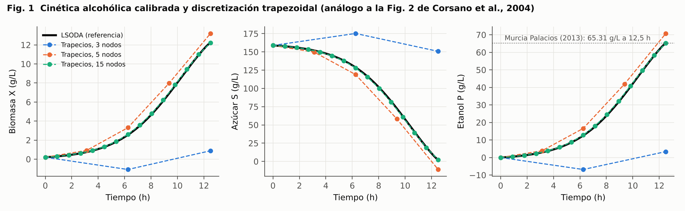<figcaption>Fig. 1. Con 15 nodos el método trapezoidal reproduce LSODA. Con 5 nodos, el etanol final se desvía 5,4 g/L (8 %).</figcaption></figure>
<div class="prose">
<p>Corsano et al. (2004, Fig. 2) afirman que 5 nodos bastan porque el método coincide con el simulador en el último punto. Con la cinética inhibida por etanol que exige el vino, eso no se cumple: el error en el punto final es de 5,4 g/L de etanol y 13 g/L de azúcar con 5 nodos, y cae a 0,14 y 0,35 g/L con 15 nodos (Fig. 2). Por eso todos los modelos usan 15 nodos y se verificaron a posteriori. Al resimular con LSODA la operación óptima, el NLP coincide en etanol final dentro de 0,15 % y en azúcar residual dentro de 0,2 g/L. La tesis no debería heredar la afirmación de los 5 nodos.</p>
</div>
<figure>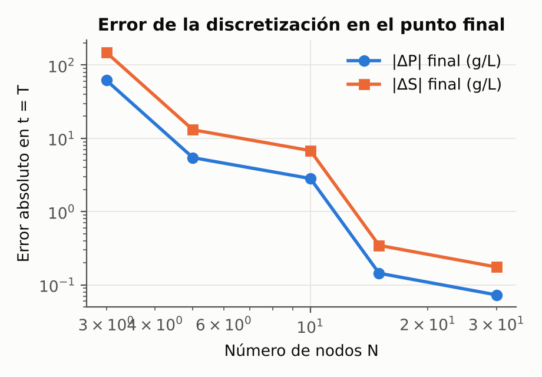<figcaption>Fig. 2. Error en t = T frente al número de nodos (escala log-log).</figcaption></figure>
<figure>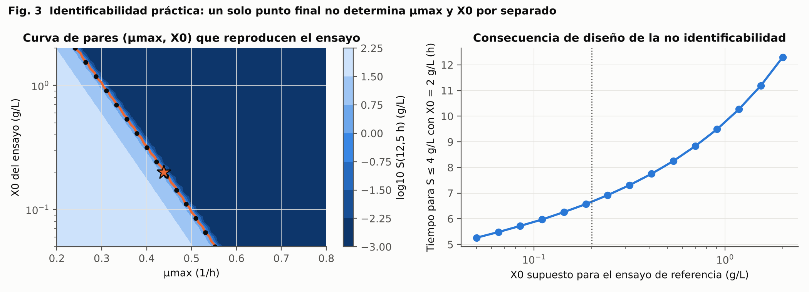<figcaption>Fig. 3. Hay una familia continua de pares (µmax, X0), desde (0,55; 0,05 g/L) hasta (0,24; 2 g/L), que reproduce igual de bien el único punto medido. Para un pie de cuba de 2 g/L, el tiempo de fermentación de diseño varía entre 5,3 y 12,3 h según el par elegido.</figcaption></figure>
<div class="prose">
<p>El dato de Murcia Palacios (2013) es un único punto final: 65,31 g/L a 12,5 h. Un punto no puede identificar a la vez µmax y la dosis efectiva de inóculo. La Fig. 3 muestra que la ambigüedad tiene consecuencias de diseño: el tiempo de ciclo, y con él el volumen de los fermentadores, cambia 2,3 veces dentro del conjunto de parámetros compatibles con el dato. Recomendación metodológica: medir una curva temporal de al menos 6 puntos (azúcar, etanol, biomasa) y registrar la dosis de levadura viable. Hasta entonces, propagar µmax como incertidumbre, que es lo que hace el análisis de Sobol más abajo.</p>
<h3>Óptimo base: el modelo reinventa el pie de cuba</h3>
</div>
<figure>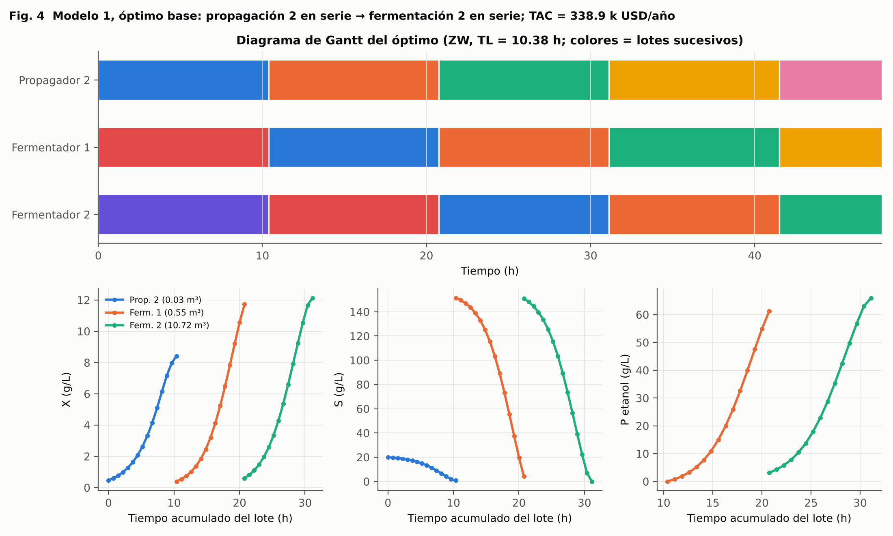<figcaption>Fig. 4. Óptimo base de la superestructura original (11 alternativas): una cascada de propagación y dos fermentadores en serie de 0,55 m³ y 10,72 m³, con TL = 10,38 h y TAC = 338,9 k USD/año (8,7 % capital, 91,3 % operación). Al añadir la alternativa de 3 en serie (Fig. 7), el óptimo baja a 337,2 k USD/año.</figcaption></figure>
<div class="prose">
<p>La estructura elegida es la de Corsano et al. (2006b), con una unidad de biomasa y dos fermentadores en serie, y en enología corresponde al pie de cuba. Un fermentador pequeño (5 % del volumen) recibe el cultivo del propagador y mosto sin diluir, llega a X ≈ 11,7 g/L y siembra el fermentador principal con X<sub>0</sub> ≈ 0,6 g/L. El optimizador llega a esa práctica industrial sin que nadie se la imponga. El capital pesa poco (8,7 %): el TAC lo dominan el jugo y el inóculo, así que la estructura óptima se decide sobre todo por el uso del sustrato y no por el tamaño de los equipos.</p>
</div>
<figure>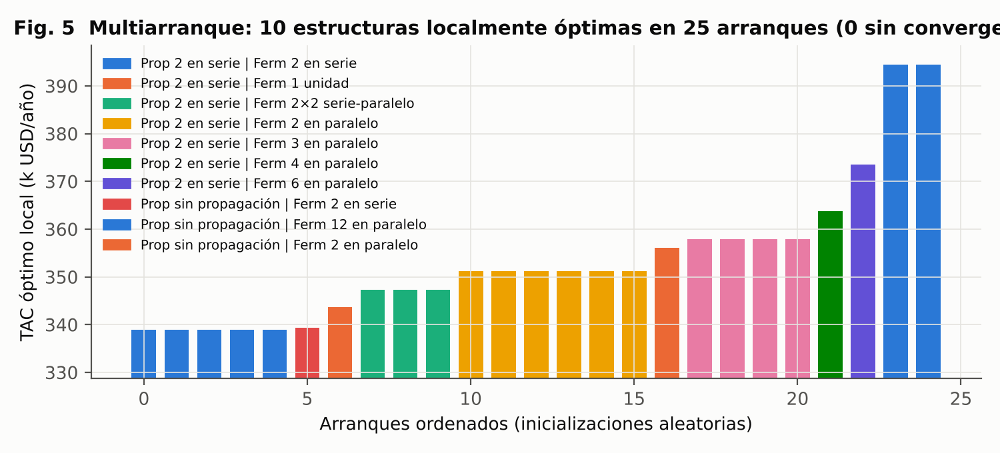<figcaption>Fig. 5. Multiarranque con 25 inicializaciones aleatorias: aparecen 10 estructuras localmente óptimas, y el mejor valor se alcanza en 5 de 25 arranques.</figcaption></figure>
<div class="prose">
<p>Esta es la evidencia cuantitativa de lo que §6.10 afirma de forma cualitativa: Corsano resuelve con CONOPT, un solver local, y sus óptimos no tienen garantía global. En el modelo de la piña, una sola corrida con una inicialización arbitraria puede quedar hasta un 16 % por encima del mejor óptimo encontrado, y con otra estructura. El protocolo de verificación de §6.9 (multiarranque, cotas y solver global) no es un lujo para este tipo de modelos.</p>
<h3>Oxidación del mosto: el costo de los 12 fermentadores</h3>
</div>
<figure>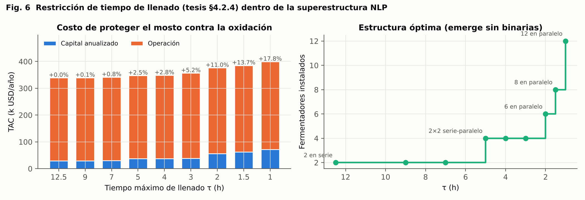<figcaption>Fig. 6. Si cada fermentador debe llenarse en menos de τ horas, la superestructura pasa de 2 en serie a 2×2, luego a 6, 8 y 12 en paralelo. El costo sube de forma no lineal.</figcaption></figure>
<div class="prose">
<p>La tesis elige 12 fermentadores más pequeños para acortar el llenado (§4.2.4). Aquí esa decisión sale del modelo: con τ = 1 h, la estructura óptima es exactamente 12 unidades fuera de fase (TL = 12,5/12 ≈ 1 h). Su costo frente al óptimo libre es de +60,3 k USD/año (+17,8 %); el capital anualizado pasa de 29 a 72 k USD/año. La curva es convexa: bajar el llenado de 7 a 3 h cuesta solo +4,4 %, mientras que bajar de 2 a 1 h cuesta +6,1 %. Esto da a §4.2.4 un argumento cuantitativo. Si el glutatión cuesta un orden de magnitud menos que el sobrecosto de capital (como estima la tesis), la combinación racional es un llenado moderado (3–4 h, 2×2 fermentadores) más dosificación de antioxidante, y no 12 fermentadores.</p>
<h3>Mapa de estructuras: exponente de costo y escala</h3>
</div>
<figure>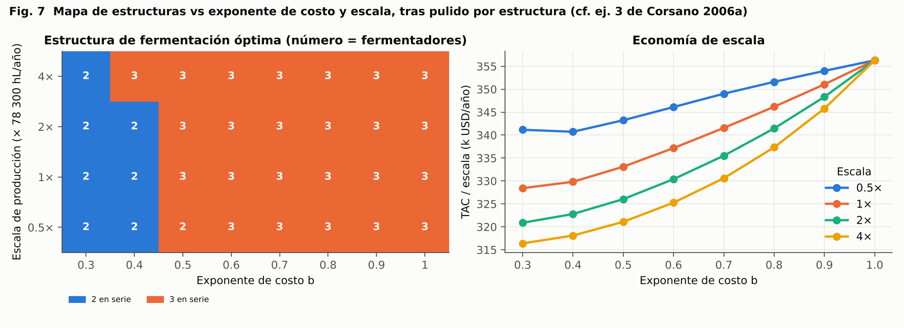<figcaption>Fig. 7. Estructura de fermentación óptima en 32 combinaciones (b, escala), después de reoptimizar cada celda con cada estructura candidata fija.</figcaption></figure>
<div class="prose"><p>El NLP completo con 5 arranques por celda dio un mapa ruidoso. Se pulió reoptimizando cada celda con cada estructura candidata fija (8 estructuras × 2 arranques; problemas más pequeños y mejor condicionados) y tomando el mínimo, como hace Corsano (2006a, §5) con su secuencia de MINLP. El pulido mejoró 17 de las 32 celdas en más de 1 % (1,8 % en promedio y hasta 8,1 %). Detectó además que la superestructura del caso base no incluía la alternativa <b>3 en serie</b>, que resulta la mejor para b ≥ 0,5. Con ella el caso base baja de 338,9 a 337,2 k USD/año (−0,5 %) y la propagación separada desaparece: la cascada de tres fermentadores siembra con levadura seca y hace de pie de cuba.</p>
<p>El mapa pulido es monótono y tiene interpretación física. Con b ≤ 0,4 la concavidad es tan fuerte que una unidad pequeña cuesta casi lo mismo que una grande, y el óptimo usa solo 2 fermentadores en serie. Con b ≥ 0,5 conviene un tercero. La propagación aerobia separada solo vuelve a aparecer con b ≥ 0,7, cuando los equipos pequeños dejan de ser caros. La prueba de consistencia también se cumple: con b = 1, sin economía de escala, el TAC por unidad de producción es idéntico en las cuatro escalas.</p>
<p>Lección metodológica para §6.1 y §6.9: la superestructura sin binarias es tan buena como su lista de alternativas. Corsano (2004) fija la cota superior de unidades en serie resolviendo primero un problema relajado; omitir ese paso, como hizo aquí la primera corrida, deja fuera el óptimo sin aviso. El protocolo de verificación de la tesis debería incluir una prueba explícita de completitud de la superestructura.</p></div>

<div class="prose"><h3>Jerárquico frente a simultáneo: el costo de la cadena actual de la tesis</h3></div>
<figure>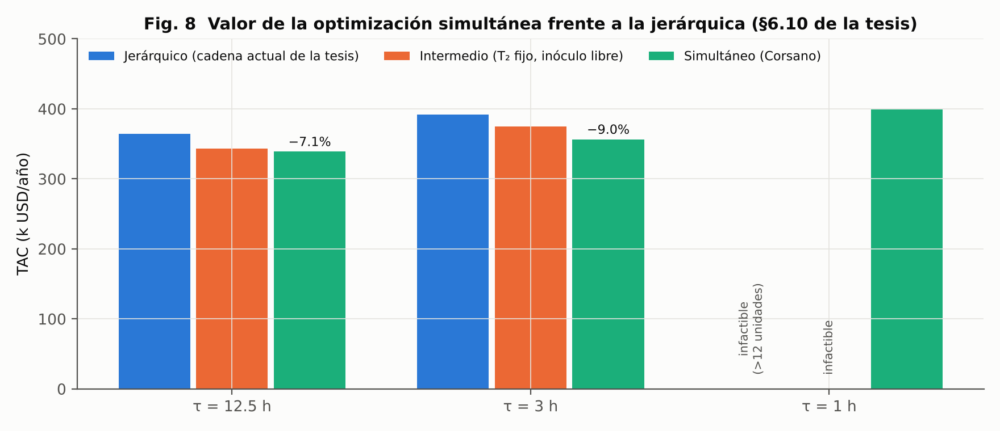<figcaption>Fig. 8. Jerárquico: la cinética fija T = 12,5 h y X<sub>0</sub> = 0,2 g/L de levadura seca, y después se dimensiona. Intermedio: T fijo, inóculo libre. Simultáneo: Corsano.</figcaption></figure>
<div class="prose"><div class="tbl"><table>
<thead><tr><th>τ llenado</th><th>Jerárquico</th><th>Intermedio</th><th>Simultáneo</th><th>Ahorro total</th><th>Parte por inóculo y propagación</th><th>Parte por tiempo y estructura</th></tr></thead>
<tbody>
<tr><td>12,5 h</td><td class="num">364,6 (1 unidad)</td><td class="num">343,5</td><td class="num">338,9 (2 en serie)</td><td class="num">−7,1 %</td><td class="num">82 %</td><td class="num">18 %</td></tr>
<tr><td>3 h</td><td class="num">391,8 (6 en paralelo)</td><td class="num">374,5</td><td class="num">356,4 (2×2)</td><td class="num">−9,0 %</td><td class="num">49 %</td><td class="num">51 %</td></tr>
<tr><td>1 h</td><td class="num">infactible</td><td class="num">infactible</td><td class="num">399,2 (12 en paralelo)</td><td class="num">—</td><td class="num">—</td><td class="num">—</td></tr>
</tbody></table></div>
<p>TAC en k USD/año. La cadena jerárquica, que es la de la tesis (§4.2 y §6.10), cuesta entre 7,1 y 9,0 % más que la formulación simultánea de Corsano. La descomposición muestra dónde está la pérdida. Sin restricción de llenado, el 82 % del ahorro viene de optimizar el inóculo y la propagación: la cadena jerárquica fija X<sub>0</sub> = 0,2 g/L de levadura seca. Cuando la restricción de oxidación se activa (τ = 3 h), la mitad del ahorro viene de optimizar a la vez el tiempo de fermentación y la estructura: el óptimo simultáneo pasa de 6 unidades en paralelo a un arreglo 2×2. Con τ = 1 h la cadena jerárquica no tiene solución. Con T fijo en 12,5 h necesitaría al menos 13 unidades; la optimización simultánea acorta la fermentación a 12 h y cumple con 12.</p>
<p>Esto responde la pregunta que §6.10 deja abierta, si el compromiso entre tiempo de ciclo y tamaño de reactor existe en la cinética de la tesis: sí existe, y vale entre 7 y 9 % del TAC. La justificación de tractabilidad de Kallrath (2021) sigue siendo válida para el MINLP completo. Pero la pérdida ya no es hipotética, y la tesis puede citarla como costo cuantificado de la decisión polilítica.</p></div>

<div class="prose"><h3>NLP sin binarias frente a MINLP</h3>
<p>Para comparar como en §5 de Corsano (2006a), se fijó una etapa por operación y el número de unidades en paralelo se dejó como entero (Bonmin):</p></div>
<div class="tbl"><table>
<thead><tr><th>τ llenado</th><th>Método</th><th>Estructura</th><th>TAC (k USD/año)</th><th>CPU (s)</th></tr></thead>
<tbody>
<tr><td>12,5 h</td><td>NLP superestructura, 9 arranques</td><td>Prop 1 · Ferm 2 en paralelo</td><td class="num">352,1</td><td class="num">13,3</td></tr>
<tr><td>12,5 h</td><td>MINLP Bonmin B-BB</td><td>M = 1 · M = 1</td><td class="num">342,6</td><td class="num">0,2</td></tr>
<tr><td>12,5 h</td><td>MINLP Bonmin B-OA</td><td>M = 1 · M = 1</td><td class="num">342,6</td><td class="num">0,1</td></tr>
<tr><td>3 h</td><td>NLP superestructura, 9 arranques</td><td>Prop 2 en paralelo · Ferm 4 en paralelo</td><td class="num">366,4</td><td class="num">20,6</td></tr>
<tr><td>3 h</td><td>MINLP Bonmin B-BB</td><td>M = 3 · M = 4</td><td class="num">365,0</td><td class="num">0,4</td></tr>
<tr><td>3 h</td><td>MINLP Bonmin B-OA</td><td>M = 2 · M = 2</td><td class="num">402,7</td><td class="num">0,2</td></tr>
</tbody></table></div>
<div class="prose">
<p>Ninguno de los dos enfoques es confiable por sí solo. Con 9 arranques, el NLP sin binarias no encontró en el espacio de una etapa el óptimo M = 1 que sí halló Bonmin (2,8 % peor). A su vez, la aproximación externa de Bonmin (B-OA) se detuvo en una solución 10 % peor que B-BB, por la misma razón por la que Corsano desconfiaba de DICOPT: los cortes lineales sobre regiones no convexas excluyen el óptimo. Con 11 alternativas, el modelo NLP completo del caso base llegó a 338,9 k, mejor que ambos, porque admite series. Para la tesis: el argumento de §6.10 a favor de BARON y de una brecha de optimalidad certificable no depende de usar binarias o no, sino de la no convexidad, que está presente en ambos casos.</p>
<h3>Certificación global con SCIP</h3>
<p>Para probar si la certificación es viable, se reformuló un subproblema: una etapa de fermentación con M ∈ {1…12} entero, inóculo directo y 10 nodos trapezoidales, con la tasa de Monod como variable auxiliar y bilineales explícitos. Se resolvió a optimalidad global con SCIP 10 (ramificación espacial). El mismo problema discretizado se resolvió también con los métodos locales:</p>
</div>
<div class="tbl"><table>
<thead><tr><th>τ llenado</th><th>Método</th><th>TAC (k USD/año)</th><th>M</th><th>Brecha frente al global</th><th>CPU (s)</th></tr></thead>
<tbody>
<tr><td>12,5 h</td><td>SCIP global (brecha certificada 0 %)</td><td class="num">355,56</td><td class="num">2</td><td class="num">—</td><td class="num">7,5</td></tr>
<tr><td>12,5 h</td><td>Bonmin B-BB, 3 arranques</td><td class="num">355,56</td><td class="num">2</td><td class="num">0,0 %</td><td class="num">&lt; 1</td></tr>
<tr><td>12,5 h</td><td>Bonmin B-OA, 3 arranques</td><td class="num">362,86</td><td class="num">1</td><td class="num">+2,1 %</td><td class="num">&lt; 1</td></tr>
<tr><td>12,5 h</td><td>IPOPT + enumeración de M (48 NLP)</td><td class="num">355,56</td><td class="num">2</td><td class="num">0,0 %</td><td class="num">≈ 10</td></tr>
<tr><td>3 h</td><td>SCIP global (brecha certificada 0,009 %)</td><td class="num">375,00</td><td class="num">5</td><td class="num">—</td><td class="num">7,5</td></tr>
<tr><td>3 h</td><td>Bonmin B-BB, 3 arranques</td><td class="num">375,00</td><td class="num">5</td><td class="num">0,0 %</td><td class="num">&lt; 1</td></tr>
<tr><td>3 h</td><td>Bonmin B-OA, 3 arranques</td><td class="num">386,99</td><td class="num">4</td><td class="num">+3,2 %</td><td class="num">&lt; 1</td></tr>
<tr><td>3 h</td><td>IPOPT + enumeración de M (48 NLP)</td><td class="num">375,00</td><td class="num">5</td><td class="num">0,0 %</td><td class="num">≈ 10</td></tr>
</tbody></table></div>
<div class="prose">
<p>Tres conclusiones para §6.8–6.9. Primera: la certificación global de los subproblemas de una unidad es barata (segundos), así que la tesis puede exigirla, al menos para los subproblemas por tren. Segunda: B-OA, el análogo de DICOPT, falla de forma sistemática en este tipo de modelos, y B-BB o la enumeración con IPOPT aciertan. Tercera: el subproblema elige el inóculo mínimo (0,05 g/L) y alarga la fermentación (16,4 h). Sin propagación, el costo del inóculo empuja hacia ciclos largos, y el modelo completo resuelve ese mismo compromiso con la cascada del pie de cuba.</p>
<h3>Sensibilidad global (Sobol)</h3>
</div>
<figure>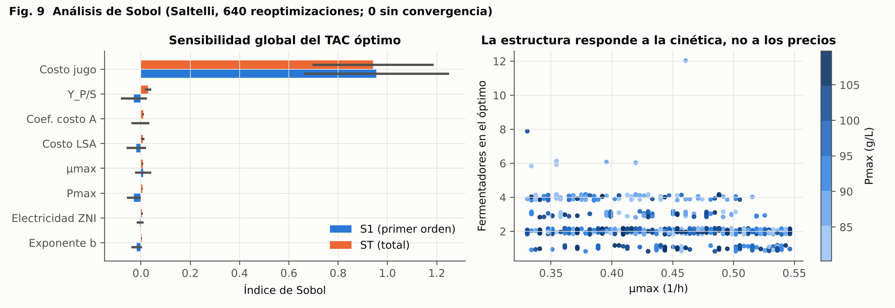<figcaption>Fig. 9. Cada muestra de Saltelli es una reoptimización completa de la superestructura con 2 arranques. Así se mide la sensibilidad del óptimo, no la de un diseño fijo.</figcaption></figure>
<div class="prose"><p>Se hicieron 640 reoptimizaciones (muestreo de Saltelli, N = 64, 8 factores) sin fallos de convergencia. El TAC óptimo varía entre 210 y 496 k USD/año (percentiles 5–95; coeficiente de variación 26 %). Los índices separan dos preguntas distintas:</p>
<ul class="tight">
<li><b>Cuánto cuesta.</b> El costo del jugo de rechazo explica casi toda la varianza del TAC (S1 = 0,955; ST = 0,942). Cada USD/m³ de jugo suma 7 838 USD/año. Ningún otro factor pasa de ST = 0,03: Y<sub>P/S</sub> llega a 0,029 y los parámetros de costo de equipos, el exponente b y la electricidad quedan por debajo de 0,01. El índice del jugo tiene un intervalo de confianza amplio (±0,25) por el tamaño de muestra, pero su dominancia no depende de esa incertidumbre.</li>
<li><b>Qué se construye.</b> El número de fermentadores óptimo no depende de los precios. Depende de la cinética: correlación de −0,36 con µmax y −0,28 con Pmax. Una levadura más lenta o más sensible al etanol pide más unidades (Fig. 9, derecha). En 54 % de las muestras el óptimo tiene 2 fermentadores, en 18 % tiene 4, en 14 % uno solo y en 13 % tres.</li>
</ul>
<p>Para la tesis: el precio del jugo de fruta de rechazo, y con él la logística de acopio en el Bajo Atrato (§3.3), es la variable económica que más importa medir. La calibración cinética del punto 2 de la sección de cambios es la que más importa para el diseño físico.</p></div>
</section>

<section id="m2">
<h2>Modelo 2 · Etanol del hub con reciclo de vinaza</h2>
<div class="prose">
<p>El modelo reproduce la planta de Corsano et al. (2006b) completa: propagación, fermentación con alternativas en serie y paralelo, centrífuga semicontinua y destilación por lotes. La destilación usa Fenske para N<sub>min</sub>, la aproximación de Underwood del artículo para R<sub>min</sub> y la correlación de la ec. 26 para R con 20 etapas. Cada fermentador decide cuánto toma de cada corriente del hub, cuánta vinaza recicla (hasta φ = 40 % de su volumen, por acumulación de sales) y cuánta agua añade. El rendimiento de biomasa depende de la mezcla, como en la ec. 6 de Corsano. El hidrolizado reduce µ<sub>max</sub> en proporción a su participación (furfural/HMF). La concentración de azúcar en la vinaza, S<sub>W</sub>, es una variable de optimización, igual que en el artículo.</p>
</div>
<pre class="eq">x_k · S0 · V  =  F_k · S_k  +  x_k,prev · S_prev · V_prev          (bilineal: el balance de propiedad del hub de §4.6, a escala de fermentador)
Yxs(x) = Σ a_k x_k + Σ b_kl x_k x_l                                 (Corsano 2004 ec. 6, coeficientes [S])
Z_res  = (H/CT) · [ (Ze+ZT) + (S_W + NF + 1,95·P_W)/Os · Z_BO ] · V_res   (2006b ec. 38 + etanol residual como DBO)</pre>
<div class="prose"><h3>Resultados base</h3>
<p>Con el hub tal como sale de los trenes (f = 1) y la penalización de la ec. 38, el óptimo repite la estructura de Corsano (2006b): una cascada de propagación y dos fermentadores en serie. El TAC es de 305,3 k USD/año, todo el azúcar se consume (S<sub>W</sub> → 0) y la columna opera con η = 0,905, R = 3,7 y N<sub>min</sub> = 2,3 sobre 20 etapas, con 3 683 t/año de vapor. Casi no se recicla vinaza (1 %).</p>
<div class="tbl"><table>
<thead><tr><th>Penalización de la vinaza</th><th>TAC (k USD/año)</th><th>Recuperación de etanol η</th><th>Reflujo R</th><th>Vinaza vertida (m³/año)</th></tr></thead>
<tbody>
<tr><td>Ninguna</td><td class="num">209,1</td><td class="num">0,800 (cota)</td><td class="num">2,19</td><td class="num">5 636</td></tr>
<tr><td>Ec. 37 (solo volumen)</td><td class="num">220,4</td><td class="num">0,800 (cota)</td><td class="num">2,19</td><td class="num">5 635</td></tr>
<tr><td>Ec. 38 (volumen + DBO; aquí con etanol)</td><td class="num">305,3</td><td class="num">0,905</td><td class="num">3,73</td><td class="num">4 942</td></tr>
</tbody></table></div>
<p>Esta tabla muestra un punto que Corsano no discute: la forma de la penalización ambiental decide el diseño de la destilación. Si la vinaza solo se cobra por volumen, o si su carga orgánica no incluye el etanol residual, el óptimo económico lleva la recuperación a su cota mínima y deja el 20 % del etanol en el efluente. Para la tesis esto tiene una consecuencia directa: el inventario de §7.4 y el objetivo ambiental de §6.6 deben contar el etanol residual como carga orgánica. Si no, la frontera de Pareto NPV–GWP premiará columnas que contaminan más.</p>
<h3>La concentración del hub decide si conviene reciclar</h3>
<p>Con f entre 1 y 5, la fracción reciclada pasa de 1 % a 10 % (f = 2), 61 % (f = 3) y 92 % (f = 5). La vinaza vertida cae de 4 942 a 248 m³/año (−95 %) y el TAC baja de 305,3 a 215,2 k USD/año, ya pagada la evaporación. La explicación es física. Corsano recicla vinaza porque su melaza (779 g/L) necesita agua de dilución, y la vinaza la sustituye. Las corrientes del hub de la piña ya vienen diluidas (60–110 g/L): no hay agua que sustituir, y reciclar solo diluye el mosto, baja el título y encarece la destilación. Por eso la concentración del hub, C<sub>H</sub> en §4.6, no es solo un problema de pooling: decide la estrategia de efluentes.</p></div>
<figure>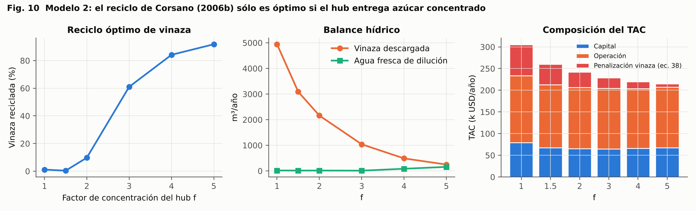<figcaption>Fig. 10. Se concentran todas las corrientes del hub por un factor f, con evaporación de múltiple efecto a 0,35 t de vapor por t de agua, manteniendo el costo por kilogramo de azúcar.</figcaption></figure>
<figure>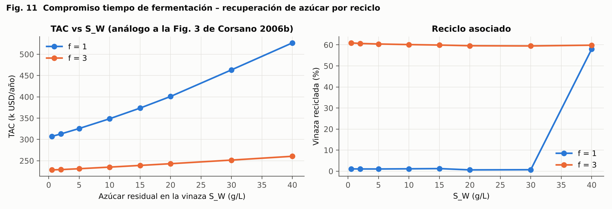<figcaption>Fig. 11. TAC frente a S<sub>W</sub> fijo. Con hub diluido (f = 1), dejar azúcar sin fermentar es caro porque no se recicla. Con hub concentrado (f = 3), el reciclo recupera ese azúcar y la curva es casi plana.</figcaption></figure>
<figure>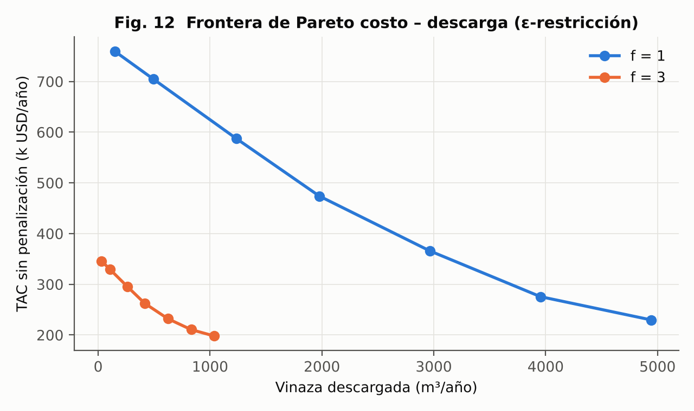<figcaption>Fig. 12. Frontera costo–descarga por ε-restricción sobre el volumen anual de vinaza vertida, sin penalización en el objetivo.</figcaption></figure>
<figure>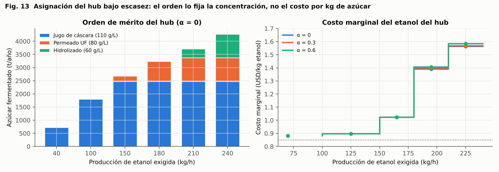<figcaption>Fig. 13. Porcentaje del azúcar fermentado que proviene del hidrolizado de hojas/corona, según la inhibición α y su costo.</figcaption></figure>
<div class="prose"><p><b>S<sub>W</sub> y reciclo (Fig. 11).</b> Con hub diluido, dejar azúcar sin fermentar es caro: el TAC sube de 307 a 463 k USD/año entre 0,5 y 30 g/L, y solo a 40 g/L el modelo recurre al reciclo (58 %). Con f = 3 la curva es casi plana (228 → 260 k USD/año) porque el reciclo recupera ese azúcar. Esto coincide con lo que encontró Corsano (2006b): un S<sub>W</sub> óptimo alto (41,4 g/L) solo tiene sentido cuando la vinaza se recicla.</p>
<p><b>Frontera costo–descarga (Fig. 12).</b> Con f = 1, bajar la descarga un 20 % (de 4 942 a 3 954 m³/año) cuesta 46 USD por m³ evitado. Eso es tres veces el costo de tratamiento implícito en la ec. 38 (≈15–21 USD/m³). Con hub diluido, la decisión racional es tratar la vinaza, no reciclarla. Concentrar el hub reduce la vinaza en el origen: el punto de partida con f = 3 ya vierte 79 % menos.</p>
<p><b>Límite de reciclo φ.</b> Con f = 3, pasar de φ = 0 a φ = 0,3 baja el TAC de 255,7 a 231,1 k USD/año. Por encima de 0,3 casi no hay ganancia. La tolerancia de la levadura a la vinaza reciclada (sales e inhibidores) es entonces un dato experimental de alto valor para la tesis.</p>
<p><b>Asignación del hub bajo escasez (Fig. 13).</b> Al subir la producción exigida, el óptimo agota primero el jugo de cáscara (110 g/L), después el permeado UF (80 g/L) y al final el hidrolizado (60 g/L). Ese orden sigue la concentración y no el costo por kg de azúcar: el permeado es el más barato y entra segundo. El costo marginal del etanol sube por escalones: 0,88–0,90 USD/kg con cáscara, 1,02 con permeado, 1,39–1,58 con hidrolizado. La inhibición del hidrolizado casi no importa (+0,4 % de TAC con α = 0,6) porque el tiempo de fermentación la compensa. Con estos supuestos de costo, el etanol del hub cuesta en promedio 1,02 USD/kg frente a un precio supuesto de 0,85. Esto es coherente con el criterio de densidad de valor de §3.4: el azúcar diluido del hub rinde más en productos de mayor valor (ácido cítrico, xantana) que en etanol carburante.</p></div>
</section>

<section id="m3">
<h2>Modelo 3 · Campañas mixtas</h2>
<div class="prose">
<p>Vino (A) y bioetanol del hub (B) comparten propagador, fermentador y centrífuga. La destilación es solo de B; el acetador y los tanques de envejecimiento de 90 días son solo de A. Con espera cero en un flow-shop, el retardo mínimo entre el inicio de un lote i y el siguiente k se obtiene así:</p>
</div>
<pre class="eq">d_ik ≥ s_ij + t_ij − s_kj      para toda etapa compartida j   (s_ij: inicio de la etapa j en el lote i)
SPC:       N_A·d_AA + N_B·d_BB ≤ H
Campaña c: N_c · Σ_q d(c_q, c_q+1) ≤ H,    N_A = n_A(c)·N_c,   N_B = n_B(c)·N_c</pre>
<div class="prose">
<p>Se aplicó la heurística de cuatro pasos de Corsano (2007). Primero se resolvió el modelo SPC, que dio una razón N<sub>A</sub>/N<sub>B</sub> = 0,62 (335 lotes de vino y 539 de etanol al año). Luego se generaron las secuencias cíclicas primitivas de hasta 6 posiciones, se eligieron las 11 más cercanas a esa razón y se resolvió un NLP por campaña con 5 arranques cada uno. La campaña <b>AB</b> gana: 2,989 M USD/año frente a 2,963 M USD/año con SPC (+25,3 k USD/año). La mejora no viene de un ciclo más corto. Al intercalar los lotes (Fig. 14), los equipos compartidos se dimensionan para lotes más parecidos: el fermentador baja de 27,9 a 22,1 m³ (−21 %), el propagador de 2,8 a 2,2 m³ y la inversión de 3,970 a 3,864 M USD. Mientras tanto, la destilación, exclusiva de B, trabaja en paralelo con los lotes de A (ciclo AB de 17,8 h).</p>
<p>Hay una diferencia de fondo con el artículo: con espera cero, el modelo SPC no es una relajación de las campañas mixtas, porque d<sub>AB</sub> + d<sub>BA</sub> puede ser menor que d<sub>AA</sub> + d<sub>BB</sub>. Corsano lo presenta como una relajación; aquí funciona como estimador de la razón de lotes, que es su papel real dentro de la heurística.</p>
</div>
<figure>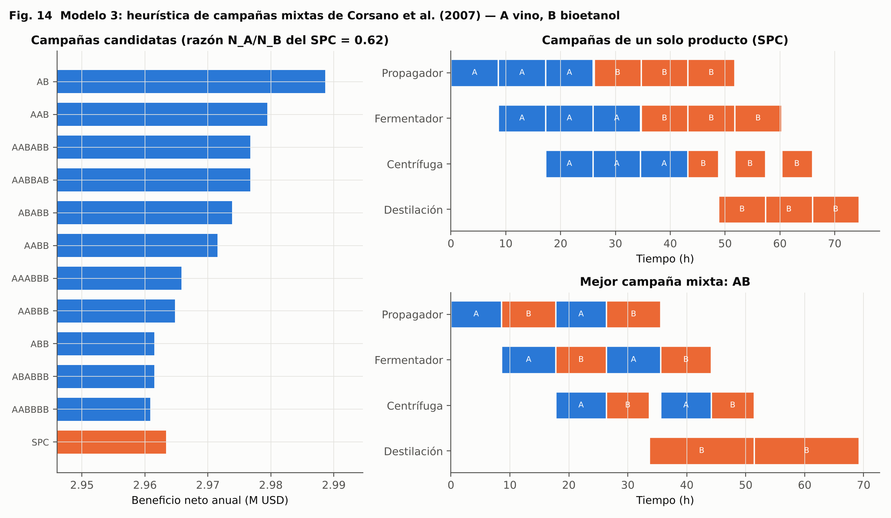<figcaption>Fig. 14. Beneficio de las 12 campañas candidatas y Gantt de SPC frente a la mejor campaña mixta.</figcaption></figure>
</section>

<section id="m4">
<h2>Modelo 4 · Multiplanta vs multiproducto</h2>
<div class="prose">
<p>El complejo multiplanta (MC) sigue las ec. 4.1–4.13 del libro. La planta 1 produce vino y vinagre, y la planta 2 etanol, cada una con sus propios equipos, tiempo de ciclo y restricción N<sub>l</sub>·CT<sub>l</sub> ≤ H. La planta madre entrega jugo, azúcar del hub, electricidad (60 kW del gasificador a 0,08 USD/kWh) y vapor. El respaldo es diésel y el excedente eléctrico se exporta a la microrred a 0,20 USD/kWh. Ambas configuraciones alcanzan las mismas producciones (7 830 m³ de vino, 1 500 m³ de vinagre y 300 t de etanol por año), así que la comparación es solo de costos, como en la Tabla 4.3 del libro.</p>
</div>
<div class="tbl"><table>
<thead><tr><th>Concepto (USD/año)</th><th>MC (2 plantas)</th><th>MP campaña AB</th><th>Diferencia</th></tr></thead>
<tbody>
<tr><td>Inversión total</td><td class="num">3 913 233</td><td class="num">3 864 103</td><td class="num">−1,3 %</td></tr>
<tr><td>Capital anualizado</td><td class="num">880 477</td><td class="num">869 423</td><td class="num">−11 054</td></tr>
<tr><td>Materias primas</td><td class="num">385 835</td><td class="num">386 132</td><td class="num">+297</td></tr>
<tr><td>Energía (costo − exportación)</td><td class="num">−32 033</td><td class="num">−32 218</td><td class="num">−185</td></tr>
<tr><td>Beneficio sin mano de obra</td><td class="num">2 977 721</td><td class="num">2 988 663</td><td class="num">+10 942</td></tr>
<tr><td>Operarios (regla del libro, 3 turnos)</td><td class="num">15</td><td class="num">9</td><td class="num">−6</td></tr>
<tr><td>Beneficio con mano de obra (7 500 USD/operario)</td><td class="num">2 865 221</td><td class="num">2 921 163</td><td class="num">+55 942</td></tr>
<tr><td>Ídem con 4,2 dotaciones (24/7 real)</td><td class="num">2 820 221</td><td class="num">2 894 163</td><td class="num">+73 942</td></tr>
</tbody></table></div>
<figure>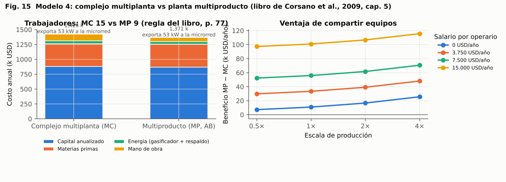<figcaption>Fig. 15. Izquierda: desglose de costos. Derecha: ventaja de MP sobre MC según la escala y el salario por operario.</figcaption></figure>
<div class="prose">
<p>El resultado reproduce la conclusión cualitativa de Corsano: las dos arquitecturas quedan económicamente cerca (0,4 % del beneficio sin mano de obra) y la decisión la inclina el personal, que el libro menciona pero no valora. En la piña, la ventaja de MP en inversión es mucho menor que el 19 % del libro (1,3 %). La razón es que buena parte del capital está en equipos dedicados que no se comparten en ninguna de las dos configuraciones: tanques de envejecimiento de 90 días, destilación y acetador. La ventaja de MP crece con la escala (Fig. 15) porque el ahorro por compartir equipos escala con V<sup>0,6</sup> y la mano de obra es fija por turno.</p>
<p>Esto delimita qué puede afirmar la tesis en §9.6. Confirmar H1 (hub compartido frente a trenes independientes) no dice nada sobre el tercer punto del espectro, compartir también los equipos. Ese tercer punto resulta favorable pero pequeño en recursos materiales, y su signo lo decide un factor social (empleo rural) que tiene peso propio en el contexto del Bajo Atrato. Allí 6 empleos adicionales en el esquema MC pueden ser un objetivo de política (§10.2), no solo un costo.</p>
</div>
</section>

<section id="tesis">
<h2>Cambios concretos que sugiere a la tesis</h2>
<ol class="edits prose">
<li><b>§4.2.4.</b> Sustituir el argumento cerrado del número de trenes por el resultado de la Fig. 6: la curva TAC–τ y la estructura que emerge en cada nivel. Presentar 12 fermentadores como el caso τ = 1 h y no como el diseño recomendado, si el glutatión cubre el riesgo de oxidación.</li>
<li><b>§4.2.3.</b> Declarar que el dato cinético de Murcia Palacios (2013) es un punto final que no identifica µmax ni la dosis de inóculo (Fig. 3) y que el tiempo de diseño cambia 2,3 veces dentro del conjunto compatible. Añadirlo a la incertidumbre de §6.7.</li>
<li><b>§6.9.</b> Incorporar como evidencia del protocolo los 10 óptimos locales en 25 arranques (Fig. 5), el desacuerdo entre B-BB y B-OA y la verificación a posteriori con LSODA (error &lt; 0,2 %).</li>
<li><b>§6.10.</b> Reemplazar "no se ha cuantificado" por la cifra de la Fig. 8: costo de la cadena jerárquica frente a la simultánea. Corregir la idea heredada de que 5 nodos trapezoidales bastan (Fig. 1–2). Marcar como verificadas las cifras de la Tabla 4.3 del libro.</li>
<li><b>§4.6 y §6.3.</b> Usar la Fig. 10 para argumentar que la concentración del hub (C<sub>H</sub>) no es solo una variable del pooling: decide si el reciclo de efluentes es rentable. Es un acoplamiento hub–ambiente que la tesis no tiene explícito.</li>
<li><b>§6.6 y §7.</b> Incluir el etanol residual de la vinaza en la carga orgánica penalizada. Sin ese término, el óptimo económico lleva la recuperación de etanol a su cota mínima.</li>
<li><b>§9.6 y §11.3, punto 7.</b> Pasar el benchmark MC–MP de "trabajo futuro" a "realizado en forma exploratoria" (Modelo 4, Fig. 15), con la advertencia de parámetros [S].</li>
</ol>
</section>

<section id="limites">
<h2>Validez y límites</h2>
<ul class="tight prose">
<li>Costos unitarios, propiedades del hub, coeficientes del rendimiento de mezcla y precios de etanol y vinagre son supuestos <span class="tag">[S]</span>. Las estructuras óptimas se mantuvieron en los barridos, pero las cifras absolutas no son resultados.</li>
<li>La cinética del vino no incluye nitrógeno asimilable ni temperatura. Hereda la limitación que la tesis ya declara para Moresi (§4.2.5).</li>
<li>En los Modelos 3–4 cada etapa tiene una sola unidad, para aislar el efecto de compartir equipos. El número de lotes se trata como continuo, como en Corsano. La destilación usa un costo simplificado (factor de vapor ∝ 1/título), más favorable al etanol que el modelo detallado del Modelo 2. Por eso el beneficio absoluto de esos modelos lo dominan las ventas de vino.</li>
<li>El inóculo se limita a ≤ 10 % del lote, con pitching ≥ 0,5 g/L, y el vino se exige ≥ 55 g/L de etanol (7,0 % v/v). Sin esas restricciones, el modelo multiproducto diluía el vino con el mosto del propagador.</li>
<li>Solo el subproblema de una etapa tiene certificado de optimalidad global (SCIP). Para los modelos completos, el multiarranque y el pulido por estructura reducen el riesgo, pero no lo eliminan. El paso siguiente natural es llevar la formulación reformulada de <code>m1_global.py</code> a la superestructura completa con SCIP o BARON.</li>
<li>El SPC no es una relajación de las campañas mixtas bajo espera cero (ver Modelo 3).</li>
<li>Los experimentos E3, E4, E6 y E8 del Modelo 1 usan la superestructura original, sin la alternativa de 3 en serie. Según el pulido de la Fig. 7, incluirla baja el TAC entre 0,2 % y 8 % según la celda (0,5 % en el caso base). Las conclusiones de esos experimentos no cambian, pero las cifras absolutas quedan ligeramente sobreestimadas.</li>
</ul>
</section>

<section id="repro">
<h2>Reproducibilidad</h2>
<div class="prose">
<p>El código está en <code>corsano_pina/</code>: <code>params.py</code> (base de diseño con procedencias), <code>kinetics.py</code>, los cuatro modelos, cuatro scripts de experimentos y <code>figuras.py</code>. Los resultados crudos de cada experimento quedan en <code>results/*.json</code>. Las instrucciones de ejecución están en <code>README.md</code>. Tiempo total aproximado: 35 minutos con 4 núcleos.</p>
</div>
</section>

</main>
